<!DOCTYPE html>
<html class="writer-html5" lang="en" data-content_root="./">
<head>
  <meta charset="utf-8" /><meta name="viewport" content="width=device-width, initial-scale=1" />

  <meta name="viewport" content="width=device-width, initial-scale=1.0" />
  <title>Linux 6.1.36_User’s Manual_V1.0 &mdash; Forlinx Embedded i.MX 8M Plus Documentation  documentation</title>
      <link rel="stylesheet" type="text/css" href="_static/pygments.css?v=b86133f3" />
      <link rel="stylesheet" type="text/css" href="_static/css/theme.css?v=e59714d7" />
      <link rel="stylesheet" type="text/css" href="_static/custom.css?v=30170994" />

  
    <link rel="shortcut icon" href="_static/forlinx.png"/>
    <link rel="canonical" href="https://forlinxembedded.github.io/nxp/okmx8mpq-c/OK-MX8MPQ-C_Linux6_1_36_User_Manual.html" />
      <script src="_static/jquery.js?v=5d32c60e"></script>
      <script src="_static/_sphinx_javascript_frameworks_compat.js?v=2cd50e6c"></script>
      <script src="_static/documentation_options.js?v=5929fcd5"></script>
      <script src="_static/doctools.js?v=9bcbadda"></script>
      <script src="_static/sphinx_highlight.js?v=dc90522c"></script>
    <script src="_static/js/theme.js"></script>
    <link rel="index" title="Index" href="genindex.html" />
    <link rel="search" title="Search" href="search.html" />
    <link rel="next" title="Linux 6.1.36_User’s Compilation Manual_V1.0" href="OK_MX8MPQ-C_Linux6_1_36_User_Compilation_Manual.html" />
    <link rel="prev" title="OKMX8MPQ-C Manual" href="index.html" />
   

  <!-- Load Font Awesome from CDN -->
  <link rel="stylesheet" href="https://cdnjs.cloudflare.com/ajax/libs/font-awesome/6.5.0/css/all.min.css">

  <!-- Google Analytics -->
  <script async src="https://www.googletagmanager.com/gtag/js?id=G-N8EJPNL8NR"></script>
  <script>
    window.dataLayer = window.dataLayer || [];
    function gtag(){dataLayer.push(arguments);}
    gtag('js', new Date());
    gtag('config', 'G-N8EJPNL8NR');
  </script>

</head>

<body class="wy-body-for-nav"> 
  <div class="wy-grid-for-nav">
    <nav data-toggle="wy-nav-shift" class="wy-nav-side">
      <div class="wy-side-scroll">
        <div class="wy-side-nav-search" >

          
          
          <a href="index.html">
            
              
          </a>
<div role="search">
  <form id="rtd-search-form" class="wy-form" action="search.html" method="get">
    <input type="text" name="q" placeholder="Search docs" aria-label="Search docs" />
    <input type="hidden" name="check_keywords" value="yes" />
    <input type="hidden" name="area" value="default" />
  </form>
</div>
        </div><div class="wy-menu wy-menu-vertical" data-spy="affix" role="navigation" aria-label="Navigation menu">
              <p class="caption" role="heading"><span class="caption-text">SOFTWARE</span></p>
<ul class="current">
<li class="toctree-l1 current"><a class="current reference internal" href="#">Linux 6.1.36_User’s Manual_V1.0</a><ul>
<li class="toctree-l2"><a class="reference internal" href="#copyright">Copyright</a></li>
<li class="toctree-l2"><a class="reference internal" href="#overview">Overview</a></li>
<li class="toctree-l2"><a class="reference internal" href="#application-scope">Application Scope</a></li>
<li class="toctree-l2"><a class="reference internal" href="#revision-history">Revision History</a></li>
<li class="toctree-l2"><a class="reference internal" href="#ok-mx8mpx-c-development-board-description">1. OK- MX8MPX-C Development Board Description</a><ul>
<li class="toctree-l3"><a class="reference internal" href="#id1">1.1 OK-MX8MPX-C Development Board Description</a></li>
<li class="toctree-l3"><a class="reference internal" href="#introduction-to-linux-6-1-36-system-software-resources">1.2 Introduction to Linux 6.1.36 System Software Resources</a></li>
<li class="toctree-l3"><a class="reference internal" href="#emmc-memory-partition-table">1.3 EMMC Memory Partition Table</a></li>
<li class="toctree-l3"><a class="reference internal" href="#flashing-and-boot-test">1.4 Flashing and Boot Test</a></li>
</ul>
</li>
<li class="toctree-l2"><a class="reference internal" href="#fast-startup">2. Fast Startup</a><ul>
<li class="toctree-l3"><a class="reference internal" href="#preparation-before-startup">2.1 Preparation Before Startup</a></li>
<li class="toctree-l3"><a class="reference internal" href="#debugging-serial-driver-installation">2.2 Debugging Serial Driver Installation</a></li>
<li class="toctree-l3"><a class="reference internal" href="#serial-login">2.3 Serial Login</a><ul>
<li class="toctree-l4"><a class="reference internal" href="#serial-port-connection-settings">2.3.1 Serial Port Connection Settings</a></li>
<li class="toctree-l4"><a class="reference internal" href="#serial-login-common-problems">2.3.2 Serial Login Common Problems</a></li>
</ul>
</li>
<li class="toctree-l3"><a class="reference internal" href="#network-login-methods">2.4 Network Login Methods</a><ul>
<li class="toctree-l4"><a class="reference internal" href="#network-connection-test">2.4.1 Network Connection Test</a></li>
<li class="toctree-l4"><a class="reference internal" href="#ssh-server">2.4.2 SSH Server</a></li>
<li class="toctree-l4"><a class="reference internal" href="#sftp">2.4.3 SFTP</a></li>
</ul>
</li>
<li class="toctree-l3"><a class="reference internal" href="#screen-switching">2.5 Screen Switching</a><ul>
<li class="toctree-l4"><a class="reference internal" href="#dynamic-control-of-uboot-menu">2.5.1 Dynamic Control of Uboot Menu</a></li>
<li class="toctree-l4"><a class="reference internal" href="#kernel-device-tree-specification">2.5.2 Kernel Device Tree Specification</a></li>
</ul>
</li>
<li class="toctree-l3"><a class="reference internal" href="#system-partition">2.6 System Partition</a><ul>
<li class="toctree-l4"><a class="reference internal" href="#emmc-memory">2.6.1 EMMC Memory</a></li>
<li class="toctree-l4"><a class="reference internal" href="#ddr-memory">2.6.2 DDR Memory</a></li>
</ul>
</li>
<li class="toctree-l3"><a class="reference internal" href="#system-shutdown">2.7 System Shutdown</a></li>
</ul>
</li>
<li class="toctree-l2"><a class="reference internal" href="#desktop-function-test">3. Desktop Function Test</a><ul>
<li class="toctree-l3"><a class="reference internal" href="#introduction-to-interface-function">3.1 Introduction to Interface Function</a></li>
<li class="toctree-l3"><a class="reference internal" href="#network-configuration-test">3.2 Network Configuration Test</a><ul>
<li class="toctree-l4"><a class="reference internal" href="#static-mode">3.2.1 STATIC Mode</a></li>
<li class="toctree-l4"><a class="reference internal" href="#dhcp-mode">3.2.2 DHCP Mode</a></li>
</ul>
</li>
<li class="toctree-l3"><a class="reference internal" href="#opengl-test">3.3 OpenGL Test</a></li>
<li class="toctree-l3"><a class="reference internal" href="#g-5g-test">3.4 4G/5G Test</a></li>
<li class="toctree-l3"><a class="reference internal" href="#uart-test">3.5 UART Test</a></li>
<li class="toctree-l3"><a class="reference internal" href="#wifi-test">3.6 WIFI Test</a></li>
<li class="toctree-l3"><a class="reference internal" href="#rtc-test">3.7 RTC Test</a></li>
<li class="toctree-l3"><a class="reference internal" href="#watchdog-test">3.8 Watchdog Test</a></li>
<li class="toctree-l3"><a class="reference internal" href="#ping-test">3.9 Ping Test</a></li>
<li class="toctree-l3"><a class="reference internal" href="#camera-test">3.10 Camera Test</a></li>
<li class="toctree-l3"><a class="reference internal" href="#backlight-test">3.11 Backlight Test</a></li>
<li class="toctree-l3"><a class="reference internal" href="#play-record-test">3.12 Play/Record Test</a></li>
<li class="toctree-l3"><a class="reference internal" href="#music-playback-test">3.13 Music Playback Test</a></li>
<li class="toctree-l3"><a class="reference internal" href="#qml-video-playback-test">3.14 Qml Video Playback Test</a></li>
<li class="toctree-l3"><a class="reference internal" href="#browser-test">3.15 Browser Test</a></li>
</ul>
</li>
<li class="toctree-l2"><a class="reference internal" href="#command-line-function-test">4. Command Line Function Test</a><ul>
<li class="toctree-l3"><a class="reference internal" href="#system-information-query">4.1 System Information Query</a></li>
<li class="toctree-l3"><a class="reference internal" href="#frequency-test">4.2 Frequency Test</a></li>
<li class="toctree-l3"><a class="reference internal" href="#temperature-test">4.3 Temperature Test</a></li>
<li class="toctree-l3"><a class="reference internal" href="#ddr-bandwidth-test">4.4 DDR Bandwidth Test</a></li>
<li class="toctree-l3"><a class="reference internal" href="#id2">4.5 Watchdog Test</a></li>
<li class="toctree-l3"><a class="reference internal" href="#rtc-function-test">4.6 RTC Function Test</a></li>
<li class="toctree-l3"><a class="reference internal" href="#rs485-test">4.7 RS485 Test</a></li>
<li class="toctree-l3"><a class="reference internal" href="#pcie-test">4.8 PCIE Test</a></li>
<li class="toctree-l3"><a class="reference internal" href="#tf-card-test">4.9 TF Card Test</a></li>
<li class="toctree-l3"><a class="reference internal" href="#emmc-test">4.10 EMMC Test</a></li>
<li class="toctree-l3"><a class="reference internal" href="#usb3-0-test">4.11 USB3.0 Test</a><ul>
<li class="toctree-l4"><a class="reference internal" href="#usb-mouse-test">4.11.1  USB Mouse Test</a></li>
<li class="toctree-l4"><a class="reference internal" href="#usb-u-disk-test">4.11.2  USB U Disk Test</a></li>
<li class="toctree-l4"><a class="reference internal" href="#usb-to-uart-test">4.11.3 USB to UART Test</a></li>
<li class="toctree-l4"><a class="reference internal" href="#otg-test">4.11.4 OTG Test</a></li>
</ul>
</li>
<li class="toctree-l3"><a class="reference internal" href="#network-test">4.12 Network Test</a><ul>
<li class="toctree-l4"><a class="reference internal" href="#gigabit-network-static-ip-configuration">4.12.1 Gigabit Network Static IP Configuration</a></li>
<li class="toctree-l4"><a class="reference internal" href="#internet-speed-test">4.12.2  Internet Speed Test</a></li>
</ul>
</li>
<li class="toctree-l3"><a class="reference internal" href="#id3">4.13 Network Test</a><ul>
<li class="toctree-l4"><a class="reference internal" href="#web-test">4.13.1 Web Test</a></li>
</ul>
</li>
<li class="toctree-l3"><a class="reference internal" href="#wifi-bt-test">4.14 WiFi/BT Test</a><ul>
<li class="toctree-l4"><a class="reference internal" href="#wifi-sta-mode-test">4.14.1 WIFI- STA Mode Test</a></li>
<li class="toctree-l4"><a class="reference internal" href="#wifi-ap-mode-test">4.14.2 WIFI- AP Mode Test</a></li>
<li class="toctree-l4"><a class="reference internal" href="#bt-test">4.14.3  BT Test</a></li>
</ul>
</li>
<li class="toctree-l3"><a class="reference internal" href="#id4">4.15 4G/5G Test</a><ul>
<li class="toctree-l4"><a class="reference internal" href="#g-test">4.15.1  4G Test</a></li>
<li class="toctree-l4"><a class="reference internal" href="#id5">4.15.2  5G Test</a></li>
</ul>
</li>
<li class="toctree-l3"><a class="reference internal" href="#play-record-audio-test">4.16 Play/Record Audio Test</a></li>
<li class="toctree-l3"><a class="reference internal" href="#close-the-desktop">4.17 Close the Desktop</a></li>
<li class="toctree-l3"><a class="reference internal" href="#sqlite3-database-test">4.18 SQLite3 Database Test</a></li>
<li class="toctree-l3"><a class="reference internal" href="#pwm-test">4.19 PWM Test</a><ul>
<li class="toctree-l4"><a class="reference internal" href="#lvds-backlight-test">4.19.1 LVDS Backlight Test</a></li>
<li class="toctree-l4"><a class="reference internal" href="#mipi-dsi-screen-backlight-test">4.19.2 MIPI-DSI Screen Backlight Test</a></li>
</ul>
</li>
<li class="toctree-l3"><a class="reference internal" href="#can-test">4.20 CAN Test</a><ul>
<li class="toctree-l4"><a class="reference internal" href="#can-bus-test">4.20.1 CAN Bus Test</a></li>
<li class="toctree-l4"><a class="reference internal" href="#other-common-commands">4.20.2 Other Common Commands</a></li>
</ul>
</li>
<li class="toctree-l3"><a class="reference internal" href="#spi-interface-test">4.21 SPI Interface Test</a></li>
<li class="toctree-l3"><a class="reference internal" href="#gpio-interface-test">4.22 GPIO Interface Test</a><ul>
<li class="toctree-l4"><a class="reference internal" href="#gpio-leds-test">4.22.1  GPIO-LEDS Test</a></li>
<li class="toctree-l4"><a class="reference internal" href="#gpio-button-test">4.22.2  GPIO- BUTTON Test</a></li>
</ul>
</li>
<li class="toctree-l3"><a class="reference internal" href="#qspi-interface-test">4.23 QSPI Interface Test</a></li>
<li class="toctree-l3"><a class="reference internal" href="#sleep-wake-up-test">4.24 Sleep Wake-up Test</a></li>
<li class="toctree-l3"><a class="reference internal" href="#ipv6-test">4.25 IPV6 Test</a></li>
</ul>
</li>
<li class="toctree-l2"><a class="reference internal" href="#ok-mx8mpx-c-platform-multimedia-test">5. OK- MX8MPX-C Platform Multimedia Test</a><ul>
<li class="toctree-l3"><a class="reference internal" href="#audio-and-video-playback">5.1 Audio and Video Playback</a><ul>
<li class="toctree-l4"><a class="reference internal" href="#playing-audio-and-video-with-gst-play">5.1.1 Playing Audio and Video with Gst-play</a></li>
<li class="toctree-l4"><a class="reference internal" href="#playing-video-with-gst-launch">5.1.2 Playing Video with Gst-launch</a></li>
<li class="toctree-l4"><a class="reference internal" href="#play-ing-audio-with-gst-launch">5.1.3 Play ing Audio with Gst-launch</a></li>
<li class="toctree-l4"><a class="reference internal" href="#playing-video-and-audio-with-gst-launch">5.1.4 Playing Video and Audio with gst-launch</a></li>
</ul>
</li>
<li class="toctree-l3"><a class="reference internal" href="#video-hardware-encoding">5.2 Video Hardware Encoding</a><ul>
<li class="toctree-l4"><a class="reference internal" href="#video-hardware-encoding-h-264">5.2.1 Video Hardware Encoding H.264</a></li>
<li class="toctree-l4"><a class="reference internal" href="#video-hardware-encoding-h-265">5.2.2 Video Hardware Encoding H.265</a></li>
</ul>
</li>
<li class="toctree-l3"><a class="reference internal" href="#video-hardware-decoding">5.3 Video Hardware Decoding</a><ul>
<li class="toctree-l4"><a class="reference internal" href="#decoding-and-playing-h-264-format-video">5.3.1 Decoding and Playing H.264 Format Video</a></li>
<li class="toctree-l4"><a class="reference internal" href="#decoding-and-playing-h264-format-video-with-audio">5.3.2 Decoding and Playing H264 Format Video with Audio</a></li>
<li class="toctree-l4"><a class="reference internal" href="#decoding-and-playing-h-265-format-video">5.3.3 Decoding and Playing H.265 Format Video</a></li>
<li class="toctree-l4"><a class="reference internal" href="#decoding-and-playing-h265-format-video-with-audio">5.3.4 Decoding and Playing H265 Format Video with Audio</a></li>
<li class="toctree-l4"><a class="reference internal" href="#decoding-and-playing-vp9-format-video">5.3.5 Decoding and Playing VP9 Format Video</a></li>
<li class="toctree-l4"><a class="reference internal" href="#decoding-and-playing-vp9-format-video-with-audio">5.3.6 Decoding and Playing VP9 Format Video with Audio</a></li>
<li class="toctree-l4"><a class="reference internal" href="#decoding-and-playing-vp8-format-video">5.3.7 Decoding and Playing VP8 Format Video</a></li>
</ul>
</li>
<li class="toctree-l3"><a class="reference internal" href="#video-conversion-color-space-conversion-and-rotation-scaling">5.4 Video Conversion (Color Space Conversion and Rotation Scaling)</a></li>
<li class="toctree-l3"><a class="reference internal" href="#video-compositing">5.5 Video Compositing</a></li>
<li class="toctree-l3"><a class="reference internal" href="#npu-test">5.6 NPU Test</a></li>
<li class="toctree-l3"><a class="reference internal" href="#id6">5.7 Camera Test</a><ul>
<li class="toctree-l4"><a class="reference internal" href="#usb-camera-test">5.7.1 USB Camera Test</a></li>
<li class="toctree-l4"><a class="reference internal" href="#ov5645-camera-test">5.7.2 OV5645 Camera Test</a></li>
<li class="toctree-l4"><a class="reference internal" href="#basler-camera-test">5.7.3 BASLER Camera Test</a></li>
</ul>
</li>
</ul>
</li>
<li class="toctree-l2"><a class="reference internal" href="#ok-mx8mpx-c-system-settings">6. OK-MX8MPX-C System Settings</a><ul>
<li class="toctree-l3"><a class="reference internal" href="#updating-logo">6.1 Updating Logo</a></li>
<li class="toctree-l3"><a class="reference internal" href="#self-starting-program-settings">6.2 Self-starting Program Settings</a></li>
<li class="toctree-l3"><a class="reference internal" href="#system-submission-version-check">6.3 System Submission Version Check</a></li>
</ul>
</li>
<li class="toctree-l2"><a class="reference internal" href="#system-flashing">7. System Flashing</a><ul>
<li class="toctree-l3"><a class="reference internal" href="#image-required-for-flashing">7.1 Image Required for Flashing</a></li>
<li class="toctree-l3"><a class="reference internal" href="#flashing-uboot-via-usb">7.2 Flashing Uboot via USB</a><ul>
<li class="toctree-l4"><a class="reference internal" href="#flashing-uboot-to-emmc">7.2.1 Flashing Uboot to eMMC</a></li>
<li class="toctree-l4"><a class="reference internal" href="#flashing-uboot-to-sd">7.2.2 Flashing Uboot to SD</a></li>
<li class="toctree-l4"><a class="reference internal" href="#flashing-uboot-to-qspiflash">7.2.3 Flashing Uboot to QSPIFLASH</a></li>
</ul>
</li>
<li class="toctree-l3"><a class="reference internal" href="#flashing-the-linux-system-via-usb">7.3 Flashing the Linux System via USB</a></li>
<li class="toctree-l3"><a class="reference internal" href="#flashing-uboot-to-spiflash">7.4 Flashing Uboot to SPIFLASH</a></li>
<li class="toctree-l3"><a class="reference internal" href="#flashing-via-tf-card">7.5 Flashing via TF Card</a><ul>
<li class="toctree-l4"><a class="reference internal" href="#making-tf-card">7.5.1 Making TF Card</a></li>
<li class="toctree-l4"><a class="reference internal" href="#copying-the-images-to-be-programmed-to-the-tf-card">7.5.2 Copying the Images to be Programmed to the TF Card</a></li>
</ul>
</li>
</ul>
</li>
<li class="toctree-l2"><a class="reference internal" href="#mcuxpresso-sdk-development-board">8. MCUXpresso_SDK Development Board</a><ul>
<li class="toctree-l3"><a class="reference internal" href="#compiling-the-sample-program-with-the-arm-gcc-compiler">8.1 Compiling the Sample Program with the ARM GCC Compiler</a></li>
<li class="toctree-l3"><a class="reference internal" href="#running-the-sample-program-with-uboot">8.2 Running the Sample Program with Uboot</a></li>
<li class="toctree-l3"><a class="reference internal" href="#heterogeneous-multi-core-communication-test">8.3 Heterogeneous Multi-core Communication Test</a></li>
<li class="toctree-l3"><a class="reference internal" href="#freertos-test">8.4 FreeRTOS Test</a></li>
</ul>
</li>
</ul>
</li>
<li class="toctree-l1"><a class="reference internal" href="OK_MX8MPQ-C_Linux6_1_36_User_Compilation_Manual.html">Linux 6.1.36_User’s Compilation Manual_V1.0</a></li>
<li class="toctree-l1"><a class="reference internal" href="OK-MX8MPQ-C_MCU_User_Manual.html">MCU_User’s Manual_V1.0</a></li>
<li class="toctree-l1"><a class="reference internal" href="OK-MX8MPQ-C_MCU_User_Compilation_Manual.html">MCU User’s Compilation Manual_V1.0</a></li>
</ul>

        </div>
      </div>
    </nav>

    <section data-toggle="wy-nav-shift" class="wy-nav-content-wrap"><nav class="wy-nav-top" aria-label="Mobile navigation menu" >
          <i data-toggle="wy-nav-top" class="fa fa-bars"></i>
          <a href="index.html">Forlinx Embedded i.MX 8M Plus Documentation</a>
      </nav>

      <div class="wy-nav-content">
        <div class="rst-content">
          <div role="navigation" aria-label="Page navigation">
  <ul class="wy-breadcrumbs">
      <li><a href="index.html" class="icon icon-home" aria-label="Home"></a></li>
      <li class="breadcrumb-item active">Linux 6.1.36_User’s Manual_V1.0</li>
      <li class="wy-breadcrumbs-aside">
      </li>
  </ul>
  <hr/>
</div>
          <div role="main" class="document" itemscope="itemscope" itemtype="http://schema.org/Article">
           <div itemprop="articleBody">
             
  <section id="linux-6-1-36-users-manual-v1-0">
<h1>Linux 6.1.36_User’s Manual_V1.0<a class="headerlink" href="#linux-6-1-36-users-manual-v1-0" title="Link to this heading"></a></h1>
<p>Document classification: □ Top secret □ Secret □ Internal information ■ Open</p>
<section id="copyright">
<h2>Copyright<a class="headerlink" href="#copyright" title="Link to this heading"></a></h2>
<p>The copyright of this manual belongs to Baoding Folinx Embedded Technology Co., Ltd. Without the written permission of our company, no organizations or individuals have the right to copy, distribute, or reproduce any part of this manual in any form, and violators will be held legally responsible.</p>
<p>Forlinx adheres to copyrights of all graphics and texts used in all publications in original or license-free forms.</p>
<p>The drivers and utilities used for the components are subject to the copyrights of the respective manufacturers. The license conditions of the respective manufacturer are to be adhered to. Related license expenses for the operating system and applications should be calculated/declared separately by the related party or its representatives.</p>
</section>
<section id="overview">
<h2>Overview<a class="headerlink" href="#overview" title="Link to this heading"></a></h2>
<p>This manual is designed to help users quickly familiarize themselves with the product, and understand the interface functions and testing methods. It primarily covers the testing of interface functions on the development board, the methods for flashing images, and troubleshooting procedures for common issues encountered in use. In the process of testing, some commands are annotated to facilitate the user’s understanding, mainly for practical use. Please refer to “OK-MX8MPX-C_Linux_User’s Compilation Manual” provided by Forlinx for kernel compilation, related application compilation methods and development environment construction.</p>
<p>There are total eight chapters:</p>
<ul class="simple">
<li><p>Chapter 1. provides an overview of the product, briefly introducing the interface resources of the development board, the relevant driver paths in the kernel source code, supported flashing and booting methods, as well as explanations of key sections in the documentation;</p></li>
<li><p>Chapter 2. is the fast boot/startup of the product, which can adopt two ways of serial port login and network login;</p></li>
<li><p>Chapter 3. provides function test of product desktop and QT interface;</p></li>
<li><p>Chapter 4. is the command line operation of the product for functional testing;</p></li>
<li><p>Chapter 5. is the multimedia test of the product, including the playback test of the camera and the video hardware codec test;</p></li>
<li><p>Chapter 6. is about the system settings, which include the system logo, self-starting programs, EEPROM settings, etc;</p></li>
<li><p>Chapter 7. describes the image update for the product, mainly detailing the method of updating the image to the storage device. Users can choose the corresponding flashing method according to their actual situation.</p></li>
<li><p>Chapter 8. is the instruction for the development and use of the product’s MCUXpresso SDK.</p></li>
</ul>
<p>A description of some of the symbols and formats associated with this manual:</p>
<table class="docutils align-default">
<thead>
<tr class="row-odd"><th class="head text-center"><p>Format</p></th>
<th class="head"><p><strong>Meaning</strong></p></th>
</tr>
</thead>
<tbody>
<tr class="row-even"><td class="text-center"><p><strong>Note</strong></p></td>
<td><p>Note or information that requires special attention, be sure to read carefully.</p></td>
</tr>
<tr class="row-odd"><td class="text-center"><p>📚</p></td>
<td><p>Relevant notes on the test chapters.</p></td>
</tr>
<tr class="row-even"><td class="text-center"><p>️️🛤️ ️</p></td>
<td><p>Indicates the related path.</p></td>
</tr>
<tr class="row-odd"><td class="text-center"><p><font style="color:blue;">Blue font on gray background</font></p></td>
<td><p>Refers to commands entered at the command line(Manual input required).</p></td>
</tr>
<tr class="row-even"><td class="text-center"><p><font style="color:black;">Black font</font></p></td>
<td><p>Serial port output message after entering a command.</p></td>
</tr>
<tr class="row-odd"><td class="text-center"><p><strong><font style="color:black;">Bold black</font></strong></p></td>
<td><p>Key information in the serial port output message.</p></td>
</tr>
<tr class="row-even"><td class="text-center"><p>//</p></td>
<td><p>Interpretation of input instructions or output information</p></td>
</tr>
<tr class="row-odd"><td class="text-center"><p>Username&#64;Hostname</p></td>
<td><p>forlinx &#64; ubuntu: Development environment ubuntu account information, which can be used to determine the environment in which the function operates.</p></td>
</tr>
</tbody>
</table>
<p>After packaging the file system, you can use the “ls” command to view the generated files.</p>
<div class="highlight-plain notranslate"><div class="highlight"><pre><span></span>root@OK-MX8MPX-C:~# ls /run/media    //List the files in this directory
Boot-mmcblk2p1  boot-mmcblk1p1
</pre></div>
</div>
<ul class="simple">
<li><p>root&#64;OK-MX8MPX-C: The user name is root and the host name is OK-MX8MPX-C, indicating that the root user is used for operations on the development board;</p></li>
<li><p>//: Explanation of the instruction, no input required;</p></li>
<li><p><font style="color:blue;">ls /run/media</font>: Blue font on a gray background indicating the relevant commands that need to be manually entered;</p></li>
<li><p><strong><font style="color:black;">boot-mmcblk1p1</font></strong>: The black font with gray background is the output information after the command is input, and the bold font is the key information, which indicates the mounting directory of the TF card.</p></li>
</ul>
</section>
<section id="application-scope">
<h2>Application Scope<a class="headerlink" href="#application-scope" title="Link to this heading"></a></h2>
<p>This manual is mainly applicable to the Linux6.1.36 operating system on the Forlinx OK-MX8MPX-C platform. Other platforms can also refer to it, but there will be differences between different platforms. Please make modifications according to the actual conditions.</p>
</section>
<section id="revision-history">
<h2>Revision History<a class="headerlink" href="#revision-history" title="Link to this heading"></a></h2>
<table class="docutils align-default">
<thead>
<tr class="row-odd"><th class="head text-center"><p><strong>Date</strong></p></th>
<th class="head text-center"><p><strong>Manual Version</strong></p></th>
<th class="head text-center"><p><strong>SoM Version</strong></p></th>
<th class="head text-center"><p><strong>Carrier Board Version</strong></p></th>
<th class="head text-center"><p><strong>Revision History</strong></p></th>
</tr>
</thead>
<tbody>
<tr class="row-even"><td class="text-center"><p>09/02/2025</p></td>
<td class="text-center"><p>V1.0</p></td>
<td class="text-center"><p>V2.1</p></td>
<td class="text-center"><p>V3.1 and Above</p></td>
<td class="text-center"><p>OK-MX8MPQ-C Linux6.1.36 User’s Manual Initial Version</p></td>
</tr>
</tbody>
</table>
</section>
<section id="ok-mx8mpx-c-development-board-description">
<h2>1. OK- MX8MPX-C Development Board Description<a class="headerlink" href="#ok-mx8mpx-c-development-board-description" title="Link to this heading"></a></h2>
<section id="id1">
<h3>1.1 OK-MX8MPX-C Development Board Description<a class="headerlink" href="#id1" title="Link to this heading"></a></h3>
<p>The OK-MX8MPX-C development board uses a SoM + carrier board architecture, designed based on the NXP i.MX 8M Plus industrial-grade processor. It features a quad-core Arm® Cortex®-A53 CPU with an integrated Neural Processing Unit (NPU) delivering up to 2.3 TOPS of performance and a maximum CPU frequency of 1.6GHz. Supports real-time control via Cortex-M7. Features a powerful control network with CAN FD and dual Gigabit Ethernet, supporting Time-Sensitive Networking (TSN).<br />
The SoM has three specs: 1GB LPDDR4 + 8GB eMMC, 2GB LPDDR4 + 16GB eMMC, and 4GB LPDDR4 + 16GB eMMC, hereinafter referred to as 1+8, 2+16, and 4+16 versions.<br />
OK-MX8MPX-C development board is rich in interface resources, providing a variety of peripheral interfaces, such as Codec, TF Card, LVDS, MIPI, WIFI, 4G, 5G, PCIE, serial port, CAN and other functional interfaces.</p>
<p>The connection of OK-MX8MPX-C SoM and the carrier board is board-to-board, and the main interfaces are as follows:</p>
<p><strong>Front</strong></p>
<p>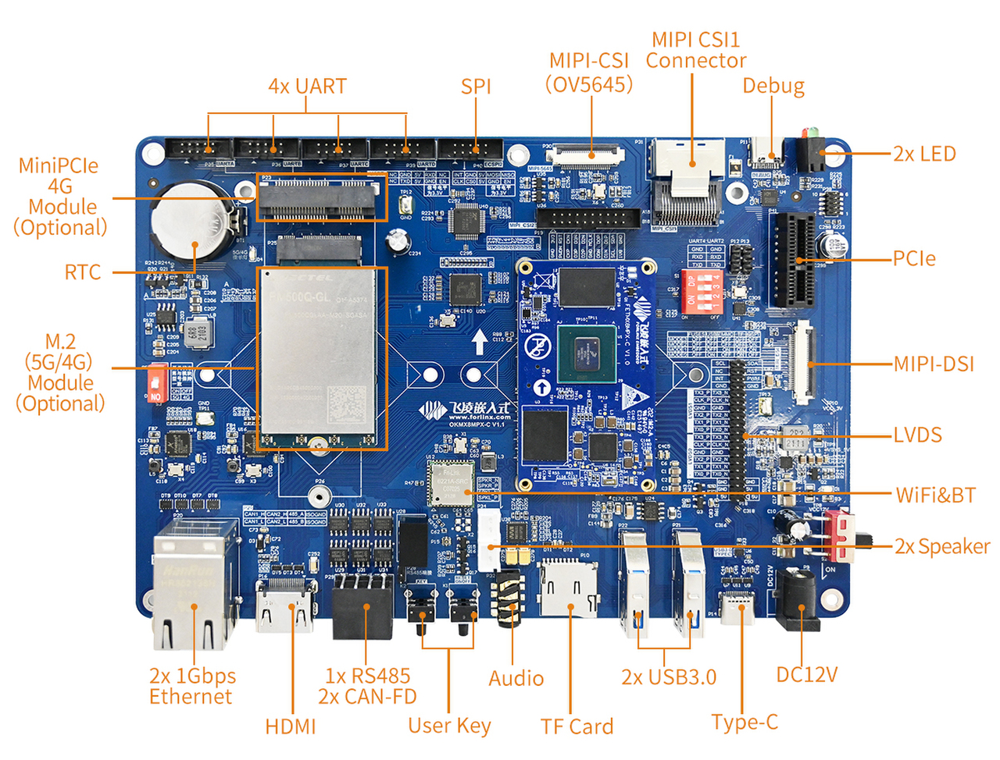</p>
<p><strong>Back</strong></p>
<p><strong>Note：</strong></p>
<p><strong>Hardware parameters are no longer described in this software manual. Before referring to this manual for software development, please read the “OK-MX8MPX-C Hardware Manual” to understand the product naming rules and the hardware configuration information of the product you are using, which will help you to use this product.</strong></p>
</section>
<section id="introduction-to-linux-6-1-36-system-software-resources">
<h3>1.2 Introduction to Linux 6.1.36 System Software Resources<a class="headerlink" href="#introduction-to-linux-6-1-36-system-software-resources" title="Link to this heading"></a></h3>
<table class="docutils align-default">
<thead>
<tr class="row-odd"><th class="head"><p><strong>Device</strong></p></th>
<th class="head"><p><strong>Location of driver source code in the kernel</strong></p></th>
<th class="head"><p><strong>Device Name</strong></p></th>
</tr>
</thead>
<tbody>
<tr class="row-even"><td><p>LCD Backlight Driver</p></td>
<td><p>drivers/video/backlight/pwm_bl.c</p></td>
<td><p>/sys/class/backlight</p></td>
</tr>
<tr class="row-odd"><td><p>USB Port</p></td>
<td><p>drivers/usb/storage/</p></td>
<td><p></p></td>
</tr>
<tr class="row-even"><td><p>USB Mouse</p></td>
<td><p>drivers/hid/usbhid/</p></td>
<td><p>/dev/input/mice</p></td>
</tr>
<tr class="row-odd"><td><p>Ethernet</p></td>
<td><p>drivers/net/ethernet/freescale/fec_main.c</p></td>
<td><p></p></td>
</tr>
<tr class="row-even"><td><p>SD/micro TF card driver</p></td>
<td><p>drivers/mmc/host/sdhci-esdhc-imx.c</p></td>
<td><p>/dev/block/mmcblk1pX</p></td>
</tr>
<tr class="row-odd"><td><p>EMMC Driver</p></td>
<td><p>drivers/mmc/host/sdhci-esdhc-imx.c</p></td>
<td><p>/dev/block/mmcblk2pX</p></td>
</tr>
<tr class="row-even"><td><p>OV5645</p></td>
<td><p>drivers/media/i2c/ov5645.c</p></td>
<td><p>/dev/videoX</p></td>
</tr>
<tr class="row-odd"><td><p>Lvds</p></td>
<td><p>drivers/gpu/drm/panel/panel-lvds.c</p></td>
<td><p></p></td>
</tr>
<tr class="row-even"><td><p>Basler-camera</p></td>
<td><p>extra_8mp/kernel-module-isp-vvcam/vvcam/v4l2/sensor/camera-proxy-driver/basler-camera-driver-vvcam/basler-camera-driver-vvcam.c</p></td>
<td><p></p></td>
</tr>
<tr class="row-odd"><td><p>MIPI DSI</p></td>
<td><p>drivers/gpu/drm/panel/panel-forlinx-mipi.c</p></td>
<td><p></p></td>
</tr>
<tr class="row-even"><td><p>RTC Real Time Clock Driver</p></td>
<td><p>drivers/rtc/rtc-rx8010.c</p></td>
<td><p>/dev/rtc0</p></td>
</tr>
<tr class="row-odd"><td><p>serial port</p></td>
<td><p>drivers/tty/serial/imx.c</p></td>
<td><p>/dev/ttymxcX</p></td>
</tr>
<tr class="row-even"><td><p>Key Driver</p></td>
<td><p>drivers/input/keyboard/gpio_keys.c</p></td>
<td><p>/dev/input/eventX</p></td>
</tr>
<tr class="row-odd"><td><p>LED</p></td>
<td><p>drivers/leds/leds-gpio.c</p></td>
<td><p></p></td>
</tr>
<tr class="row-even"><td><p>SAI</p></td>
<td><p>sound/soc/fsl/fsl_sai.c</p></td>
<td><p></p></td>
</tr>
<tr class="row-odd"><td><p>Audio Driver</p></td>
<td><p>sound/soc/codecs/wm8960.c</p></td>
<td><p>/dev/snd/</p></td>
</tr>
<tr class="row-even"><td><p>PMIC</p></td>
<td><p>drivers/regulator/pca9450-regulator.c</p></td>
<td><p></p></td>
</tr>
<tr class="row-odd"><td><p>PCIE</p></td>
<td><p>drivers/phy/freescale/phy-fsl-imx8m-pcie.c</p></td>
<td><p></p></td>
</tr>
<tr class="row-even"><td><p>QSPI</p></td>
<td><p>drivers/mtd/spi-nor/fsl-flexspi.c</p></td>
<td><p></p></td>
</tr>
<tr class="row-odd"><td><p>Watchdog</p></td>
<td><p>drivers/watchdog/imx2_wdt.c</p></td>
<td><p></p></td>
</tr>
<tr class="row-even"><td><p>SPI</p></td>
<td><p>drivers/spi/spi-imx.c</p></td>
<td><p></p></td>
</tr>
<tr class="row-odd"><td><p>PWM</p></td>
<td><p>drivers/pwm/pwm-imx.c</p></td>
<td><p></p></td>
</tr>
</tbody>
</table>
</section>
<section id="emmc-memory-partition-table">
<h3>1.3 EMMC Memory Partition Table<a class="headerlink" href="#emmc-memory-partition-table" title="Link to this heading"></a></h3>
<p>The following table is the eMMC memory partition information of Linux operating system:</p>
<table class="docutils align-default">
<thead>
<tr class="row-odd"><th class="head"><p>Partition Index</p></th>
<th class="head"><p>Name</p></th>
<th class="head"><p>Offset / block</p></th>
<th class="head"><p>Size/block</p></th>
<th class="head"><p>File system</p></th>
<th class="head"><p>Content</p></th>
</tr>
</thead>
<tbody>
<tr class="row-even"><td><p>1</p></td>
<td><p>boot</p></td>
<td><p>32K</p></td>
<td><p>120M</p></td>
<td><p>FAT32</p></td>
<td><p>image<br/>OK8MP-C.dtb</p></td>
</tr>
<tr class="row-odd"><td><p>2</p></td>
<td><p>rootfs</p></td>
<td><p>120M</p></td>
<td><p>14G+</p></td>
<td><p>EXT4</p></td>
<td><p>rootfs</p></td>
</tr>
</tbody>
</table>
</section>
<section id="flashing-and-boot-test">
<h3>1.4 Flashing and Boot Test<a class="headerlink" href="#flashing-and-boot-test" title="Link to this heading"></a></h3>
<p>The OK - MX8MPX - C supports OTG and TF card flashing. It also supports booting Uboot via eMMC, TF card, and QSPI Flash.<br />
The startup dial-up code is as follows:</p>
<table class="docutils align-default">
<thead>
<tr class="row-odd"><th class="head"><p><strong>BOOT</strong></p></th>
<th class="head"><p><strong>4</strong></p></th>
<th class="head"><p><strong>3</strong></p></th>
<th class="head"><p><strong>2</strong></p></th>
<th class="head"><p><strong>1</strong></p></th>
</tr>
</thead>
<tbody>
<tr class="row-even"><td><p>FUSES</p></td>
<td><p>OFF</p></td>
<td><p>OFF</p></td>
<td><p>OFF</p></td>
<td><p>OFF</p></td>
</tr>
<tr class="row-odd"><td><p>OTG</p></td>
<td><p>OFF</p></td>
<td><p>OFF</p></td>
<td><p>OFF</p></td>
<td><p>ON</p></td>
</tr>
<tr class="row-even"><td><p>eMMC</p></td>
<td><p>OFF</p></td>
<td><p>OFF</p></td>
<td><p>ON</p></td>
<td><p>OFF</p></td>
</tr>
<tr class="row-odd"><td><p>TF</p></td>
<td><p>OFF</p></td>
<td><p>OFF</p></td>
<td><p>ON</p></td>
<td><p>ON</p></td>
</tr>
<tr class="row-even"><td><p>QSPI</p></td>
<td><p>OFF</p></td>
<td><p>ON</p></td>
<td><p>ON</p></td>
<td><p>OFF</p></td>
</tr>
</tbody>
</table>
</section>
</section>
<section id="fast-startup">
<h2>2. Fast Startup<a class="headerlink" href="#fast-startup" title="Link to this heading"></a></h2>
<section id="preparation-before-startup">
<h3>2.1 Preparation Before Startup<a class="headerlink" href="#preparation-before-startup" title="Link to this heading"></a></h3>
<p>The OK-MX8MPX-C development board has two system login methods, serial and network login. Hardware preparation before system startup:</p>
<ul class="simple">
<li><p>12V3A DC power cable</p></li>
<li><p>Debugging serial cable (Serial Login)</p></li>
</ul>
<p>The debug serial port on the development board is a Type-C USB jack, so users can use a USB to Type-C cable to connect the development board to a PC and then check the board’s status.</p>
<ul class="simple">
<li><p>Network cable (for network login)</p></li>
<li><p>According to the development board interface to connect the screen (Based on display needs).</p></li>
</ul>
<p></p>
</section>
<section id="debugging-serial-driver-installation">
<h3>2.2 Debugging Serial Driver Installation<a class="headerlink" href="#debugging-serial-driver-installation" title="Link to this heading"></a></h3>
<p>The debugging serial port of the OK-MX8MPX-C - C platform uses a Type - C interface. There is an on - board USB to UART chip, so there’s no need to purchase a USB to serial port debugging tool. It is extremely simple and convenient to use.</p>
<p>To install the driver, please use the driver package CP210x _ VCP _ Windows _ XP _ Vista. Zip provided in the \ Linux \ Tools \ directory of the user profile.</p>
<p>Run CP210xVCPInstaller_x64.exe directly after unzipping is complete, to ensure the latest driver is installed, please click driver uninstall first, then driver install.</p>
</section>
<section id="serial-login">
<h3>2.3 Serial Login<a class="headerlink" href="#serial-login" title="Link to this heading"></a></h3>
<section id="serial-port-connection-settings">
<h4>2.3.1 Serial Port Connection Settings<a class="headerlink" href="#serial-port-connection-settings" title="Link to this heading"></a></h4>
<p><strong>Note:</strong></p>
<ul class="simple">
<li><p><strong>Serial port settings: baud rate 115200, data bit 8, stop bit 1, no parity bit, no flow control</strong>;</p></li>
<li><p><strong>Serial terminal login is the root user, and there is no need to enter the password to log in;</strong></p></li>
<li><p><strong>Software requirements: PC Windows system needs to install the super terminal software. Because the terminal software has many types, you can choose your familiar one.</strong></p></li>
</ul>
<p>In the following, we take the putty terminal software as an example to introduce the serial port login method:</p>
<p>Step 1: First, you need to confirm the serial port number of the device connected to the computer. The OK-MX8MPX-C will generate two serial port numbers. Among them, SERIAL-A is the Linux debugging serial port. Check the serial port number in the Device Manager, and the actual port number recognized by the computer shall prevail.</p>
<p></p>
<p>Step 2: Open and set up putty, then set the“ line according to the COM port of the computer used, baud rate 115200;</p>
<p>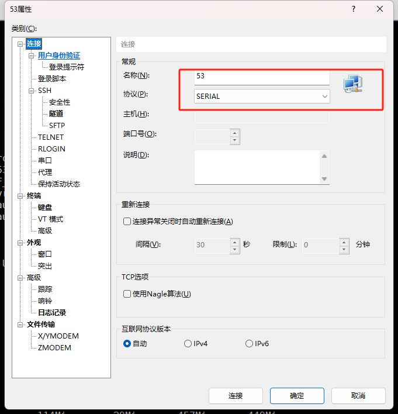</p>
<p>Step 3: After the setting, input the COM port used by the computer in Saved Sessions. The following figure takes COM3 as an example, save the settings, open the serial port again later, and click on the saved port number;</p>
<p>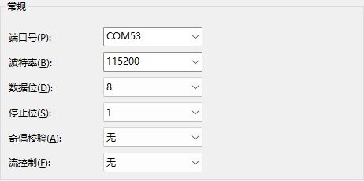</p>
<p>Step 4: Turn on the power switch of the development board, then there will be a print message output from the serial port (no need to login).</p>
<div class="highlight-plain notranslate"><div class="highlight"><pre><span></span>input-event-daemon: Adding device: /dev/input/event9... input-event-daemon: Start listening on 12 devices... 

done 

root@OK-MX8MPX-C:/# [   37.424104] vbus5v0_typec0: disabling [   37.424151] vbus5v0_typec1: disabling  root@OK-MX8MPX-C:/#
</pre></div>
</div>
</section>
<section id="serial-login-common-problems">
<h4>2.3.2 Serial Login Common Problems<a class="headerlink" href="#serial-login-common-problems" title="Link to this heading"></a></h4>
<p>Common problem troubleshooting points for logging in using the serial port are as follows:</p>
<p><strong>Case 1: No information is printed after connecting to the serial port:</strong></p>
<ol class="arabic simple">
<li><p>First, check whether the DIP switch is correct;</p></li>
<li><p>Re-open the serial port;</p></li>
<li><p>Change a serial port cable to test it;</p></li>
<li><p>If all of the above still does not work, check the status of the SoM’s LED, if it is not a heartbeat light or does not light up, suspect that the system does not start normally, you need to check the system startup, or rewrite it!</p></li>
</ol>
<p><strong>Case 2: Unable to input commands after connecting to the serial port:</strong></p>
<ol class="arabic simple">
<li><p>Re-open the serial port;</p></li>
<li><p>Replace the USB serial port cable with a new USB port on the computer, view the corresponding COM port in the device management, and reopen the serial port;</p></li>
<li><p>Replace a serial port cable.</p></li>
</ol>
<p><strong>Case 3: Device Manager does not recognize the port:</strong></p>
<ol class="arabic simple">
<li><p>Serial port driver is not installed. Try to install serial port driver.</p></li>
</ol>
</section>
</section>
<section id="network-login-methods">
<h3>2.4 Network Login Methods<a class="headerlink" href="#network-login-methods" title="Link to this heading"></a></h3>
<section id="network-connection-test">
<h4>2.4.1 Network Connection Test<a class="headerlink" href="#network-connection-test" title="Link to this heading"></a></h4>
<p><strong>Description:</strong></p>
<ul class="simple">
<li><p><strong>The factory default configuration of the card is static IP; the IP address is 192.168.0.232. Please refer to “Ethernet Configuration” chapter for the static IP changing method;</strong></p></li>
<li><p><strong>The computer and board should be on the same network segment for testing.</strong></p></li>
</ul>
<p>Before logging into the network, ensure that the direct network connection between the computer and the development board is functioning properly. You can test the connection status via pin command. The specific method is as follows:</p>
<p>1. Connect the development board’s eth0 interface to the computer using an Ethernet cable. Power on the board and boot the kernel. Confirm the blue heartbeat LED is blinking. Check the network card connection, ensuring its LED flashes rapidly. Once confirmed, proceed with testing the network connection;</p>
<p>2. Close the computer firewall (General computer operations, not described here in detail), then open the computer’s run command;</p>
<p>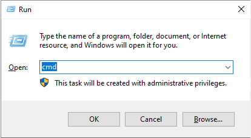</p>
<p>3. Use cmd to open the administrator interface , and the ping command to test the network connection status of the computer and the development board.</p>
<p>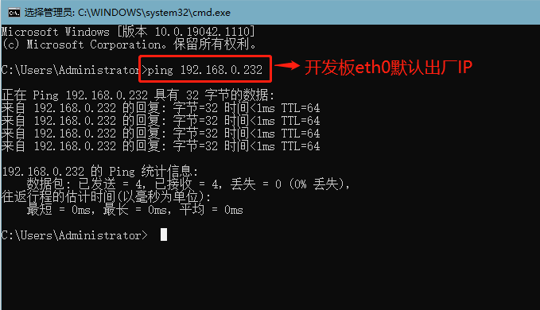</p>
<p>A data return indicates a normal network connection.</p>
</section>
<section id="ssh-server">
<h4>2.4.2 SSH Server<a class="headerlink" href="#ssh-server" title="Link to this heading"></a></h4>
<p><strong>Description:</strong></p>
<ul class="simple">
<li><p><strong>Default factory account root for SSH login with no password;</strong></p></li>
<li><p><strong>File transfers can be performed with SCP or SFTP.</strong></p></li>
</ul>
<p>1. Log in to the development board with SSH, insert the network cable into the carrier board network port, and obtain the IP;</p>
<div class="highlight-plain notranslate"><div class="highlight"><pre><span></span>root@OK-MX8MPX-C:~# ifconfig eth1 
eth1: flags=4163&lt;UP,BROADCAST,RUNNING,MULTICAST&gt;  mtu 1500
        inet 192.168.1.3  netmask 255.255.255.0  broadcast 192.168.1.255
        inet6 fe80::acae:f7ff:fe61:201f  prefixlen 64  scopeid 0x20&lt;link&gt;
        ether ae:ae:f7:61:20:1f  txqueuelen 1000  (Ethernet)
        RX packets 10115  bytes 1090141 (1.0 MiB)
        RX errors 0  dropped 0  overruns 0  frame 0
        TX packets 10023  bytes 1090141 (1.0 MiB)
        TX errors 0  dropped 0 overruns 0  carrier 0  collisions 0
root@OK-MX8MPX-C:~# 
</pre></div>
</div>
<p>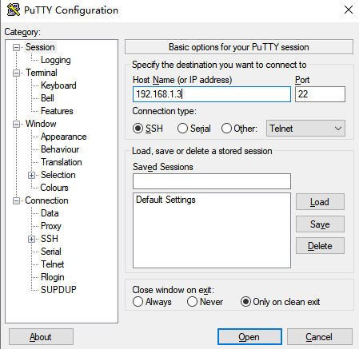</p>
<p>2. Click “Open”, the following dialog box will appear, click “Accept” to enter the login interface.</p>
<p>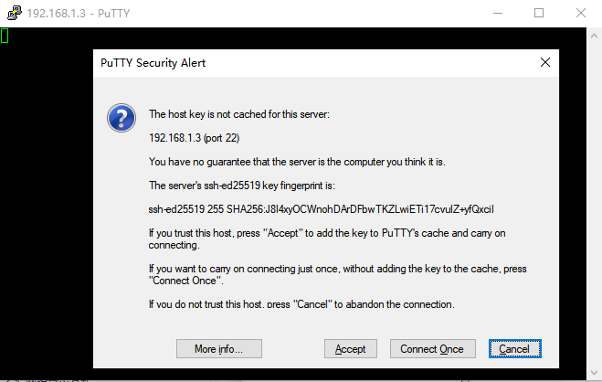</p>
<div class="highlight-plain notranslate"><div class="highlight"><pre><span></span>Login as：root //No password required for root login                      
root@OK-MX8MPX-C:~# 
</pre></div>
</div>
</section>
<section id="sftp">
<h4>2.4.3 SFTP<a class="headerlink" href="#sftp" title="Link to this heading"></a></h4>
<p>Path: OK-MX8MPX-C-C (Linux) user profile\tool\FileZilla*</p>
<p>The OK-MX8MPX-C development board supports SFTP service and it is automatically enabled at startup, so it can be used as an SFTP server after setting the IP address. The following describes how to utilize the FTP tool for file transfer.</p>
<p>Install the FileZilla tool on Windows and follow the steps shown in the image below to configure it. Use “forlinx” as both the username and password.</p>
<p>Open the FileZilla tool, click on File and select Site Manager.</p>
<p>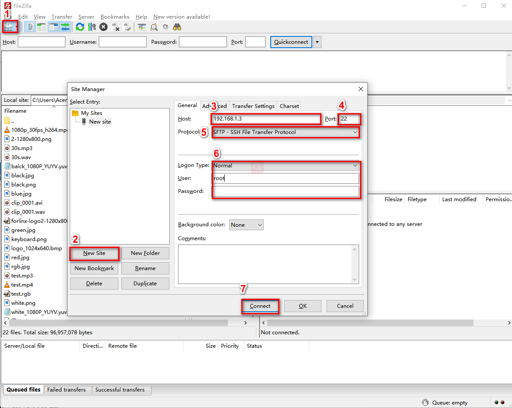</p>
<p>After successful login, you can upload and download.</p>
</section>
</section>
<section id="screen-switching">
<h3>2.5 Screen Switching<a class="headerlink" href="#screen-switching" title="Link to this heading"></a></h3>
<p>The OK-MX8MPX-C supports multiple screen interfaces such as MIPI DSI, HDMI, and LVDS, and can display different content on three screens simultaneously. Currently, there are three ways to control screen switching: dynamic control through the U-Boot menu; specification in the kernel device tree; and switching control via the Weston service in the system.</p>
<p>The OK-MX8MPX-C has three display controllers, namely MIPI DSI, HDMI, and LVDS, and supports a maximum of three screens to display simultaneously.</p>
<section id="dynamic-control-of-uboot-menu">
<h4>2.5.1 Dynamic Control of Uboot Menu<a class="headerlink" href="#dynamic-control-of-uboot-menu" title="Link to this heading"></a></h4>
<section id="display-type-setting">
<h5><strong>2.5.1.1 Display Type Setting</strong><a class="headerlink" href="#display-type-setting" title="Link to this heading"></a></h5>
<p>This method switches screens without recompiling and flashing in existing supported screens.</p>
<p>During the uboot self-boot process, press the space bar at the serial terminal to bring up the control options:</p>
<div class="highlight-plain notranslate"><div class="highlight"><pre><span></span>Hit key to stop autoboot(&#39;Spacebar&#39;):  

1: shell 
2: boot linux 
3: Display select 

0: reboot uboot
</pre></div>
</div>
<p>Enter 3 at the terminal to access the Screen Control sub-menu:</p>
<div class="highlight-plain notranslate"><div class="highlight"><pre><span></span>1: mipi is on 
2: lvds is on 
3: hdmi is on 

0: return 
</pre></div>
</div>
<p>Set the screen to use or close according to the options in the menu.</p>
</section>
</section>
<section id="kernel-device-tree-specification">
<h4>2.5.2 Kernel Device Tree Specification<a class="headerlink" href="#kernel-device-tree-specification" title="Link to this heading"></a></h4>
<p>This method does not require the connection of a serial terminal, and the system image defaults to the desired configuration selection, which is suitable for mass production. However, we need to manually modify the device tree and regenerate the system image once again</p>
<p><strong>Note: This method has higher priority than the uboot screen selection, and the uboot selection will not take effect after the device tree is modified.</strong></p>
<p>Device tree path: OK-MX8-linux-kernel/arch/arm64/boot/dts/freescale/OK8MP-C.dts</p>
<p>In the kernel source code, open the device dtsi file and find the following node:</p>
<p>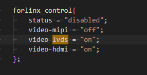</p>
<p>The node has a default disabled state and needs to be changed to an okay enabled node. Change according to screen requirements.</p>
<p><strong>Note: When modifying the device tree, you need to follow the annotation rules to avoid using conflicts. The driver does not detect whether the forlinx-control configuration conforms to the rules. An error in the setting will cause abnormal display.</strong></p>
<p><strong>For the display interface set to “OFF”, blocking, deleting, or retaining is possible.</strong></p>
</section>
</section>
<section id="system-partition">
<h3>2.6 System Partition<a class="headerlink" href="#system-partition" title="Link to this heading"></a></h3>
<section id="emmc-memory">
<h4>2.6.1 EMMC Memory<a class="headerlink" href="#emmc-memory" title="Link to this heading"></a></h4>
<p>The following table shows the EMMC memory partition information for the OK-MX8MPX-C-C platform:</p>
<table class="docutils align-default">
<thead>
<tr class="row-odd"><th class="head"><p>Partition Index</p></th>
<th class="head"><p>Name</p></th>
<th class="head"><p>Offset / block</p></th>
<th class="head"><p>Size/block</p></th>
<th class="head"><p>File system</p></th>
<th class="head"><p>Content</p></th>
</tr>
</thead>
<tbody>
<tr class="row-even"><td><p>1</p></td>
<td><p>boot</p></td>
<td><p>32K</p></td>
<td><p>120M</p></td>
<td><p>FAT32</p></td>
<td><p>image OK8MP-C.dtb</p></td>
</tr>
<tr class="row-odd"><td><p>2</p></td>
<td><p>rootfs</p></td>
<td><p>120M</p></td>
<td><p>14G+</p></td>
<td><p>EXT4</p></td>
<td><p>rootfs</p></td>
</tr>
</tbody>
</table>
<p>Use the df command to view the disk usage on the system. The following figure shows the factory default disk partition usage:</p>
<div class="highlight-plain notranslate"><div class="highlight"><pre><span></span>root@OK-MX8MPX-C:~# df -Th 
Filesystem   type   Size  Used Avail Use% Mounted on
/dev/root  ext4   6.7G  5.4G  919M   86% /
devtmpfs  devtmpfs  182M  4.0K  183M  1% /dev
tmpfs     tmpfs  170M  10M  160M  6% /run
tmpfs     tmpfs  4.0M   0  4.0M   1% /sys/fs/cgroup
tmpfs     tmpfs  424M  108K  424M  1% /tmp
tmpfs     tmpfs  424M  228K  424M  1% /var/volatile
/dev/mmcblk2p1  vfat   120M  31M  89M  26% /run/media/Boot-mmcblk2p1
tmpfs     tmpfs  85M  8.0K  85M   1% /run/user/0
root@OK-MX8MPX-C:~# 

</pre></div>
</div>
</section>
<section id="ddr-memory">
<h4>2.6.2 DDR Memory<a class="headerlink" href="#ddr-memory" title="Link to this heading"></a></h4>
<p>Use the free command to view the system memory usage. The following figure shows the factory default memory usage (1 + 8 version):</p>
<div class="highlight-plain notranslate"><div class="highlight"><pre><span></span>root@OK-MX8MPX-C:~# free -m
              total        used        free      shared  buff/cache   available
Mem:           847        405        116        24        441        441
Swap:          0        0        0
root@OK-MX8MPX-C:~# 
</pre></div>
</div>
</section>
</section>
<section id="system-shutdown">
<h3>2.7 System Shutdown<a class="headerlink" href="#system-shutdown" title="Link to this heading"></a></h3>
<p>In general, the power can be turned off directly. If there is data storage, function use, or other operations, avoid turning off the power arbitrarily during operation to prevent irreversible damage to the file. In such cases, only re-flashing the firmware can resolve the issue. To ensure that data is not completely written, enter the sync command to complete data synchronization before turning off the power.</p>
<p>Note: For products designed based on the SoM, if there are scenarios where accidental power loss causes the system to shut down unexpectedly, measures such as adding power-loss protection can be incorporated into the design.</p>
</section>
</section>
<section id="desktop-function-test">
<h2>3. Desktop Function Test<a class="headerlink" href="#desktop-function-test" title="Link to this heading"></a></h2>
<p><strong>Note:</strong></p>
<ul class="simple">
<li><p><strong>Users should follow this section when using the screen with the QT file system, but can skip it for non-QT operations;</strong></p></li>
<li><p><strong>This chapter details QT functions. With the default device and driver working normally, it’s advisable to test interface functions after command line tests;</strong></p></li>
<li><p><strong>QT test program source code path: appsrc/forlinx-qt/;</strong></p></li>
<li><p><strong>Path to the test program in the development board file system: /usr/bin/fltest_qt_*.</strong></p></li>
</ul>
<p>OK-MX8MPX-C platform has excellent support for Qt, especially for multimedia-related classes, such as video decoding and playback, camera, video recording, etc. can all be combined with hardware codecs and OpenGL to achieve the best results.</p>
<p>This chapter mainly explains the usage of the expansion interfaces on the development board in QT interface. The testing program is only for reference, and users need to make adjustments based on their actual situations when using it.</p>
<section id="introduction-to-interface-function">
<h3>3.1 Introduction to Interface Function<a class="headerlink" href="#introduction-to-interface-function" title="Link to this heading"></a></h3>
<p>The desktop is displayed as follows after the board booting:</p>
<p>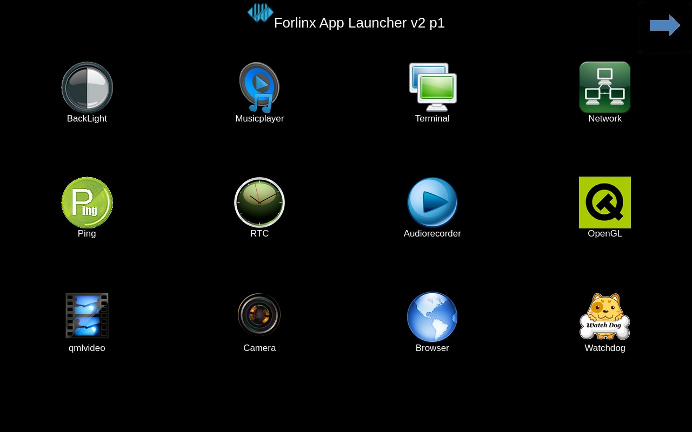</p>
<p>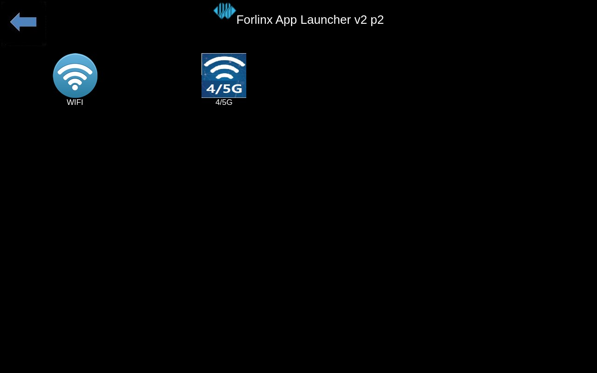</p>
<p><strong>Note: Icon order may vary.</strong></p>
</section>
<section id="network-configuration-test">
<h3>3.2 Network Configuration Test<a class="headerlink" href="#network-configuration-test" title="Link to this heading"></a></h3>
<p><strong>Description:</strong></p>
<ul class="simple">
<li><p><strong>By default, only the eth0 network interface (GBE1 port on the carrier board) is set to STATIC mode;</strong></p></li>
<li><p><strong>The set IP and other information will be saved to the relevant configuration file (/etc/systemd/network directory) of the system, so the network information set this time will be used every time the system is restarted.</strong></p></li>
</ul>
<p>Icon：</p>
<p></p>
<p>Clicking on the network configuration icon will open a interface program that supports two modes: STATIC and DHCP.</p>
<section id="static-mode">
<h4>3.2.1 STATIC Mode<a class="headerlink" href="#static-mode" title="Link to this heading"></a></h4>
<p>After clicking on the network configuration icon, select the STATIC mode as shown in the figure. You can then configure the IP address, subnet mask, gateway, and DNS settings. Once you have set the parameters, click on “Apply and Restart Network”.</p>
<table class="docutils align-default">
<thead>
<tr class="row-odd"><th class="head"><p>Options</p></th>
<th class="head"><p>Description</p></th>
</tr>
</thead>
<tbody>
<tr class="row-even"><td><p>interface</p></td>
<td><p>Select the network card device to be configured</p></td>
</tr>
<tr class="row-odd"><td><p>ip</p></td>
<td><p>Input the IP address</p></td>
</tr>
<tr class="row-even"><td><p>netmask</p></td>
<td><p>Input Subnet mask:</p></td>
</tr>
<tr class="row-odd"><td><p>gateway</p></td>
<td><p>Input Gateway:</p></td>
</tr>
<tr class="row-even"><td><p>dns</p></td>
<td><p>Input the DNS address</p></td>
</tr>
<tr class="row-odd"><td><p>Apply and Restart Network</p></td>
<td><p>Apply and restart the network</p></td>
</tr>
</tbody>
</table>
<p>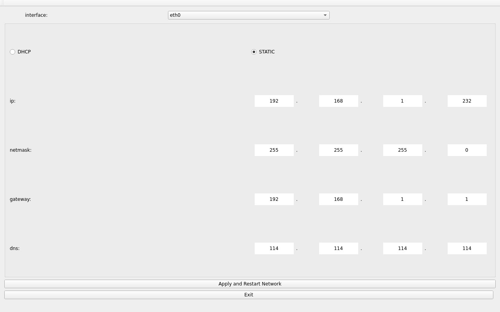</p>
</section>
<section id="dhcp-mode">
<h4>3.2.2 DHCP Mode<a class="headerlink" href="#dhcp-mode" title="Link to this heading"></a></h4>
<p>Check DHCP, select the NIC device needing to be configured, and click “Apply and Restart Network” at the bottom of the interface to restart the network and get the ip automatically.</p>
<p>Note: The test must be performed on a router that can automatically assign IP.</p>
<p>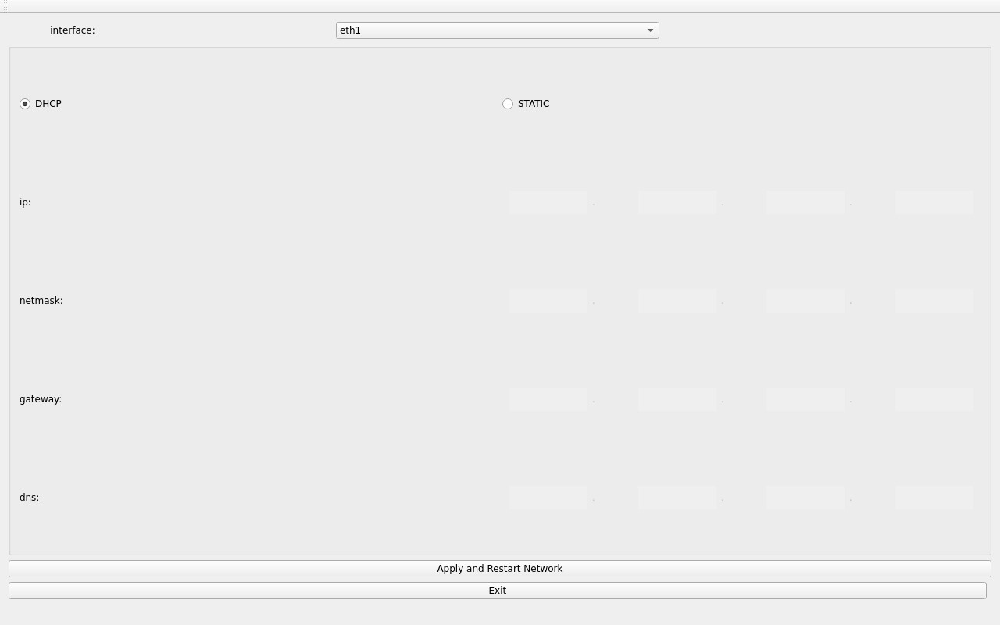</p>
<p>Restart the development board, and you can see that the network configuration is in effect.</p>
</section>
</section>
<section id="opengl-test">
<h3>3.3 OpenGL Test<a class="headerlink" href="#opengl-test" title="Link to this heading"></a></h3>
<p>OK-MX8MPX-C supports OpenGL ES3.2, click the desktop icon for OpenGL test.</p>
<p>Icon：</p>
<p></p>
<p>OK-MX8MPX-C supports EGL 1.5，OpenGL ES2.0.<br />
Click the icon to enter the OpenGL test interface.</p>
<p>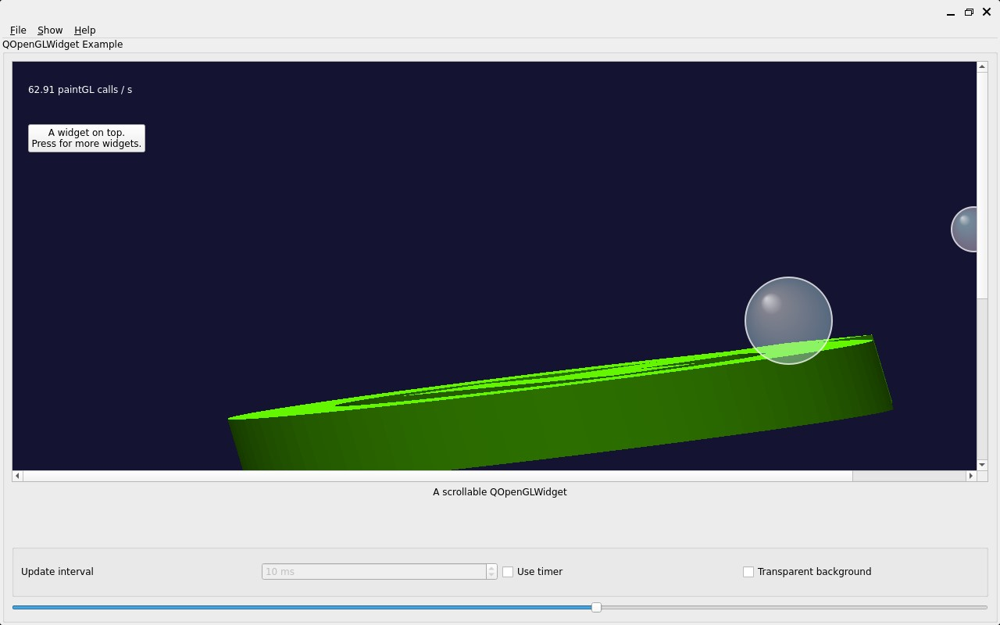</p>
</section>
<section id="g-5g-test">
<h3>3.4 4G/5G Test<a class="headerlink" href="#g-5g-test" title="Link to this heading"></a></h3>
<p>Icon：</p>
<p></p>
<p>The 4G test procedure is used to test the OK-MX8MPX-C external 4G module (EM05-CE) and 5G module (RM500Q-GL). Before the test, please power off the development board, connect the module, insert the SIM card (pay attention to the direction of the SIM card), toggle the switch (S3) to select the 4G, 5G mode, and start the development board to open the test application. This test takes 4G as an example:</p>
<p>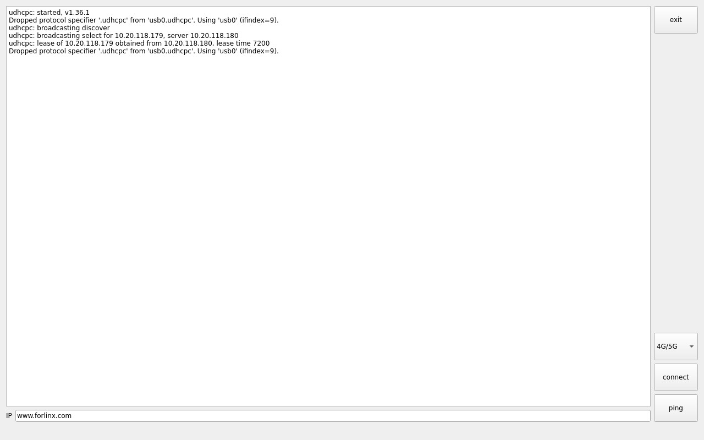</p>
<p>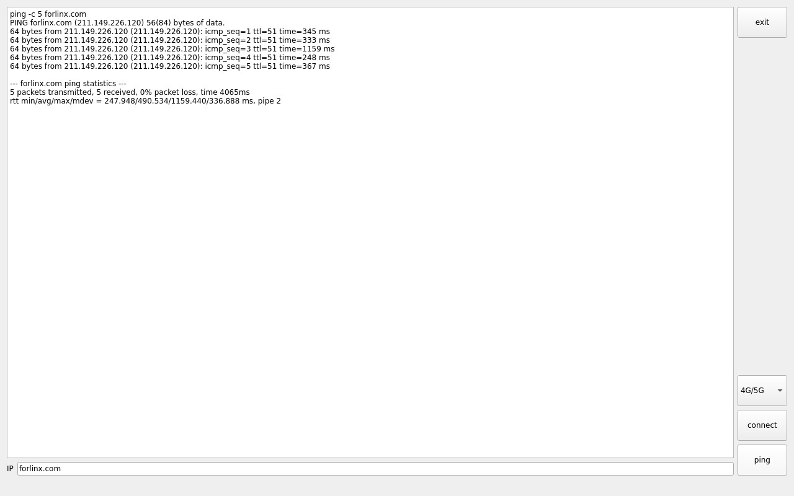</p>
<p>Click the CONNECT button then the program will automatically enter the dialing process and get the IP to set the DNS, etc. After waiting patiently for a few seconds, click the ping button to test it.</p>
</section>
<section id="uart-test">
<h3>3.5 UART Test<a class="headerlink" href="#uart-test" title="Link to this heading"></a></h3>
<p>Icon：</p>
<p></p>
<ol class="arabic simple">
<li><p>Click the UART test icon to enter the test application interface, click the gear icon setting button in the upper left corner, and set the serial port parameters as shown in the figure below:</p></li>
</ol>
<table class="docutils align-default">
<thead>
<tr class="row-odd"><th class="head"><p>Options</p></th>
<th class="head"><p>Description</p></th>
</tr>
</thead>
<tbody>
<tr class="row-even"><td><p>Select Serial Port</p></td>
<td><p>Select the serial port to use</p></td>
</tr>
<tr class="row-odd"><td><p>Baudrate</p></td>
<td><p>Select the serial port baud rate</p></td>
</tr>
<tr class="row-even"><td><p>Data bits</p></td>
<td><p>Select data bit</p></td>
</tr>
<tr class="row-odd"><td><p>Parity</p></td>
<td><p>Select parity bit</p></td>
</tr>
<tr class="row-even"><td><p>Stop bits</p></td>
<td><p>Select stop bit</p></td>
</tr>
<tr class="row-odd"><td><p>Flow control</p></td>
<td><p>Select flow control</p></td>
</tr>
<tr class="row-even"><td><p>Apply</p></td>
<td><p>Application Settings:</p></td>
</tr>
</tbody>
</table>
<p>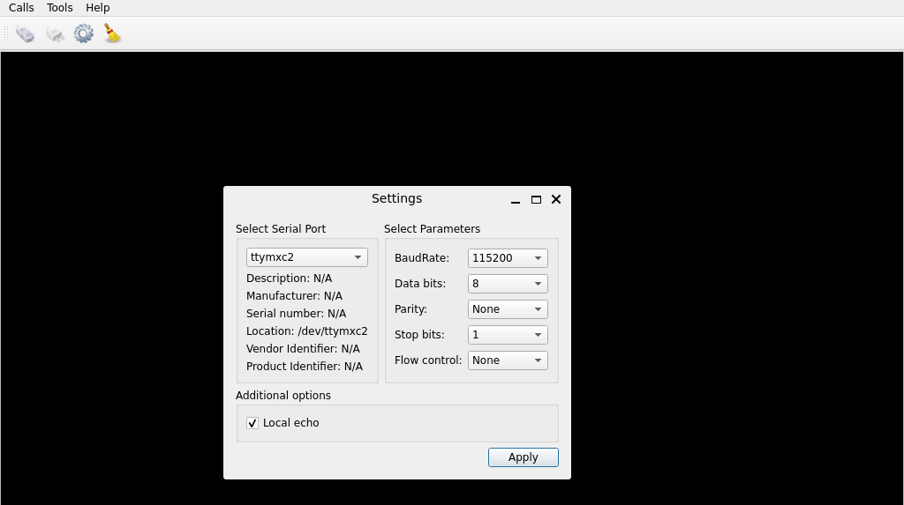</p>
<ol class="arabic simple" start="2">
<li><p>After setting the serial port parameters, click the connect button in the upper left corner, then the program can conduct data sending and receiving tests;</p></li>
<li><p>Run the serial port send test command in the terminal. The received data will be displayed on the screen;</p></li>
</ol>
<div class="highlight-plain notranslate"><div class="highlight"><pre><span></span>root@OK-MX8MPX-C:~# fltest_uarttest -d /dev/ttymxc2  -w		tx_0: XEiNKcpIXrzQF4t9PqirDCTqWKgLnKoK									 
</pre></div>
</div>
<p>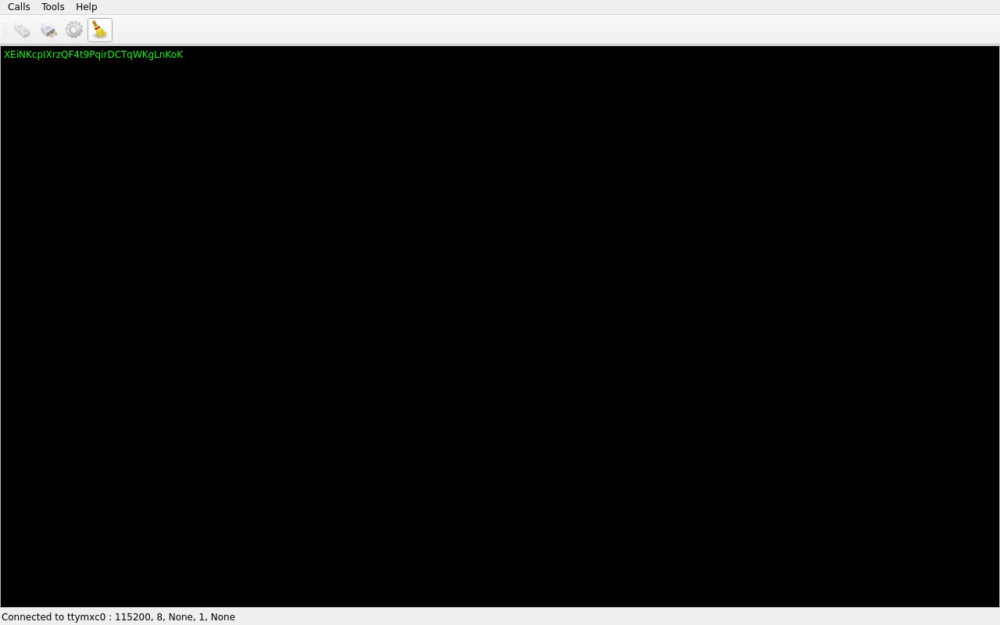</p>
<ol class="arabic simple" start="4">
<li><p>Run the serial port receive test command in the terminal. When you click the test interface, a virtual keyboard will appear. After entering 32 consecutive characters, the terminal will print the data sent by QT.</p></li>
</ol>
<div class="highlight-plain notranslate"><div class="highlight"><pre><span></span>root@OK-MX8MPX-C:~# fltest_uarttest -d /dev/ttymxc2  -r		rx_0: 12345678901234567890123456789012									 
</pre></div>
</div>
<p>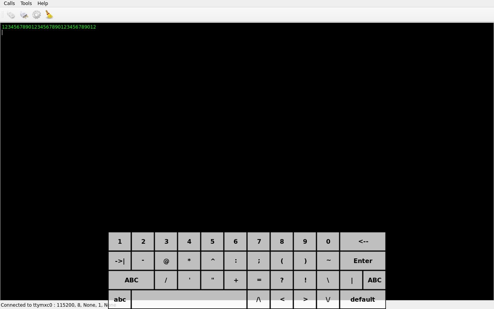</p>
<p><strong>Note: The data input by the soft keyboard will not be displayed on the test interface until the Enter key is pressed.</strong></p>
</section>
<section id="wifi-test">
<h3>3.6 WIFI Test<a class="headerlink" href="#wifi-test" title="Link to this heading"></a></h3>
<p><strong>Description:</strong></p>
<ul class="simple">
<li><p><strong>The OK - MX8MPX - C SoM is soldered with an AW - CM276NF WiFi chip, and its operating frequency supports 2.4 GHz/5 GHz.</strong></p></li>
</ul>
<p></p>
<ol class="arabic simple">
<li><p>Click the WIFI test icon to enter the test application interface. Select the corresponding module from the drop - down menu. Enter the name of the router you need to connect to via WiFi in the SSID field, and enter the router password in the PAWD field. Then click “connect” to connect to the router via WiFi;</p></li>
</ol>
<p>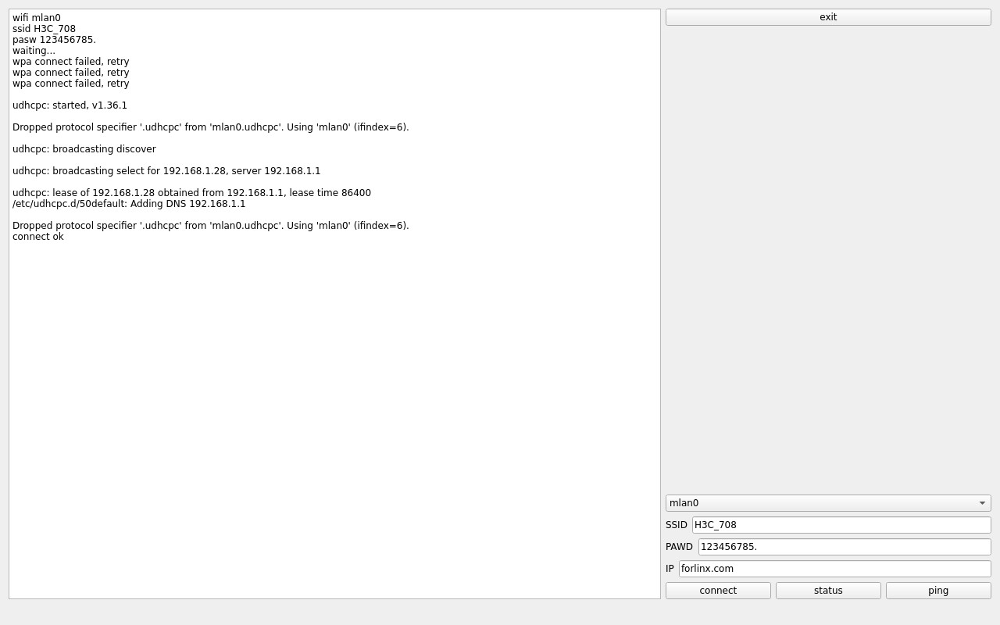</p>
<ol class="arabic simple" start="2">
<li><p>After a successful connection, click the ping button to check if the currently used WiFi network is working properly;</p></li>
</ol>
<p>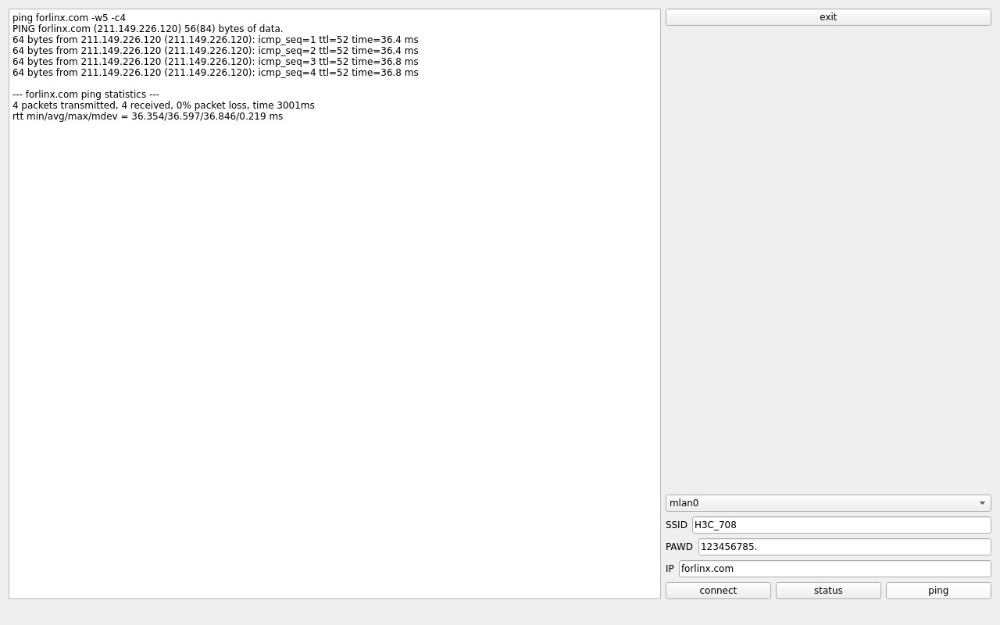</p>
</section>
<section id="rtc-test">
<h3>3.7 RTC Test<a class="headerlink" href="#rtc-test" title="Link to this heading"></a></h3>
<p><strong>Note: Ensure that button cell batteries are installed on the board and the battery voltage is normal Icon：</strong></p>
<p></p>
<p>RTC test includes setting time, power cycling, rerunning test software, and verifying RTC sync.<br />
Run the RTC test software to view and set the current system time with the following interface:</p>
<p>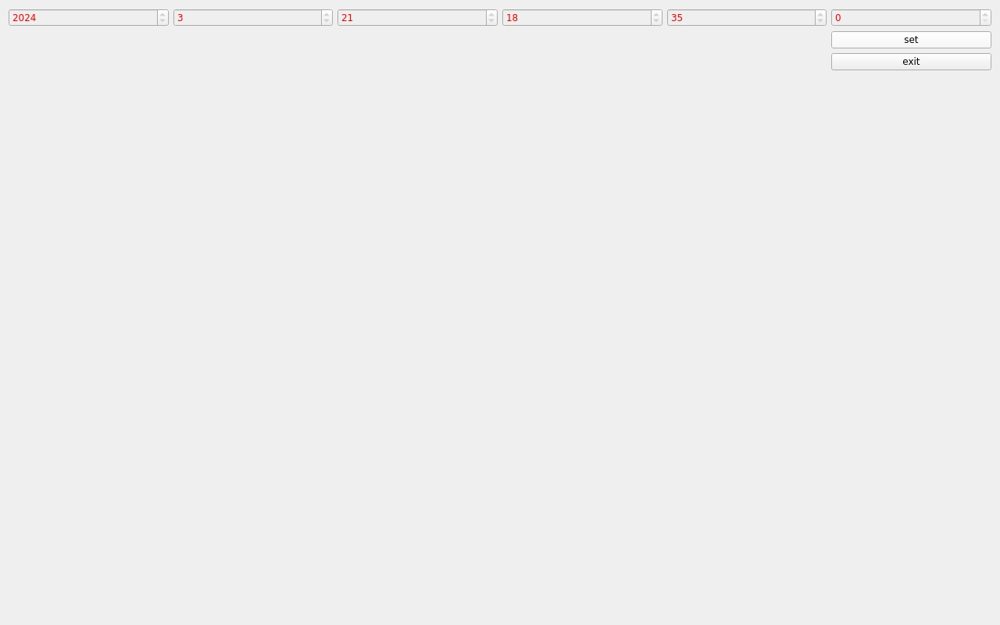</p>
<p>Click “set” to adjust the time settings, then click “save” to finish the settings. After powering off and waiting, reboot and rerun the RTC test software to synchronize and confirm the RTC test is normal.</p>
</section>
<section id="watchdog-test">
<h3>3.8 Watchdog Test<a class="headerlink" href="#watchdog-test" title="Link to this heading"></a></h3>
<p>Icon：</p>
<p></p>
<p>“WatchDog” tests the functionality of the watchdog feature. Interface as follows:</p>
<p>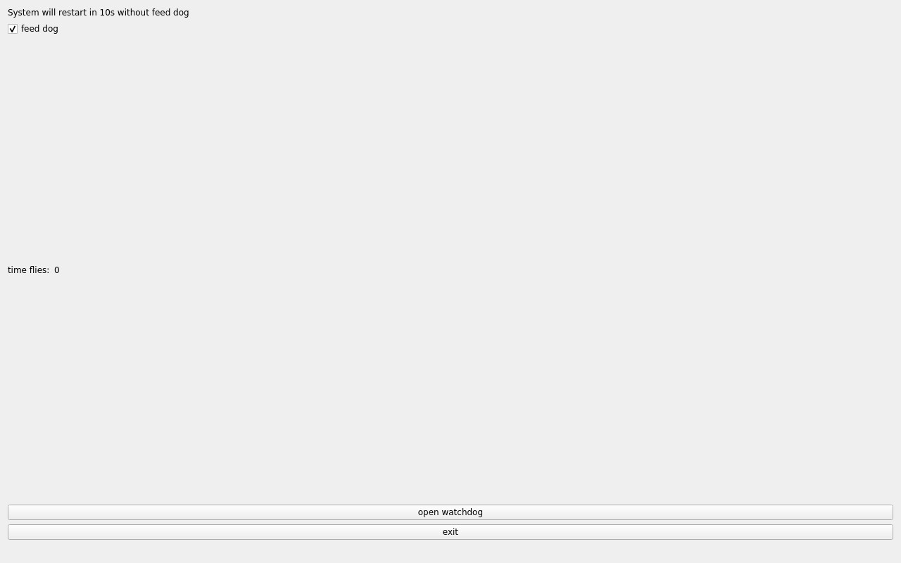</p>
<p>Check feed dog and click the open watchdog key, then the watchdog will be activated, the program will carry out the feeding operation, and the system will not reboot under normal circumstances; when unchecking feed dog and clicking open watchdog key, the watchdog function will be activated, the program will not carry out the feeding operation, and the system enters into a reboot after the watchdog is activated for about 10s, which indicates that the watchdog function is normal.</p>
</section>
<section id="ping-test">
<h3>3.9 Ping Test<a class="headerlink" href="#ping-test" title="Link to this heading"></a></h3>
<p>Icon：</p>
<p></p>
<p>“Ping” is a graphical tool for network testing, offering a user-friendly interface for ping operations.</p>
<p>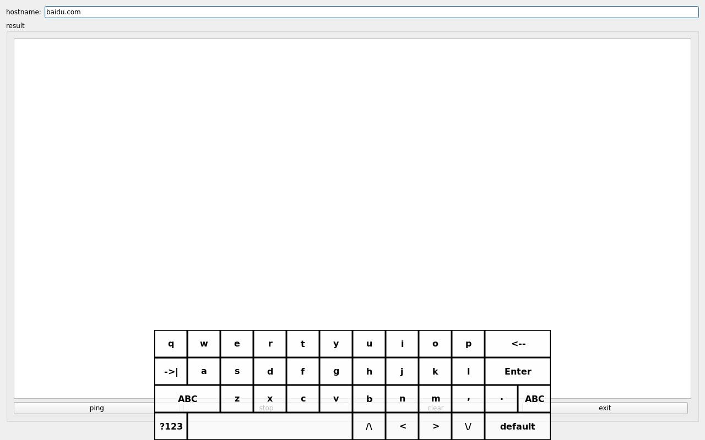</p>
<p>Write the target ip needing ping in the hostname field;  after clicking the ping button, the RESULT column will indicate the result, click stop to end the ping test and clear to clean the information in the result.<br />
As shown in the figure, the network connection is smooth.</p>
<p>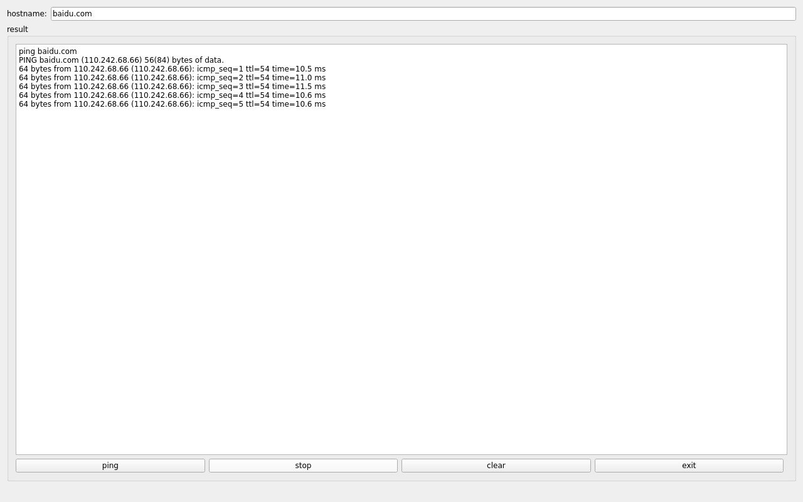</p>
</section>
<section id="camera-test">
<h3>3.10 Camera Test<a class="headerlink" href="#camera-test" title="Link to this heading"></a></h3>
<p>Icon：</p>
<p></p>
<p>Click the icon to enter the camera test program and insert the USB camera.<br />
Note: If the CSI ov5645 camera is used, please disconnect the power and plug it; the current test program does not support basler _ camera.</p>
<p>Choose the camera video device node;</p>
<p>Set the camera resolution;</p>
<p>Click “Start” to capture video;</p>
<p>Click “Stop” to end capture;</p>
<p>Click “Picture” to take a photo;</p>
<p>Save the photo with a name and at a chosen path.<br />
Take the Logitech UVC camera as an example to conduct the camera test.</p>
<p>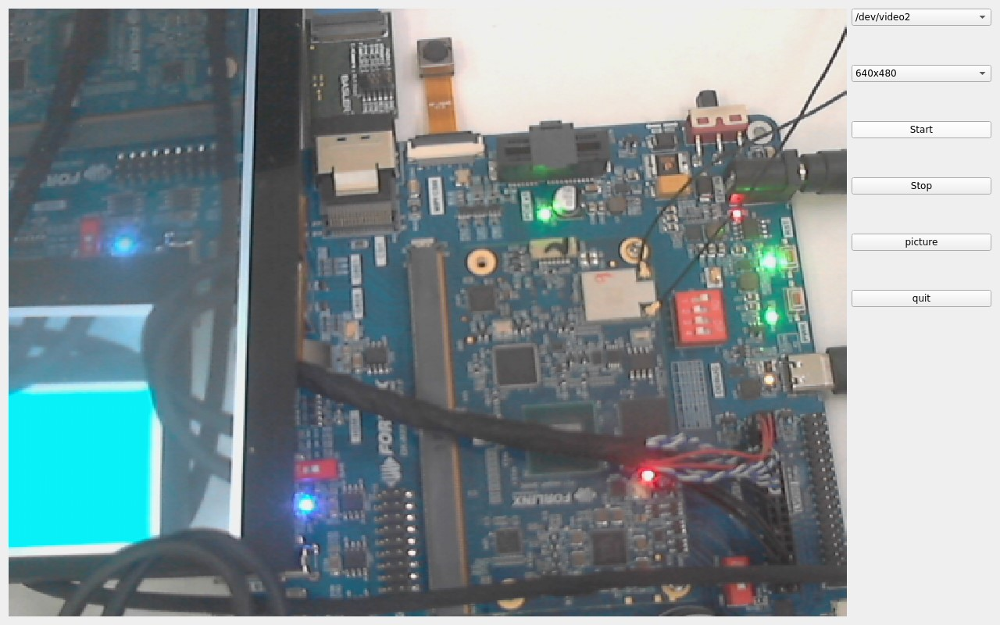</p>
<p>After Start, click the picture button to take a picture, the file save directory is /home/root/, and the format is jpg, please select the appropriate tool on Windows to view.</p>
</section>
<section id="backlight-test">
<h3>3.11 Backlight Test<a class="headerlink" href="#backlight-test" title="Link to this heading"></a></h3>
<p>Icon：</p>
<p></p>
<p>“BackLight” is a backlight adjustment application. You can adjust the backlight brightness by dragging the progress bar left or right. Here, “dsi” is used to set the brightness of the MIPI - DSI screen, and “lvds” is for setting the brightness of the LVDS screen. After clicking to open it, the interface is as follows:</p>
<p>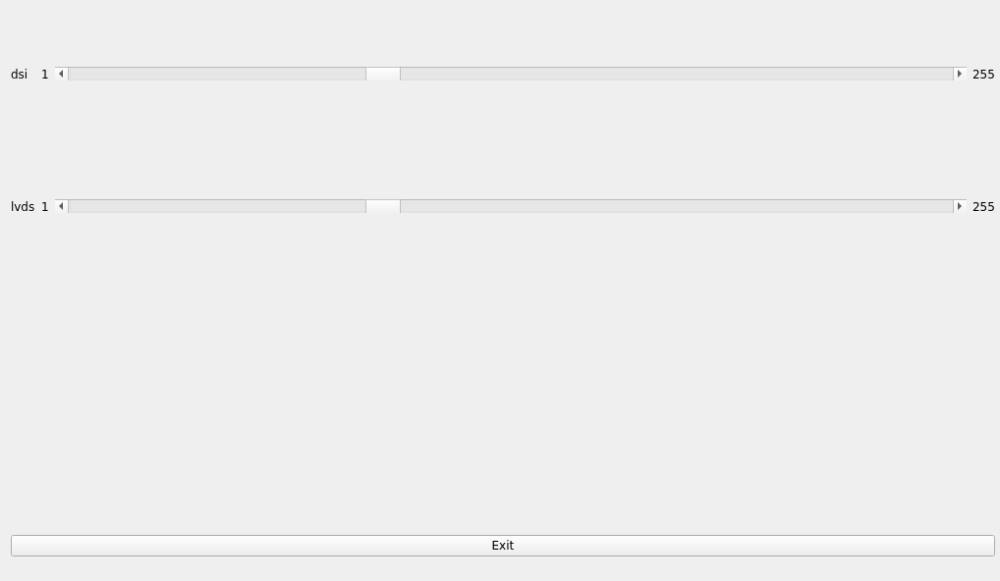</p>
<p>You can set the backlight brightness of the corresponding screen by dragging the slider for that screen on the interface. Level 1 represents the lowest brightness, and 255 represents the highest brightness. Forlinx has made restrictions on this application. It is not allowed to use the QT application to completely turn off the backlight. If you want to completely turn off the backlight, please use the command line program or modify the QT test routine.</p>
</section>
<section id="play-record-test">
<h3>3.12 Play/Record Test<a class="headerlink" href="#play-record-test" title="Link to this heading"></a></h3>
<p>Icon：</p>
<p></p>
<p>Before the recording test, please insert the prepared microphone or earphone with microphone into the 3.5mm interface, and click the icon to enter the recording test application, which can be used to test whether the recording function of the sound card is normal.<br />
Select the location to save the recording file, press the “Start” button to start recording, press the “Stop” button to stop recording, click the Audio Codec radio box to select “Wave”, click the FILE Container radio box to select “Wave File”, click the Channels radio box to select 2, and the interface is as follows:</p>
<p>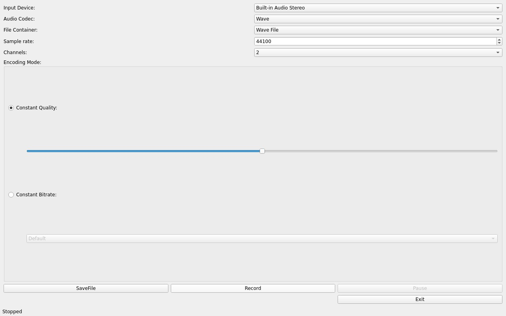</p>
<p>Click the Record button to test the recording. The recording file is saved to the/tmp/record _ *.wav file in the root directory.</p>
</section>
<section id="music-playback-test">
<h3>3.13 Music Playback Test<a class="headerlink" href="#music-playback-test" title="Link to this heading"></a></h3>
<p>Icon：</p>
<p></p>
<p>“music player” is a simple audio test application that can be used to test the function of the sound card or as a simple audio player. To switch the default playback device before use, click to select the fourth item; open the playback file, click the button in the lower left corner, select test audio/home/forlinx/audio/30s.mp3, and click to play after loading.</p>
<p>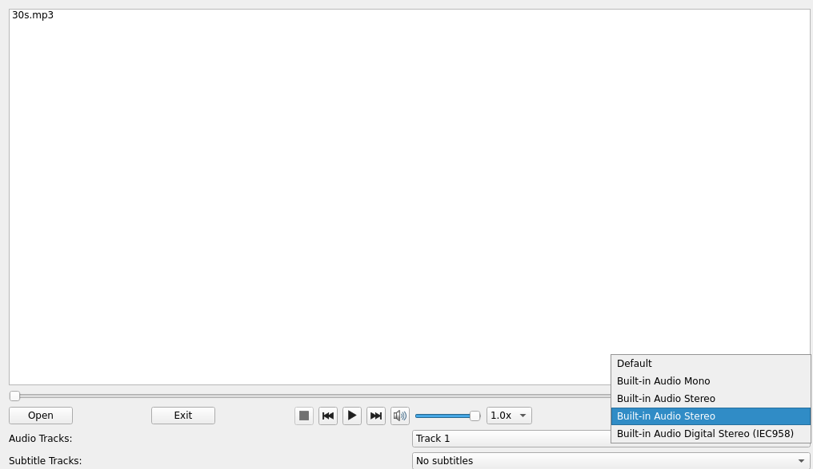</p>
</section>
<section id="qml-video-playback-test">
<h3>3.14 Qml Video Playback Test<a class="headerlink" href="#qml-video-playback-test" title="Link to this heading"></a></h3>
<p>Icon：</p>
<p></p>
<p>Qml Video supports video playback in H264 and H265 formats, with a maximum of 1080p 60fps.<br />
The qml video test program can play video based on qml. Click the icon to enter the test program interface.</p>
<p>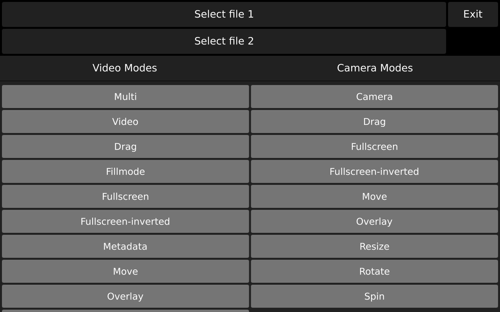</p>
<p>Click Select File 1 at the top to select the video file. The path of the test video file is shown in the following figure:</p>
<p>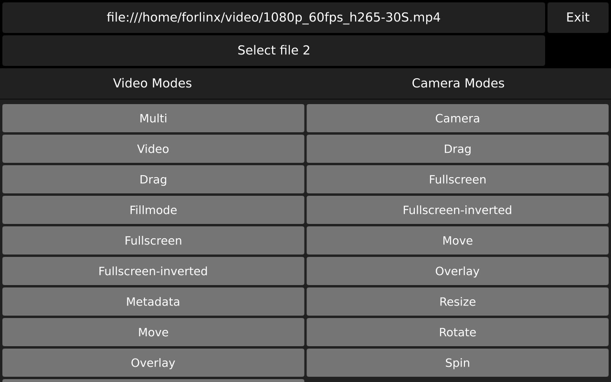</p>
<p>Click Full Screen-inverted to start playing the video in full screen.</p>
<p>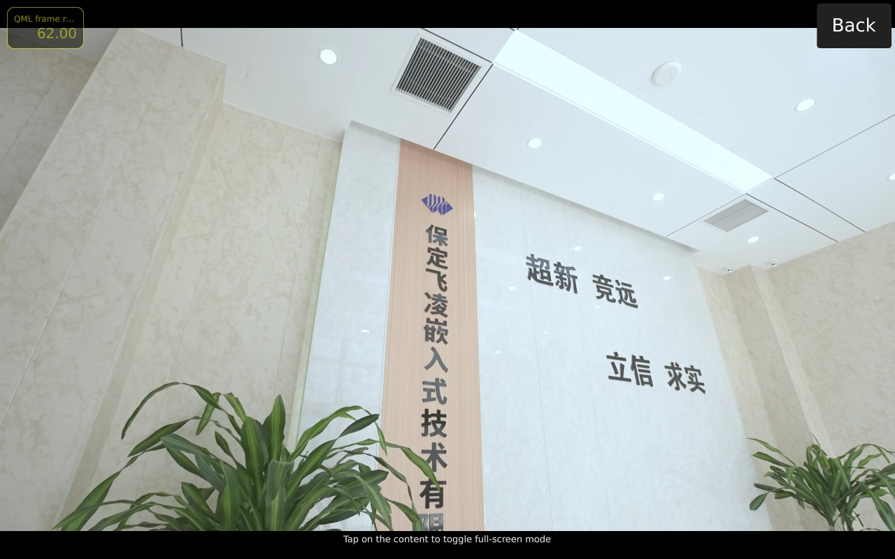</p>
</section>
<section id="browser-test">
<h3>3.15 Browser Test<a class="headerlink" href="#browser-test" title="Link to this heading"></a></h3>
<p>Icon：</p>
<p></p>
<p><strong>Note: Before testing, check whether the time of the development board is accurate. If the time of the development board is abnormal, it will cause certificate problems. Check the network.</strong></p>
<p>Click the icon to enter the browser interface and enter the official website of forlinx by default.</p>
<p>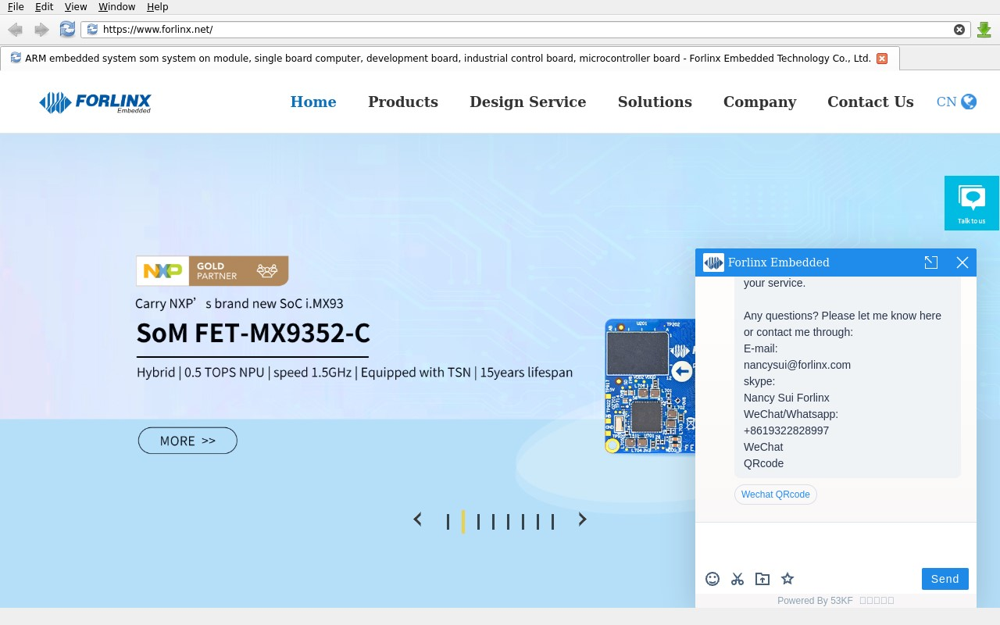</p>
</section>
</section>
<section id="command-line-function-test">
<h2>4. Command Line Function Test<a class="headerlink" href="#command-line-function-test" title="Link to this heading"></a></h2>
<p>The OK-MX8MPX-C platform has various built-in command line tools available to users.<br />
FORLINX test program source code path: OK-MX8-linux-sdk/appsrc/forlinx-cmd</p>
<p>Test program path:/usr/bin</p>
<section id="system-information-query">
<h3>4.1 System Information Query<a class="headerlink" href="#system-information-query" title="Link to this heading"></a></h3>
<p>To view kernel and cpu information, enter the following command</p>
<div class="highlight-plain notranslate"><div class="highlight"><pre><span></span>root@OK-MX8MPX-C:~# uname -a
Linux OKMX8MPX-C 6.1.36 #1 SMP PREEMPT Fri Feb 14 10:27:56 CST 2025 aarch64 GNU/Linux
</pre></div>
</div>
<p>View operating system information:</p>
<div class="highlight-plain notranslate"><div class="highlight"><pre><span></span>root@OK-MX8MPX-C:~# cat /etc/issue
|||||||||||||||||||||||||||||||||||||||||||||||||||||||||||||||||||||||||||||||||||||||||||||||||
||        ||||       ||||         |||||  ||||||||||  |||   |||||  |||   ||||   ||||||||||||||||||
||  |||||||||   |||   |||  |||||   ||||  ||||||||||  |||    ||||  ||||   ||   |||||||||||||||||||
||  |||||||||  |||||  |||  |||||   ||||  ||||||||||  |||  |  |||  |||||      ||||||||||||||||||||
||        |||  |||||  |||         |||||  ||||||||||  |||  ||  ||  ||||||    |||||||||||||||||||||
||  |||||||||  |||||  |||  ||||  ||||||  ||||||||||  |||  |||  |  |||||  ||  ||||||||||||||||||||
||  |||||||||   |||   |||  |||||  |||||  ||||||||||  |||  ||||    ||||   |||  |||||||||||||||||||
||  ||||||||||       ||||  ||||||  ||||        ||||  |||  |||||   |||   ||||   ||||||||||||||||||
|||||||||||||||||||||||||||||||||||||||||||||||||||||||||||||||||||||||||||||||||||||||||||||||||

Welcome to forlinx OKMX8MPX-C \l

</pre></div>
</div>
<p>To view CPU information:</p>
<div class="highlight-plain notranslate"><div class="highlight"><pre><span></span>root@OK-MX8MPX-C:~# cat /proc/cpuinfo
pprocessor	: 0
BogoMIPS	: 16.00
Features	: fp asimd evtstrm aes pmull sha1 sha2 crc32 cpuid
CPU implementer	: 0x41
CPU architecture: 8
CPU variant	: 0x0
CPU part	: 0xd03
CPU revision	: 4

processor	: 1
BogoMIPS	: 16.00
Features	: fp asimd evtstrm aes pmull sha1 sha2 crc32 cpuid
CPU implementer	: 0x41
CPU architecture: 8
CPU variant	: 0x0
CPU part	: 0xd03
CPU revision	: 4

processor	: 2
BogoMIPS	: 16.00
Features	: fp asimd evtstrm aes pmull sha1 sha2 crc32 cpuid
CPU implementer	: 0x41
CPU architecture: 8
CPU variant	: 0x0
CPU part	: 0xd03
CPU revision	: 4

processor	: 3
BogoMIPS	: 16.00
Features	: fp asimd evtstrm aes pmull sha1 sha2 crc32 cpuid
CPU implementer	: 0x41
CPU architecture: 8
CPU variant	: 0x0
CPU part	: 0xd03
CPU revision	: 4

</pre></div>
</div>
<p>View environment variable information:</p>
<div class="highlight-plain notranslate"><div class="highlight"><pre><span></span>root@OK-MX8MPX-C:~# env
SHELL=/bin/sh
EDITOR=vi
QTWEBENGINE_DISABLE_SANDBOX=1
PWD=/home/root
LOGNAME=root
XDG_SESSION_TYPE=tty
MOTD_SHOWN=pam
HOME=/home/root
LANG=en_US.utf8
WAYLAND_DISPLAY=/run/wayland-0
QT_QPA_PLATFORM=wayland
XDG_SESSION_CLASS=user
TERM=linux
USER=root
SHLVL=1       
XDG_SESSION_ID=c2
XDG_RUNTIME_DIR=/run/user/0
PS1=\u@\h:\w\$ 
LC_ALL=en_US.utf8
HUSHLOGIN=FALSE
PATH=/usr/local/bin:/usr/bin:/bin:/usr/local/sbin:/usr/sbin:/sbin
DBUS_SESSION_BUS_ADDRESS=unix:path=/run/user/0/bus
MAIL=/var/spool/mail/root
_=/usr/bin/env

</pre></div>
</div>
</section>
<section id="frequency-test">
<h3>4.2 Frequency Test<a class="headerlink" href="#frequency-test" title="Link to this heading"></a></h3>
<p><strong>Note: This process changes all CPU cores at the same time.</strong></p>
<ol class="arabic simple">
<li><p>All cpufreq governor types supported in the current kernel:</p></li>
</ol>
<div class="highlight-plain notranslate"><div class="highlight"><pre><span></span>root@OK-MX8MPX-C:~# cat \
/sys/devices/system/cpu/cpufreq/policy0/scaling_available_governors
conservative ondemand userspace powersave performance schedutil
</pre></div>
</div>
<p>The default mode is ondemand. In this mode, the CPU frequency will be adjusted according to the demand. Check the current CPU freq governor type:</p>
<p>The userspace indicates user mode, in which other users’ programs can adjust the CPU frequency.</p>
<div class="highlight-plain notranslate"><div class="highlight"><pre><span></span>root@OK-MX8MPX-C:~# cat /sys/devices/system/cpu/cpufreq/policy0/scaling_governor
ondemand
</pre></div>
</div>
<ol class="arabic simple" start="2">
<li><p>View the current CPU frequency:</p></li>
</ol>
<div class="highlight-plain notranslate"><div class="highlight"><pre><span></span>root@OK-MX8MPX-C:~# cat /sys/devices/system/cpu/cpufreq/policy0/scaling_cur_freq
1200000
</pre></div>
</div>
<ol class="arabic simple" start="3">
<li><p>View the current CPU supported frequency level.</p></li>
</ol>
<div class="highlight-plain notranslate"><div class="highlight"><pre><span></span>root@OK-MX8MPX-C:~# cat \
/sys/devices/system/cpu/cpufreq/policy0/scaling_available_frequencies
1200000 1600000
</pre></div>
</div>
<ol class="arabic simple" start="4">
<li><p>Set to user mode and modify the frequency to 1600000：</p></li>
</ol>
<div class="highlight-plain notranslate"><div class="highlight"><pre><span></span>root@OK-MX8MPX-C:~# echo userspace &gt; \
/sys/devices/system/cpu/cpufreq/policy0/scaling_governor
root@OK-MX8MPX-C:~# echo 1600000 &gt; \
/sys/devices/system/cpu/cpufreq/policy0/scaling_setspeed
</pre></div>
</div>
<p>View the modified current frequency:</p>
<div class="highlight-plain notranslate"><div class="highlight"><pre><span></span>root@OK-MX8MPX-C:~# cat /sys/devices/system/cpu/cpu0/cpufreq/cpuinfo_cur_freq
1600000
</pre></div>
</div>
</section>
<section id="temperature-test">
<h3>4.3 Temperature Test<a class="headerlink" href="#temperature-test" title="Link to this heading"></a></h3>
<p>View the temperature value:</p>
<div class="highlight-plain notranslate"><div class="highlight"><pre><span></span>root@OK-MX8MPX-C:~# cat /sys/class/thermal/thermal_zone0/temp
53000
</pre></div>
</div>
<p>The temperature value is 53°C.</p>
</section>
<section id="ddr-bandwidth-test">
<h3>4.4 DDR Bandwidth Test<a class="headerlink" href="#ddr-bandwidth-test" title="Link to this heading"></a></h3>
<div class="highlight-plain notranslate"><div class="highlight"><pre><span></span>root@OK-MX8MPX-C:~# fltest_memory_bandwidth.sh
L1 cache bandwidth rd test with # process
0.008192 22213.07
0.008192 22213.07
0.008192 22245.45
0.008192 22425.28
0.008192 22193.52
L2 cache bandwidth rd test
0.131072 9658.94
0.131072 9634.51
0.131072 9614.31
0.131072 9633.09
0.131072 9647.43
Main mem bandwidth rd test
52.43 2505.68
52.43 2520.25
52.43 2506.16
52.43 2521.10
52.43 2523.28
L1 cache bandwidth wr test with # process
0.008192 19523.07
0.008192 19521.65
0.008192 19508.88
0.008192 19514.58
0.008192 19512.42
L2 cache bandwidth wr test
0.131072 11418.06
0.131072 11171.86
0.131072 11184.50
0.131072 10466.82
0.131072 11241.37
Main mem bandwidth wr test
52.43 1005.48
52.43 1006.06
52.43 1006.66
52.43 1005.79
52.43 1006.31
</pre></div>
</div>
<p>The lpDDR4 bandwidth of the OK-MX8MPX-C is shown above, with a read bandwidth of about 2500M/s and a write bandwidth of about 1000M/s.</p>
</section>
<section id="id2">
<h3>4.5 Watchdog Test<a class="headerlink" href="#id2" title="Link to this heading"></a></h3>
<p>Watchdog is a frequently used function in embedded systems, and the device node for the watchdog in OK-MX8MPX-C is /dev/watchdog.</p>
<p>Use fltest_watchdog to start the watchdog, set the reset time to 10s, and feed the dog regularly. This command will turn on the watchdog and perform the dog-feeding operation, so the system will not reboot.</p>
<div class="highlight-plain notranslate"><div class="highlight"><pre><span></span>root@OK-MX8MPX-C:~# fltest_watchdog -t10 -c
Watchdog Ticking Away!
</pre></div>
</div>
<p>When ctrl + C is used to end the test procedure, the dog feeding is stopped, the watchdog is in the open state, and the system is reset after 10s; If you do not want to reset, please enter the command to close the watchdog within 10 seconds after the end of the program:</p>
<div class="highlight-plain notranslate"><div class="highlight"><pre><span></span>root@OK-MX8MPX-C:~# fltest_watchdog -d                      //Turn off the watchdog
</pre></div>
</div>
<p>Start the watchdog, set the reset time for 10s, and do not feed the dog. This command turns on the watchdog, but does not feed the dog, and the system restarts after 10 seconds.</p>
<div class="highlight-plain notranslate"><div class="highlight"><pre><span></span>root@OK-MX8MPX-C:~# fltest_watchdog -t10 -e
</pre></div>
</div>
</section>
<section id="rtc-function-test">
<h3>4.6 RTC Function Test<a class="headerlink" href="#rtc-function-test" title="Link to this heading"></a></h3>
<p><strong>Note: Ensure that button cell batteries are installed on the board and the battery voltage is normal.</strong></p>
<p>OK-MX8MPX-C supports two models of RX8010SJ, PCF8563T RTC chips, with RX8010SJ RTC on-board by default.<br />
RTC testing is mainly done by using the date and hwclock tools to set the software and hardware time. The test checks if the software clock can read and synchronize with the RTC clock when the development board is powered off and on again (Note: Make sure that the button battery is already installed on the board).</p>
<div class="highlight-plain notranslate"><div class="highlight"><pre><span></span>root@OK-MX8MPX-C:~# date -s &quot;2024-03-22 11:59:30&quot;           // Set the software time
Fri Mar 22 11:59:30 AM CST 2024
root@OK-MX8MPX-C:~# hwclock -w           // Synchronize the software time to the hardware time
root@OK-MX8MPX-C:~# hwclock -r                       // Display the hardware time
2024-03-22 12:00:07.037836+08:00
</pre></div>
</div>
<p>Then power off and power on the development board, read the system time after entering the system, and you can see that the time has been synchronized.</p>
<div class="highlight-plain notranslate"><div class="highlight"><pre><span></span>root@OK-MX8MPX-C:~# date
Fri Mar 22 12:01:22 PM CST 2024
</pre></div>
</div>
</section>
<section id="rs485-test">
<h3>4.7 RS485 Test<a class="headerlink" href="#rs485-test" title="Link to this heading"></a></h3>
<p>OK8MP platform UART3 is used as RS485. In this section, another mx8mpx-c mainboard is used to connect 485 serial port for transceiver test when testing 485 function.<br />
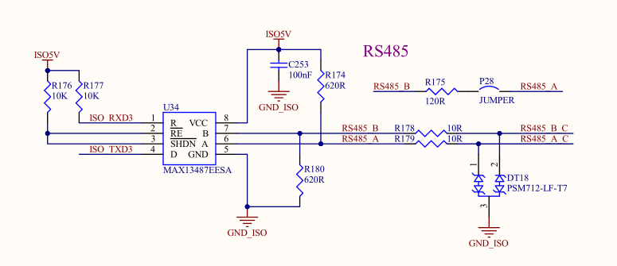</p>
<p>The receiving end prints as follows:</p>
<div class="highlight-plain notranslate"><div class="highlight"><pre><span></span>root@OK-MX8MPX-C:~# fltest_uarttest -d /dev/ttymxc2 -r &amp;
[2]1166
tx_0: wmfUOEUt097eLdSudH1ByJCY67DOP0DL
rx_0: wmfUOEUt097eLdSudH1ByJCY67DOP0DL
[2]+  Done                    fltest_uarttest -d /dev/ttymxc0 -r
</pre></div>
</div>
<p>The sending end prints as follows:</p>
<div class="highlight-plain notranslate"><div class="highlight"><pre><span></span>root@OK-MX8MPX-C:~# fltest_uarttest -d /dev/ttymxc2 -w
tx_0: wmfUOEUt097eLdSudH1ByJCY67DOP0DL
</pre></div>
</div>
</section>
<section id="pcie-test">
<h3>4.8 PCIE Test<a class="headerlink" href="#pcie-test" title="Link to this heading"></a></h3>
<p>Before powering on the system, insert the PCIE module into the PCIE x 1 card slot on the carrier board. After powering on and starting Linux, you can see that the corresponding device is enumerated successfully through lspci. Taking the Intel 82574L NIC as an example, the successful enumeration is shown below:</p>
<div class="highlight-plain notranslate"><div class="highlight"><pre><span></span>root@OK-MX8MPX-C:~# lspci
00:00.0 PCI bridge: Synopsys, Inc. DWC_usb3 / PCIe bridge (rev 01)
01:00.0 Ethernet controller: Realtek Semiconductor Co., Ltd. RTL8125 2.5GbE Controller
</pre></div>
</div>
<p>Due to the many types of pcie devices, it may not be supported by the kernel by default, so you need to add the corresponding driver for the compiled device by yourself.</p>
</section>
<section id="tf-card-test">
<h3>4.9 TF Card Test<a class="headerlink" href="#tf-card-test" title="Link to this heading"></a></h3>
<p><strong>Note:</strong></p>
<ul class="simple">
<li><p><strong>The SD card mount directory is /run/media/ and supports hot-swapping;</strong></p></li>
<li><p><strong>The file system of NTFS format is not supported. If the format of TF card is not clear, it is recommended to format it to FAT32 format before use;</strong></p></li>
<li><p><strong>After inserting the TF card, the device node is “/dev/mmcblk1 *”.</strong></p></li>
</ul>
<p>1. Insert the TF card into the TF card slot on the carrier board. The printed information is as follows:</p>
<div class="highlight-plain notranslate"><div class="highlight"><pre><span></span>[ 4075.276047] mmc1: host does not support reading read-only switch, assuming write-enable
[ 4075.311963] mmc1: new ultra high speed SDR104 SDHC card at address 5048
[ 4075.328510] mmcblk1: mmc1:5048 SD32G 29.7 GiB 
[ 4075.334519]  mmcblk1: p1
</pre></div>
</div>
<p>2. Check the mount directory:<br />
The TF card mount directory is as follows:</p>
<div class="highlight-plain notranslate"><div class="highlight"><pre><span></span>root@OK-MX8MPX-C:~# ls /run/media/               //List files in the/run/media directory
Boot-mmcblk2p1/ mmcblk1p1/
</pre></div>
</div>
<p>3. Write test:<br />
<strong>Note: Please ensure that there is enough space in the TF card partition before writing.</strong></p>
<div class="highlight-plain notranslate"><div class="highlight"><pre><span></span>root@OK-MX8MPX-C:~# dd if=/dev/zero of=/run/media/mmcblk1p1/test.bin \
bs=1M count=200 conv=fsync oflag=direct
200+0 records in
200+0 records out
209715200 bytes (210 MB, 200 MiB) copied, 2.73121 s, 76.8 MB/s
</pre></div>
</div>
<p>4. Read test:<br />
<strong>Note: To ensure the accuracy of the data, please restart the development board to test the reading speed.</strong></p>
<div class="highlight-plain notranslate"><div class="highlight"><pre><span></span>root@OK-MX8MPX-C:~# dd if=/run/media/mmcblk1p1/test.bin of=/dev/null \
bs=1M count=200 iflag=direct
200+0 records in
200+0 records out
209715200 bytes (210 MB, 200 MiB) copied, 2.30143 s, 91.1 MB/s
</pre></div>
</div>
<p>5. Unstall TF card<br />
After using the TF card, uninstall it with umount before ejecting it.<br />
<strong>Note: Plug and unplug the TF card after exiting the TF card mounting path.</strong></p>
<div class="highlight-plain notranslate"><div class="highlight"><pre><span></span>root@OK-MX8MPX-C:~# umount /run/media/mmcblk1p1
</pre></div>
</div>
</section>
<section id="emmc-test">
<h3>4.10 EMMC Test<a class="headerlink" href="#emmc-test" title="Link to this heading"></a></h3>
<p>OK-MX8MPX-C platform eMMC runs in HS200 mode 200MHz clock by default. The following is a simple eMMC read/write speed test: taking the read/write ext4 file system as an example.</p>
<p>Write test:</p>
<div class="highlight-plain notranslate"><div class="highlight"><pre><span></span>root@OK-MX8MPX-C:~# dd if=/dev/zero of=/data.img bs=1M count=500 conv=fsync oflag=direct
500+0 records in
500+0 records out
524288000 bytes (524 MB, 500 MiB) copied, 4.43111 s, 118 MB/s
</pre></div>
</div>
<p>Read test:<br />
<strong>Note: To ensure the accuracy of the data, please restart the development board to test the reading speed.</strong></p>
<div class="highlight-plain notranslate"><div class="highlight"><pre><span></span>root@OK-MX8MPX-C:~# dd if=/data.img of=/dev/null bs=1M count=500 iflag=direct
500+0 records in
500+0 records out
524288000 bytes (524 MB, 500 MiB) copied, 2.80064 s, 187 MB/s
</pre></div>
</div>
</section>
<section id="usb3-0-test">
<h3>4.11 USB3.0 Test<a class="headerlink" href="#usb3-0-test" title="Link to this heading"></a></h3>
<p>OK-MX8MPX-C supports two USB3.0 Type-A interfaces. You can connect USB mouse, USB keyboard, U disk and other devices on any on-board USB HOST interface, and support hot plug of the above devices. Demonstration with a mounting USB flash drive; the current USB flash drive test support up to 32G, but no test for 32G or above.<br />
Description**:**</p>
<ul class="simple">
<li><p><strong>Support hot plug of U disk device;</strong></p></li>
<li><p><strong>If NTFS isn’t supported and you’re unsure of the USB drive’s format, it’s best to format it to FAT32 before using it.</strong></p></li>
</ul>
<section id="usb-mouse-test">
<h4>4.11.1  USB Mouse Test<a class="headerlink" href="#usb-mouse-test" title="Link to this heading"></a></h4>
<p>Connect the USB mouse to the USB interface of the OK-MX8MPX-C platform, and the print information of the serial port terminal is as follows:</p>
<div class="highlight-plain notranslate"><div class="highlight"><pre><span></span>[ 4111.459770] usb 3-1.2: new low-speed USB device number 6 using xhci-hcd
[ 4111.536111] input: SiGmaMicro USB Optical Mouse as /devices/platform/soc@0/32f10108.usb/38200000.usb/xhci-hcd.1.auto/usb3/3-1/3-1.2/3-1.2:1.0/0003:1C4F:0057.0001/input/input6
[ 4111.552509] hid-generic 0003:1C4F:0057.0001: input: USB HID v1.10 Mouse [SiGmaMicro USB Optical Mouse] on usb-xhci-hcd.1.auto-1.2/input0
[ 4123.853117] usb 3-1.2: USB disconnect, device number 6
</pre></div>
</div>
<p>At this time, the arrow cursor appears on the screen, the mouse can work normally.<br />
Next, take the U disk as an example for demonstration.<br />
The terminal prints information about the USB flash drive, and since many types of USB flash drives exist, the information displayed may vary:</p>
</section>
<section id="usb-u-disk-test">
<h4>4.11.2  USB U Disk Test<a class="headerlink" href="#usb-u-disk-test" title="Link to this heading"></a></h4>
<ol class="arabic simple">
<li><p>After the development board is started, insert the USB disk into the USB2.0 host interface of the development board.<br />
Serial port information:</p></li>
</ol>
<div class="highlight-plain notranslate"><div class="highlight"><pre><span></span>[  343.438673] usb 3-1.1: new hig5h-speed USB device number 4 using xhci-hcd
[  343.547026] usb-storage 3-1.1:1.0: USB Mass Storage device detected
[  343.553832] scsi host0: usb-storage 3-1.1:1.0
[  344.581363] scsi 0:0:0:0: Direct-Access     SCSI     DISK             1.00 PQ: 0 ANSI: 4
[  344.590662] sd 0:0:0:0: [sda] 31223936 512-byte logical blocks: (16.0 GB/14.9 GiB)
[  344.598526] sd 0:0:0:0: [sda] Write Protect is off
[  344.603887] sd 0:0:0:0: [sda] No Caching mode page found
[  344.609236] sd 0:0:0:0: [sda] Assuming drive cache: write through
[  344.617388]  sda: sda1
[  344.620171] sd 0:0:0:0: [sda] Attached SCSI removable disk
</pre></div>
</div>
<ol class="arabic simple" start="2">
<li><p>View the mount directory:</p></li>
</ol>
<div class="highlight-plain notranslate"><div class="highlight"><pre><span></span>root@OK-MX8MPX-C:~# ls /run/media/
Boot-mmcblk2p1  sda1
</pre></div>
</div>
<ol class="arabic simple" start="3">
<li><p>View the contents of the USB flash drive:</p></li>
</ol>
<div class="highlight-plain notranslate"><div class="highlight"><pre><span></span>root@OK-MX8MPX-C:~# ls -l /run/media/sda1
total 4096000
-rwxrwx--- 1 root disk 4194304000 Mar 22 16:34 test
</pre></div>
</div>
<ol class="arabic simple" start="4">
<li><p>Write test:</p></li>
</ol>
<div class="highlight-plain notranslate"><div class="highlight"><pre><span></span>root@OK-MX8MPX-C:~# dd if=/dev/zero of=/run/media/sda1/test bs=100M count=40 \
conv=fsync oflag=direct
40+0 records in
40+0 records out
4194304000 bytes (4.2 GB, 3.9 GiB) copied, 354.351 s, 11.8 MB/s
</pre></div>
</div>
<ol class="arabic simple" start="5">
<li><p>Read test:</p></li>
</ol>
<div class="highlight-plain notranslate"><div class="highlight"><pre><span></span>root@OK-MX8MPX-C:~# dd if=/run/media/sda1/test of=/dev/null bs=100M iflag=direct
40+0 records in
40+0 records out
4194304000 bytes (4.2 GB, 3.9 GiB) copied, 172.192 s, 24.4 MB/s
</pre></div>
</div>
<ol class="arabic simple" start="6">
<li><p>Ustall U disk:</p></li>
</ol>
<div class="highlight-plain notranslate"><div class="highlight"><pre><span></span>root@OK-MX8MPX-C:~# umount /run/media/sda1
</pre></div>
</div>
</section>
<section id="usb-to-uart-test">
<h4>4.11.3 USB to UART Test<a class="headerlink" href="#usb-to-uart-test" title="Link to this heading"></a></h4>
<p>The OK-MX8MPX-C board is equipped with a USB-to-UART chip XR21V1414IM48. The board positions P35, P36, P37, and P39 correspond to tty device names /dev/ttyUSB0, /dev/ttyUSB1, /dev/ttyUSB2, and /dev/ttyUSB3, respectively.</p>
<p>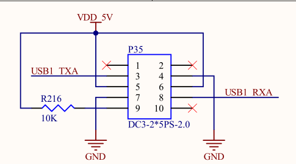</p>
<p>Test method: short circuit TXD and RXD.</p>
<p>Serial port information:</p>
<div class="highlight-plain notranslate"><div class="highlight"><pre><span></span>root@OK-MX8MPX-C:~#fltest_uarttest -d /dev/ttyUSB0
tx_0: 0ATU5pD9GsfkEZpBJHmsC4t67A9MdWLd
rx_0: 0ATU5pD9GsfkEZpBJHmsC4t67A9MdWLd
root@OK-MX8MPX-C:~# fltest_uarttest -d /dev/ttyUSB1
tx_0: xbF1XSMlrOp4DGMm5iZKV1RE30Oevywq
rx_0: xbF1XSMlrOp4DGMm5iZKV1RE30Oevywq
root@OK-MX8MPX-C:~# fltest_uarttest -d /dev/ttyUSB2
tx_0: heQlRFobDQQzNzpIJ2S2aVghweqbHXXz
rx_0: heQlRFobDQQzNzpIJ2S2aVghweqbHXXz
root@OK-MX8MPX-C:~# fltest_uarttest -d /dev/ttyUSB3
tx_0: BUhEYVJ6hjUg0TohEb4PrIuiKgDZS55c
rx_0: BUhEYVJ6hjUg0TohEb4PrIuiKgDZS55c
</pre></div>
</div>
</section>
<section id="otg-test">
<h4>4.11.4 OTG Test<a class="headerlink" href="#otg-test" title="Link to this heading"></a></h4>
<p>The OK-MX8MPX-C includes a OTG-C port, which can be used in Device mode for brushing, and Host mode for plugging in regular USB devices. When connecting the OK8MP-C to a PC using a Micro USB cable, the OK8MP-C will automatically configure the OTG interface as Device mode. Similarly, when connecting a USB flash drive or other devices using an OTG cable, the system will automatically configure the OTG interface as Host mode.</p>
<ol class="arabic simple">
<li><p>Serial port information:</p></li>
</ol>
<div class="highlight-plain notranslate"><div class="highlight"><pre><span></span>[  109.407327] usb 1-1: new high-speed USB device number 2 using xhci-hcd
[  109.564425] usb-storage 1-1:1.0: USB Mass Storage device detected
[  109.571876] scsi host0: usb-storage 1-1:1.0
[  110.597987] scsi 0:0:0:0: Direct-Access      USB      SanDisk 3.2Gen1 1.00 PQ: 0 ANSI: 6
[  110.607733] sd 0:0:0:0: [sda] 60125184 512-byte logical blocks: (30.8 GB/28.7 GiB)
[  110.616255] sd 0:0:0:0: [sda] Write Protect is off
[  110.621442] sd 0:0:0:0: [sda] Write cache: disabled, read cache: enabled, doesn&#39;t support DPO or FUA
[  110.645161]  sda: sda1
[  110.647846] sd 0:0:0:0: [sda] Attached SCSI removable disk
</pre></div>
</div>
<ol class="arabic simple" start="2">
<li><p>View the mount directory:</p></li>
</ol>
<div class="highlight-plain notranslate"><div class="highlight"><pre><span></span>root@OK-MX8MPX-C:~# ls /run/media/
Boot-mmcblk2p1  sda1
</pre></div>
</div>
<p>“sda1” represents the first partition of the first USB storage device inserted, and so forth.</p>
<ol class="arabic simple" start="3">
<li><p>Write test: Write speeds are limited by the specific storage device:</p></li>
</ol>
<div class="highlight-plain notranslate"><div class="highlight"><pre><span></span>root@OK-MX8MPX-C:~# dd if=/dev/zero of=/run/media/sda1/test bs=100M count=40 \
conv=fsync oflag=direct
40+0 records in
40+0 records out
4194304000 bytes (4.2 GB, 3.9 GiB) copied, 283.871 s, 14.8 MB/s
</pre></div>
</div>
<ol class="arabic simple" start="4">
<li><p>Read test:</p></li>
</ol>
<div class="highlight-plain notranslate"><div class="highlight"><pre><span></span>root@OK-MX8MPX-C:~# dd if=/run/media/sda1/test of=/dev/null bs=100M iflag=direct
40+0 records in
40+0 records out
4194304000 bytes (4.2 GB, 3.9 GiB) copied, 131.639 s, 31.9 MB/s
</pre></div>
</div>
<ol class="arabic simple" start="5">
<li><p>Ustall U disk:</p></li>
</ol>
<div class="highlight-plain notranslate"><div class="highlight"><pre><span></span>root@OK-MX8MPX-C:~# umount /run/media/sda1
</pre></div>
</div>
<p>The on - board Type - C port can be used as either a host or a device. Connect the Type - C port of the development board to a PC with a suitable USB cable, and then execute the following commands:</p>
<div class="highlight-plain notranslate"><div class="highlight"><pre><span></span>root@OK-MX8MPX-C:~# insmod /lib/modules/`uname -a | awk &#39;{print \
$3}&#39;`/kernel/drivers/usb/gadget/legacy/g_mass_storage.ko removable=1 file=/dev/mmcblk2p1
[   75.704385] Mass Storage Function, version: 2009/09/11
[   75.709558] LUN: removable file: (no medium)
[   75.713949] LUN: removable file: /dev/mmcblk2p1
[   75.718497] Number of LUNs=1
[   75.721498] g_mass_storage gadget.0: Mass Storage Gadget, version: 2009/09/11
[   75.728659] g_mass_storage gadget.0: userspace failed to provide iSerialNumber
[   75.735954] g_mass_storage gadget.0: g_mass_storage ready
</pre></div>
</div>
<p>You will find that the PC will mount the first partition of the eMMC as a USB flash drive.</p>
</section>
</section>
<section id="network-test">
<h3>4.12 Network Test<a class="headerlink" href="#network-test" title="Link to this heading"></a></h3>
<p>Ethernet Configuration</p>
<p>The OK - MX8MPX - C board is equipped with two Gigabit network cards. When you insert an Ethernet cable to connect to the network, by default, the Gigabit network card for eth0 is configured with a static IP address of 192.168.0.232 at the time of factory shipment. The network card of OK-MX8MPX-C can be configured through the configuration file /etc/systemd/network/10-eth.network.<br />
<strong>Note: eth0, eth1 are different from the carrier board screen printing. eth0 corresponds to the eth1 port on the carrier board, and eth1 corresponds to the eth2 port.</strong></p>
<section id="gigabit-network-static-ip-configuration">
<h4>4.12.1 Gigabit Network Static IP Configuration<a class="headerlink" href="#gigabit-network-static-ip-configuration" title="Link to this heading"></a></h4>
<p><strong>Description:</strong></p>
<ul class="simple">
<li><p><strong>The Gigabit Ethernet cards in the kernel are eth0 and eth1, and the default IP of eth0 is 192.168.0.232. After the development board is powered on and started normally, execute the following command to open the network configuration file/etc/systemd/network/10-eth. network.</strong></p></li>
</ul>
<div class="highlight-plain notranslate"><div class="highlight"><pre><span></span>root@OK-MX8MPX-C:~# vi /etc/systemd/network/10-eth.network
</pre></div>
</div>
<p>Modify the followings:</p>
<div class="highlight-plain notranslate"><div class="highlight"><pre><span></span>[Match]
Name=eth0
KernelCommandLine=!root=/dev/nfs

[Network]
Address=192.168.0.232/24
Gateway=192.168.0.1
DNS=114.114.114.114
</pre></div>
</div>
<p>Parameter Description:</p>
<table class="docutils align-default">
<thead>
<tr class="row-odd"><th class="head"><p>Parameter</p></th>
<th class="head"><p>Description</p></th>
</tr>
</thead>
<tbody>
<tr class="row-even"><td><p>Name</p></td>
<td><p>NIC: eth0 and eth1</p></td>
</tr>
<tr class="row-odd"><td><p>KernelCommandLine</p></td>
<td><p>The kernel parameter !root=/dev/nfs is used to disable NFS (Network File System) mounting. Otherwise, it may cause the network to fail to start.</p></td>
</tr>
<tr class="row-even"><td><p>Address</p></td>
<td><p>Static IP: 192.168.0.232/24</p></td>
</tr>
<tr class="row-odd"><td><p>Gateway</p></td>
<td><p>Gateway address: 192.168.0.1</p></td>
</tr>
<tr class="row-even"><td><p>DNS</p></td>
<td><p>DNS Server:114.114.114.114</p></td>
</tr>
</tbody>
</table>
<p>Save and exit, execute the following command to make the configuration effective:</p>
<div class="highlight-plain notranslate"><div class="highlight"><pre><span></span>root@OK-MX8MPX-C:~# systemctl restart systemd-networkd
</pre></div>
</div>
<p>Execute the ifconfig command to view the IP address of the network card:</p>
<div class="highlight-plain notranslate"><div class="highlight"><pre><span></span>root@OK-MX8MPX-C:~# ifconfig eth0
eth0: flags=4163&lt;UP,BROADCAST,RUNNING,MULTICAST&gt;  mtu 1500
        inet 192.168.0.232  netmask 255.255.255.0  broadcast 192.168.0.255
        inet6 fe80::21d:9bff:fe8a:7d0c  prefixlen 64  scopeid 0x20&lt;link&gt;
        ether 00:0c:42:a1:0b:58  txqueuelen 1000  (Ethernet)
        RX packets 10202  bytes 1022041 (1.0 MiB)
        RX errors 0  dropped 0  overruns 0  frame 0
        TX packets 10061  bytes 1022041 (1.0 MiB)
        TX errors 0  dropped 0 overruns 0  carrier 0  collisions 0
</pre></div>
</div>
</section>
<section id="internet-speed-test">
<h4>4.12.2  Internet Speed Test<a class="headerlink" href="#internet-speed-test" title="Link to this heading"></a></h4>
<p><strong>Description:</strong></p>
<ul class="simple">
<li><p><strong>Test the communication speed between the development board and the computer to ensure that they can communicate properly;</strong></p></li>
<li><p><strong>It is assumed that the iperf3 tool has been installed on Windows for this test. Use the network speed testing tool iperf3 to test the network speed of the eth1 interface on the OK - MX8MPX - C carrier board.</strong>
Run iperf3 in server mode from the cmd command terminal on Windows:</p></li>
</ul>
<div class="highlight-plain notranslate"><div class="highlight"><pre><span></span>D:\iperf-3.1.3-win64\iperf-3.1.3-win64&gt;iperf3.exe -s
</pre></div>
</div>
<p>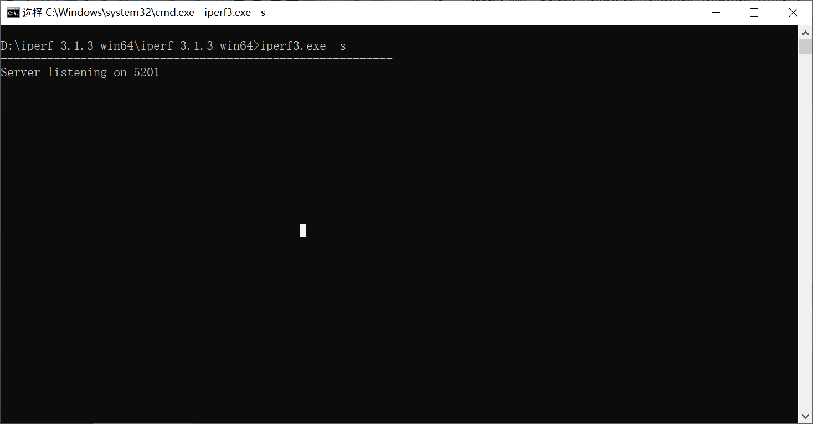</p>
<p>Connect the network cable to the eth1 interface. After the system starts, eth1 will automatically obtain an IP address. Then, enter the following command in the OK-MX8MPX-C serial debugging terminal:</p>
<div class="highlight-plain notranslate"><div class="highlight"><pre><span></span>root@OK-MX8MPX-C:~# iperf3 -c 192.168.1.16       //Please fill in the server IP address according to the actual situation
Connecting to host 192.168.1.16, port 5201
[  5] local 192.168.1.19 port 54274 connected to 192.168.1.16 port 5201
[ ID] Interval           Transfer     Bitrate         Retr  Cwnd
[  5]   0.00-1.00   sec   114 MBytes   956 Mbits/sec    0    227 KBytes       
[  5]   1.00-2.00   sec   113 MBytes   952 Mbits/sec    0    227 KBytes       
[  5]   2.00-3.00   sec   113 MBytes   949 Mbits/sec    0    227 KBytes       
[  5]   3.00-4.00   sec   113 MBytes   950 Mbits/sec    0    227 KBytes       
[  5]   4.00-5.00   sec   113 MBytes   947 Mbits/sec    0    227 KBytes       
[  5]   5.00-6.00   sec   113 MBytes   950 Mbits/sec    0    227 KBytes       
[  5]   6.00-7.00   sec   113 MBytes   948 Mbits/sec    0    227 KBytes       
[  5]   7.00-8.00   sec   113 MBytes   951 Mbits/sec    0    227 KBytes       
[  5]   8.00-9.00   sec   113 MBytes   949 Mbits/sec    0    227 KBytes       
[  5]   9.00-10.00  sec   113 MBytes   950 Mbits/sec    0    227 KBytes       
- - - - - - - - - - - - - - - - - - - - - - - - -
[ ID] Interval           Transfer     Bitrate         Retr
[  5]   0.00-10.00  sec  1.11 GBytes   950 Mbits/sec    0             sender
[  5]   0.00-10.00  sec  1.11 GBytes   949 Mbits/sec                  receiver                 
[root@OK-MX8MPX-C:~# iperf3 -s
-----------------------------------------------------------
Server listening on 5201 (test #1)
-----------------------------------------------------------
Accepted connection from 192.168.1.16, port 50890
[  5] local 192.168.1.19 port 5201 connected to 192.168.1.16 port 50891
[ ID] Interval           Transfer     Bitrate
[  5]   0.00-1.00   sec   111 MBytes   929 Mbits/sec                  
[  5]   1.00-2.00   sec   112 MBytes   942 Mbits/sec                  
[  5]   2.00-3.00   sec   112 MBytes   942 Mbits/sec                  
[  5]   3.00-4.00   sec   112 MBytes   941 Mbits/sec                  
[  5]   4.00-5.00   sec   112 MBytes   942 Mbits/sec                  
[  5]   5.00-6.00   sec   112 MBytes   942 Mbits/sec                  
[  5]   6.00-7.00   sec   112 MBytes   942 Mbits/sec                  
[  5]   7.00-8.00   sec   112 MBytes   942 Mbits/sec                  
[  5]   8.00-9.00   sec   112 MBytes   943 Mbits/sec                  
[  5]   9.00-10.00  sec   112 MBytes   942 Mbits/sec                  
[  5]  10.00-10.02  sec  1.78 MBytes   940 Mbits/sec                  
- - - - - - - - - - - - - - - - - - - - - - - - -
[ ID] Interval           Transfer     Bitrate
[  5]   0.00-10.02  sec  1.10 GBytes   941 Mbits/sec                  receiver
-----------------------------------------------------------
Server listening on 5201 (test #2)
-----------------------------------------------------------
</pre></div>
</div>
<p>The upload bandwidth of the gigabit network of the OK - MX8MPX - C is 950Mbps, and the download bandwidth is 941Mbps.</p>
</section>
</section>
<section id="id3">
<h3>4.13 Network Test<a class="headerlink" href="#id3" title="Link to this heading"></a></h3>
<p><strong>Note: The default IP for eth0 is 192.168.0.232</strong>.</p>
<section id="web-test">
<h4>4.13.1 Web Test<a class="headerlink" href="#web-test" title="Link to this heading"></a></h4>
<p><strong>Note: The IP address of the PC needs to be in the same network segment as that of the development board for this function to work properly.</strong></p>
<p>The OK - MX8MPX - C development board comes pre - installed with the lighttpd web server, and the lighttpd service is automatically started when the system boots. You can browse the web pages on the development board’s web server by entering the IP address of the development board in your browser, as shown in the following figure: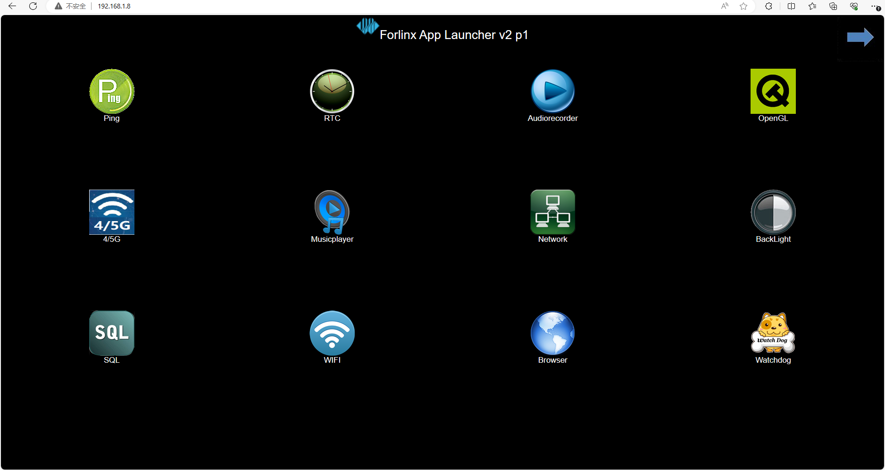</p>
</section>
</section>
<section id="wifi-bt-test">
<h3>4.14 WiFi/BT Test<a class="headerlink" href="#wifi-bt-test" title="Link to this heading"></a></h3>
<section id="wifi-sta-mode-test">
<h4>4.14.1 WIFI- STA Mode Test<a class="headerlink" href="#wifi-sta-mode-test" title="Link to this heading"></a></h4>
<p>Before using the wifi function, the following steps are required for configuration:<br />
Step 1: 	<br />
Assume that the SSID of the Wi - Fi hotspot is “H3C_708_5G” and the password is “123456785”.</p>
<div class="highlight-plain notranslate"><div class="highlight"><pre><span></span>root@OK-MX8MPX-C:~# fltest_wifi.sh -i mlan0 -s &quot;H3C_708_5G&quot; -p 123456785.
</pre></div>
</div>
<p>Enter the following command in the terminal of the development board:</p>
<p>In the above command:</p>
<p>-i wlan0 or wlan1. You need to determine which node corresponds to which module before use, and it should be based on the actual situation.</p>
<p>-s is followed by the actual name of the Wi - Fi hotspot to connect to.</p>
<p>-p is followed by the parameter “Password”, which refers to the actual password of the Wi - Fi hotspot to connect to. If the current hotspot has no password, write “NONE” after -p.</p>
<p>The serial port prints the following information:</p>
<div class="highlight-plain notranslate"><div class="highlight"><pre><span></span>root@OK-MX8MPX-C:~# fltest_wifi.sh -i mlan0 -s &quot;H3C_708_5G&quot; -p 123456785.
wifi mlan0
ssid H3C_708_5G
pasw 123456785.
[   73.761070] wlan: mlan0 START SCAN
[   78.059019] wlan: SCAN COMPLETED: scanned AP count=7
[   78.068583] wlan: HostMlme mlan0 send auth to bssid 14:XX:XX:XX:fc:87
[   78.075825] mlan0: 
[   78.075835] wlan: HostMlme Auth received from 14:XX:XX:XX:fc:87
[   78.087861] CMD_RESP: cmd 0x121 error, result=0x2
[   78.092603] IOCTL failed: 00000000d9a07460 id=0x200000, sub_id=0x200024 action=2, status_code=0x3
[   78.101486] Get multi-channel policy failed
[   78.111228] wlan: HostMlme mlan0 Connected to bssid 14:XX:XX:XX:fc:87 successfully
[   78.120878] mlan0: 
[   78.120891] wlan: Send EAPOL pkt to 14:XX:XX:XX:fc:87
[   78.129770] mlan0: 
[   78.129784] wlan: Send EAPOL pkt to 14:XX:XX:XX:fc:87
[   78.138534] IPv6: ADDRCONF(NETDEV_CHANGE): mlan0: link becomes ready
[   78.145865] woal_cfg80211_set_rekey_data return: gtk_rekey_offload is DISABLE
udhcpc: started, v1.36.1
Dropped protocol specifier &#39;.udhcpc&#39; from &#39;mlan0.udhcpc&#39;. Using &#39;mlan0&#39; (ifindex=6).
[   79.798744] imx-dwmac 30bf0000.ethernet eth1: FPE workqueue stop
[   79.893164] imx-dwmac 30bf0000.ethernet eth1: yt8521_config_init done, phy addr: 1, chip mode = 0, polling mode = 2
[   79.903659] imx-dwmac 30bf0000.ethernet eth1: PHY [stmmac-0:01] driver [YT8521 Ethernet] (irq=POLL)
[   79.912748] imx-dwmac 30bf0000.ethernet eth1: configuring for phy/rgmii-id link mode
udhcpc: broadcasting discover
udhcpc: broadcasting select for 192.168.1.32, server 192.168.1.1
udhcpc: lease of 192.168.1.32 obtained from 192.168.1.1, lease time 86400
/etc/udhcpc.d/50default: Adding DNS 192.168.1.1
Dropped protocol specifier &#39;.udhcpc&#39; from &#39;mlan0.udhcpc&#39;. Using &#39;mlan0&#39; (ifindex=6).
connect ok
bssid=14:51:7e:62:fc:87
freq=5180
ssid=H3C_708_5G
id=0
mode=station
wifi_generation=5
pairwise_cipher=CCMP
group_cipher=TKIP
key_mgmt=WPA2-PSK
wpa_state=COMPLETED
ip_address=192.168.1.32
p2p_device_address=e8:fb:1c:67:0e:c1
address=e8:fb:1c:67:0e:c1
uuid=d9fed321-8e63-5bc8-86f9-ffacf325c743
ieee80211ac=1
</pre></div>
</div>
<p>Test whether the ping network is successful</p>
<div class="highlight-plain notranslate"><div class="highlight"><pre><span></span>root@OK-MX8MPX-C:~# ping 192.168.1.213
PING 192.168.1.213 (192.168.1.213) 56(84) bytes of data.
64 bytes from 192.168.1.213: icmp_seq=1 ttl=64 time=4.30 ms
64 bytes from 192.168.1.213: icmp_seq=2 ttl=64 time=1.48 ms
64 bytes from 192.168.1.213: icmp_seq=3 ttl=64 time=1.44 ms
64 bytes from 192.168.1.213: icmp_seq=4 ttl=64 time=4.39 ms
64 bytes from 192.168.1.213: icmp_seq=5 ttl=64 time=4.66 ms
64 bytes from 192.168.1.213: icmp_seq=6 ttl=64 time=6.11 ms
64 bytes from 192.168.1.213: icmp_seq=7 ttl=64 time=7.06 ms
64 bytes from 192.168.1.213: icmp_seq=8 ttl=64 time=3.93 ms
64 bytes from 192.168.1.213: icmp_seq=9 ttl=64 time=2.87 ms
64 bytes from 192.168.1.213: icmp_seq=10 ttl=64 time=3.78 ms
64 bytes from 192.168.1.213: icmp_seq=11 ttl=64 time=3.81 ms
^C
--- 192.168.1.213 ping statistics ---
11 packets transmitted, 11 received, 0% packet loss, time 10015ms
rtt min/avg/max/mdev = 1.435/3.984/7.063/1.617 ms
</pre></div>
</div>
</section>
<section id="wifi-ap-mode-test">
<h4>4.14.2 WIFI- AP Mode Test<a class="headerlink" href="#wifi-ap-mode-test" title="Link to this heading"></a></h4>
<p>Before using the hotspot function, you need to connect and configure the network port to ensure that the gigabit network port eth0 can be connected to the network. Configure the hotspot instructions as follows:</p>
<div class="highlight-plain notranslate"><div class="highlight"><pre><span></span>root@OK-MX8MPX-C:~# fltest_hostapd.sh -B 5g 
hostapd: no process found
udhcpd: no process found
[  130.168122] audit: type=1325 audit(1726645842.844:18): table=nat family=2 entries=0 op=xt_register pid=1117 comm=&quot;iptables&quot;
[  130.179333] audit: type=1300 audit(1726645842.844:18): arch=c00000b7 syscall=209 success=yes exit=0 a0=4 a1=0 a2=40 a3=fffff81bb960 items=0 ppid=1108 pid=1117 auid=4294967295 uid=0 gid=0 euid=0 suid=0 fsuid=0 egid=0 sgid=0 fsgid=0 tty=ttymxc1 ses=4294967295 comm=&quot;iptables&quot; exe=&quot;/usr/sbin/xtables-legacy-multi&quot; key=(null)
rfkill: Cannot open RFKILL control device
[  130.215022] audit: type=1327 audit(1726645842.844:18): proctitle=69707461626C6573002D74006E6174002D4100504F5354524F5554494E47002D6F0065746830002D6A004D415351554552414445
[  130.231080] audit: type=1325 audit(1726645842.852:19): table=nat family=2 entries=5 op=xt_replace pid=1117 comm=&quot;iptables&quot;
[  130.242088] wlan: Starting AP
[  130.242214] audit: type=1300 audit(1726645842.852:19): arch=c00000b7 syscall=208 success=yes exit=0 a0=4 a1=0 a2=40 a3=aaaad8eab250 items=0 ppid=1108 pid=1117 auid=4294967295 uid=0 gid=0 euid=0 suid=0 fsuid=0 egid=0 sgid=0 fsgid=0 tty=ttymxc1 ses=4294967295 comm=&quot;iptables&quot; exe=&quot;/usr/sbin/xtables-legacy-multi&quot; key=(null)
[  130.245948] CMD_RESP: cmd 0x121 error, result=0x2
[  130.273465] audit: type=1327 audit(1726645842.852:19): proctitle=69707461626C6573002D74006E6174002D4100504F5354524F5554494E47002D6F0065746830002D6A004D415351554552414445
[  130.278175] IOCTL failed: 000000003d973d00 id=0x200000, sub_id=0x200024 action=2, status_code=0x2
[  130.278198] Get multi-channel policy failed
[  130.306857] fw doesn&#39;t support 11ax
[  130.320005] IPv6: ADDRCONF(NETDEV_CHANGE): uap0: link becomes ready
[  130.327625] wlan: AP started
[  130.331383] wlan: HostMlme uap0 send deauth/disassoc
[  130.336961] Set AC=3, txop=47 cwmin=3, cwmax=7 aifs=1
[  130.344143] Set AC=2, txop=94 cwmin=7, cwmax=15 aifs=1
[  130.353515] Set AC=0, txop=0 cwmin=15, cwmax=63 aifs=3
[  130.360655] Set AC=1, txop=0 cwmin=15, cwmax=1023 aifs=7
uap0: interface state UNINITIALIZED-&gt;ENABLED
uap0: AP-ENABLED 
</pre></div>
</div>
<p>You can see the Wi - Fi name “OK8MP_WIFI_5G_AP” on your phone or other devices.</p>
<div class="highlight-plain notranslate"><div class="highlight"><pre><span></span>[  217.923031] uap0: 
[  217.923046] wlan: HostMlme Auth received from f8:XX:XX:XX:f3:91
[  217.931339] wlan: HostMlme uap0 send Auth
uap0: STA f8:9e:94:ac:f3:91 IEEE [  217.938570] uap0: 
802.11: authenticated
[  217.938582] wlan: HostMlme MICRO_AP_STA_ASSOC f8:XX:XX:XX:f3:91
[  217.950448] wlan: UAP/GO add peer station, address =f8:XX:XX:XX:f3:91
[  217.957616] wlan: HostMlme uap0 send assoc/reassoc resp
uap0: STA f8:9e:94:ac:f3:91 IEEE [  217.966052] uap0: 
802.11: associated (aid 1)
[  217.966066] wlan: Send EAPOL pkt to f8:XX:XX:XX:f3:91
[  217.996090] uap0: 
[  217.996103] wlan: Send EAPOL pkt to f8:XX:XX:XX:f3:91
uap0: AP-STA-CONNECTED f8:9e:94:ac:f3:91
uap0: STA f8:9e:94:ac:f3:91 RADIUS: starting accounting session 1AB28D60292A2AEB
uap0: STA f8:9e:94:ac:f3:91 WPA: pairwise key handshake completed (RSN)
uap0: EAPOL-4WAY-HS-COMPLETED f8:9e:94:ac:f3:91
udhcpd: sending OFFER to 192.168.2.2
udhcpd: sending ACK to 192.168.2.2
</pre></div>
</div>
</section>
<section id="bt-test">
<h4>4.14.3  BT Test<a class="headerlink" href="#bt-test" title="Link to this heading"></a></h4>
<p>Bluetooth Configuration</p>
<div class="highlight-plain notranslate"><div class="highlight"><pre><span></span>root@OK-MX8MPX-C:~# /etc/obexd_init start
root@OK-MX8MPX-C:~# bluetoothctl                  // Open the BlueZ Bluetooth device
Agent registered
[CHG] Controller 1C:CE:51:0D:88:92 Pairable: yes
[bluetooth]# power on          // Enable the Bluetooth device
Changing power on succeeded
[bluetooth]# pairable on       // Set it to the pairable mode
Changing pairable on succeeded
[bluetooth]# discoverable on   // Set it to the discoverable mode
Changing discoverable on succeeded
[CHG] Controller 1C:CE:51:0D:88:92 Discoverable: yes
[bluetooth]# agent on        // Enable the agent
Agent is already registered
[bluetooth]# default-agent    // Set the current agent as the default agent
Default agent request successful
[bluetooth]#
</pre></div>
</div>
<ol class="arabic simple">
<li><p>Passive pairing of the development board</p></li>
</ol>
<p>After the above settings, turn on the Bluetooth on your phone and search. A device named “ok - mxmpx - c” will appear. Click on this Bluetooth device to attempt pairing. At the same time, the following information will be printed on the development board. Enter “yes”:</p>
<div class="highlight-plain notranslate"><div class="highlight"><pre><span></span>[CHG] Device 14:16:9E:62:39:BD Connected: yes
Request confirmation
[agent] Confirm passkey 153732 (yes/no): yes
</pre></div>
</div>
<p>Then, tap on Bluetooth on your phone to initiate pairing.</p>
<ol class="arabic simple" start="2">
<li><p>View and remove connected devices:</p></li>
</ol>
<div class="highlight-plain notranslate"><div class="highlight"><pre><span></span>[bluetooth]# devices Paired                                // View the connected Bluetooth devices
Device 14:16:9E:62:39:BD zzy
[bluetooth]# remove 14:16:9E:62:39:BD                         // Remove the device
[DEL] Device 14:16:9E:62:39:BD zzy
Device has been removed
</pre></div>
</div>
<ol class="arabic simple" start="3">
<li><p>Development Board Active: Pairing In addition to passive pairing, you can also send a request for active pairing at the development board terminal.</p></li>
</ol>
<div class="highlight-plain notranslate"><div class="highlight"><pre><span></span>[bluetooth]# scan on        //Open the scanning
Discovery started
[CHG] Controller E8:FB:1C:66:FA:A6 Discovering: yes
[NEW] Device 7B:01:59:ED:69:50 7B-01-59-ED-69-50
[NEW] Device 7C:71:13:5F:A3:8F 7C-71-13-5F-A3-8F
[NEW] Device 14:16:9E:62:39:BD zzy  //Discover the paired device
[NEW] Device 2C:DB:07:C7:4F:F6 DESKTOP-VND9V1F
[CHG] Device 14:16:9E:62:39:BD RSSI: -74
[bluetooth]# scan off        //Close the scanning
Discovery stopped
[CHG] Device 2C:DB:07:C7:4F:F6 TxPower is nil
[CHG] Device 2C:DB:07:C7:4F:F6 RSSI is nil
[CHG] Device 14:16:9E:62:39:BD RSSI is nil
[CHG] Device 7C:71:13:5F:A3:8F TxPower is nil
[CHG] Device 7C:71:13:5F:A3:8F RSSI is nil
[CHG] Device 7B:01:59:ED:69:50 RSSI is nil
[CHG] Controller E8:FB:1C:66:FA:A6 Discovering: no
[bluetooth]# pair 14:16:9E:62:39:BD        //Pair with the designated device
Attempting to pair with 14:16:9E:62:39:BD
[CHG] Device 14:16:9E:62:39:BD Connected: yes
Request confirmation
[agent] Confirm passkey 807166 (yes/no): yes        //Confirm passkey
[CHG] Device 14:16:9E:62:39:BD Modalias: bluetooth:v000Fp1200d1436
[CHG] Device 14:16:9E:62:39:BD UUIDs: 00001105-0000-1000-8000-00805f9b34fb
......
[CHG] Device 14:16:9E:62:39:BD UUIDs: fa88c0d0-afac-11de-8a99-0800200c9a67
[CHG] Device 14:16:9E:62:39:BD ServicesResolved: yes
[CHG] Device 14:16:9E:62:39:BD Paired: yes
Pairing successful
[CHG] Device 14:16:9E:62:39:BD ServicesResolved: no
[CHG] Device 14:16:9E:62:39:BD Connected: no
[bluetooth]# 
</pre></div>
</div>
<p>At the same time, the pairing request appears on the mobile phone interface. Click the pairing button, and the board end prints and inputs yes. The pairing on the mobile phone end is successful.</p>
<ol class="arabic simple" start="4">
<li><p>Development Board Receives Files</p></li>
</ol>
<p>After successful pairing, files can be sent from the mobile device to the board via Bluetooth.<br />
Note that if you want to send and receive files with the PC, when using the ok - mxmpx - c development board to send files, you need to enable the Bluetooth file - receiving function on the PC first. Then start the obexd service on the board.</p>
<div class="highlight-plain notranslate"><div class="highlight"><pre><span></span>root@OK-MX8MPX-C:~# /usr/libexec/bluetooth/obexd -a -r /tmp &amp;
</pre></div>
</div>
<p>By default, received files are saved in the /tmp/ directory.<br />
When receiving is complete, close obexd.</p>
<div class="highlight-plain notranslate"><div class="highlight"><pre><span></span>root@OK-MX8MPX-C:~# killall obexd 
</pre></div>
</div>
<ol class="arabic simple" start="5">
<li><p>Sending Files from Development Board Similarly, you can use the development board to send files to the mobile phone, the test method is as follows:</p></li>
</ol>
<div class="highlight-plain notranslate"><div class="highlight"><pre><span></span>root@OK-MX8MPX-C:~# bluetoothctl 
Agent registered
[CHG] Controller 1C:CE:51:0D:88:92 Pairable: yes
[bluetooth]# devices  Paired        //View paired device
Device 14:16:9E:62:39:BD zzy
[bluetooth]# exit
root@OK-MX8MPX-C:~# obexctl 
[NEW] Client /org/bluez/obex 
[obex]# connect   14:16:9E:62:39:BD     //Connect the designated device 
Attempting to connect to 14:16:9E:62:39:BD
[NEW] Session /org/bluez/obex/client/session0 [default]
[NEW] ObjectPush /org/bluez/obex/client/session0 
Connection successful
[14:16:9E:62:39:BD]# send /home/forlinx/logo/logo-1920x1080.bmp  //Send files
Attempting to send /home/forlinx/logo/logo-1920x1080.bmp to /org/bluez/obex/client/session0
[NEW] Transfer /org/bluez/obex/client/session0/transfer0 
Transfer /org/bluez/obex/client/session0/transfer0
        Status: queued
        Name: logo-1920x1080.bmp
        Size: 6220854
        Filename: /home/forlinx/logo/logo-1920x1080.bmp
        Session: /org/bluez/obex/client/session0
[CHG] Transfer /org/bluez/obex/client/session0/transfer0 Status: active
[CHG] Transfer /org/bluez/obex/client/session0/transfer0 Transferred: 65477 (@65KB/s 01:34)
[CHG] Transfer /org/bluez/obex/client/session0/transfer0 Transferred: 131005 (@65KB/s 01:32)
.....
[CHG] Transfer /org/bluez/obex/client/session0/transfer0 Status: complete
[DEL] Transfer /org/bluez/obex/client/session0/transfer0 
[14:16:9E:62:39:BD]# exit
root@OK-MX8MPX-C:~# 
</pre></div>
</div>
<p>The phone will receive the incoming file request, click Accept to transfer the file.</p>
</section>
</section>
<section id="id4">
<h3>4.15 4G/5G Test<a class="headerlink" href="#id4" title="Link to this heading"></a></h3>
<p><strong>Note:</strong></p>
<ul class="simple">
<li><p><strong>The driver supports 4G module of EM05 and 5G module of RM500Q-GL;</strong></p></li>
<li><p><strong>Before powering on the device, set the S4 dial-up code to be the same as the plug-in module.</strong></p></li>
</ul>
<section id="g-test">
<h4>4.15.1  4G Test<a class="headerlink" href="#g-test" title="Link to this heading"></a></h4>
<p>Access the module before starting the OK-MX8MPX-C development board, install the antenna, insert the SIM card, set the S4 dial to the 4G end, start the development board, and perform dial-up Internet access. Take 4G as an example..</p>
<ol class="arabic simple">
<li><p>After connecting the module and powering up the development board and the module, you can use the lsusb command to see if the module is recognized.</p></li>
</ol>
<div class="highlight-plain notranslate"><div class="highlight"><pre><span></span>root@OK-MX8MPX-C:~# lsusb
Bus 004 Device 001: ID 1d6b:0003 Linux Foundation 3.0 root hub
Bus 003 Device 003: ID 1a86:7523 QinHeng Electronics CH340 serial converter
Bus 003 Device 004: ID 2c7c:0125 Quectel Wireless Solutions Co., Ltd. EC25 LTE modem
Bus 003 Device 002: ID 0424:2517 Microchip Technology, Inc. (formerly SMSC) Hub
Bus 003 Device 001: ID 1d6b:0002 Linux Foundation 2.0 root hub
Bus 002 Device 001: ID 1d6b:0003 Linux Foundation 3.0 root hub
Bus 001 Device 001: ID 1d6b:0002 Linux Foundation 2.0 root hub
</pre></div>
</div>
<ol class="arabic simple" start="2">
<li><p>After the device is successfully recognized, dial-up Internet access can be tested.</p></li>
</ol>
<div class="highlight-plain notranslate"><div class="highlight"><pre><span></span>root@OK-MX8MPX-C:~# fltest_quectel.sh &amp;
</pre></div>
</div>
<p>Serial port printing information is as follow</p>
<div class="highlight-plain notranslate"><div class="highlight"><pre><span></span>[1] 1078
[03-26_12:14:20:191] Quectel_QConnectManager_Linux_V1.6.0.24
[03-26_12:14:20:192] Find /sys/bus/usb/devices/3-1.2 idVendor=0x2c7c idProduct=0x125, bus=0x003, dev=0x004
[03-26_12:14:20:193] Auto find qmichannel = /dev/qcqmi0
[03-26_12:14:20:193] Auto find usbnet_adapter = usb0
[03-26_12:14:20:193] netcard driver = GobiNet, driver version = V1.6.2.14
[03-26_12:14:20:193] Modem works in QMI mode
[03-26_12:14:20:223] Get clientWDS = 7
[03-26_12:14:20:256] Get clientDMS = 8
[03-26_12:14:20:288] Get clientNAS = 9
[03-26_12:14:20:320] Get clientUIM = 10
[03-26_12:14:20:353] Get clientWDA = 11
[03-26_12:14:20:385] requestBaseBandVersion EM05CEFCR06A02M1G_ND
[03-26_12:14:20:513] requestGetSIMStatus SIMStatus: SIM_READY
[03-26_12:14:20:545] requestGetProfile[1] cmnet///0
[03-26_12:14:20:577] requestRegistrationState2 MCC: 460, MNC: 1, PS: Attached, DataCap: LTE
[03-26_12:14:20:609] requestQueryDataCall IPv4ConnectionStatus: DISCONNECTED
[03-26_12:14:20:609] ifconfig usb0 0.0.0.0
[03-26_12:14:20:624] ifconfig usb0 down
[   50.315332] GobiNet 3-1.2:1.4: Runtime PM usage count underflow!
[03-26_12:14:20:705] requestSetupDataCall WdsConnectionIPv4Handle: 0x86d0ee80
[03-26_12:14:20:865] ifconfig usb0 up
[03-26_12:14:20:883] busybox udhcpc -f -n -q -t 5 -i usb0
udhcpc: started, v1.36.1
Dropped protocol specifier &#39;.udhcpc&#39; from &#39;usb0.udhcpc&#39;. Using &#39;usb0&#39; (ifindex=9).
[   50.645653] IPv6: ADDRCONF(NETDEV_CHANGE): usb0: link becomes ready
[   50.754730] GobiNet 3-1.2:1.4: Runtime PM usage count underflow!
[   50.776986] audit: type=1334 audit(1711426461.092:18): prog-id=15 op=LOAD
[   50.784633] audit: type=1334 audit(1711426461.100:19): prog-id=16 op=LOAD
udhcpc: broadcasting discover
udhcpc: broadcasting select for 10.223.229.79, server 10.223.229.80
udhcpc: lease of 10.223.229.79 obtained from 10.223.229.80, lease time 7200
[03-26_12:14:21:471] /etc/udhcpc.d/50default: Adding DNS 123.123.123.123
[03-26_12:14:21:471] /etc/udhcpc.d/50default: Adding DNS 123.123.123.124
Dropped protocol specifier &#39;.udhcpc&#39; from &#39;usb0.udhcpc&#39;. Using &#39;usb0&#39; (ifindex=9)
</pre></div>
</div>
<p>If the IP can be automatically assigned and the DNS can be added, the dial - up is successful.</p>
<p>3. After the dial - up is successful, check the network node through the ifconfig command. The network node is usb0 (the node name may vary, and it should be based on the actual situation). Then, test the network status using the ping command:</p>
<div class="highlight-plain notranslate"><div class="highlight"><pre><span></span>root@OK-MX8MPX-C:~# ping -I usb0 www.forlinx.com -c 3
PING s-526319.gotocdn.com (211.149.226.120) from 10.230.5.117 usb0: 56(84) bytes of data.
64 bytes from 211.149.226.120 (211.149.226.120): icmp_seq=1 ttl=51 time=63.5 ms
64 bytes from 211.149.226.120 (211.149.226.120): icmp_seq=2 ttl=51 time=80.5 ms
64 bytes from 211.149.226.120 (211.149.226.120): icmp_seq=3 ttl=51 time=61.9 ms

--- s-526319.gotocdn.com ping statistics ---
3 packets transmitted, 3 received, 0% packet loss, time 2004ms
rtt min/avg/max/mdev = 61.945/68.625/80.452/8.385 ms
</pre></div>
</div>
</section>
<section id="id5">
<h4>4.15.2  5G Test<a class="headerlink" href="#id5" title="Link to this heading"></a></h4>
<p>Access the module before starting the OK-MX8MPX-C development board, install the antenna, insert the SIM card, set the S4 dial to the 5G end, start the development board, and perform dial-up Internet access. Take 5G as an example..</p>
<ol class="arabic simple">
<li><p>After connecting the module and powering up the development board and the module, you can use the lsusb command to see if the module is recognized.</p></li>
</ol>
<div class="highlight-plain notranslate"><div class="highlight"><pre><span></span>root@OKMX8MPX-C:~# lsusb
Bus 002 Device 003: ID 2c7c:0800 Quectel Wireless Solutions Co., Ltd. RM500Q-GL
Bus 002 Device 002: ID 04b4:6500 Cypress Semiconductor Corp. 
Bus 002 Device 001: ID 1d6b:0003 Linux Foundation 3.0 root hub
Bus 001 Device 004: ID 04e2:1414 Exar Corp. 
Bus 001 Device 003: ID 346d:5678 USB Disk 2.0
Bus 001 Device 002: ID 04b4:6502 Cypress Semiconductor Corp. CY4609
Bus 001 Device 001: ID 1d6b:0002 Linux Foundation 2.0 root hub

</pre></div>
</div>
<ol class="arabic simple" start="2">
<li><p>After the device is successfully recognized, dial-up Internet access can be tested.</p></li>
</ol>
<div class="highlight-plain notranslate"><div class="highlight"><pre><span></span>root@OKMX8MPX-C:~# fltest_quectel.sh &amp;
</pre></div>
</div>
<p>Serial port printing information is as follow</p>
<div class="highlight-plain notranslate"><div class="highlight"><pre><span></span>[1] 1277
root@OKMX8MPX-C:~# [  125.200278] imx-dwmac 30bf0000.ethernet eth1: FPE workqueue stop
[  125.294463] imx-dwmac 30bf0000.ethernet eth1: yt8521_config_init done, phy addr: 1, chip mode = 0, polling mode = 2
[  125.304958] imx-dwmac 30bf0000.ethernet eth1: PHY [stmmac-0:01] driver [YT8521 Ethernet] (irq=POLL)
[  125.314035] imx-dwmac 30bf0000.ethernet eth1: configuring for phy/rgmii-id link mode
[11-21_15:23:56:470] Quectel_QConnectManager_Linux_V1.6.0.24
[11-21_15:23:56:472] Find /sys/bus/usb/devices/2-1.1 idVendor=0x2c7c idProduct=0x800, bus=0x002, dev=0x003
[11-21_15:23:56:472] Auto find qmichannel = /dev/qcqmi0
[11-21_15:23:56:472] Auto find usbnet_adapter = usb0
[11-21_15:23:56:472] netcard driver = GobiNet, driver version = V1.6.2.14
[11-21_15:23:56:473] qmap_mode = 1, qmap_version = 5, qmap_size = 16384, muxid = 0x81, qmap_netcard = usb0
[11-21_15:23:56:473] Modem works in QMI mode
[11-21_15:23:56:511] Get clientWDS = 7
[11-21_15:23:56:543] Get clientDMS = 8
[11-21_15:23:56:575] Get clientNAS = 9
[11-21_15:23:56:607] Get clientUIM = 10
[11-21_15:23:56:640] requestBaseBandVersion RM500QGLABR11A03M4G
[11-21_15:23:56:767] requestGetSIMStatus SIMStatus: SIM_READY
[11-21_15:23:56:800] requestGetProfile[1] cmnet///0
[11-21_15:23:56:831] requestRegistrationState2 MCC: 460, MNC: 1, PS: Attached, DataCap: 5G_SA
[11-21_15:23:56:864] requestQueryDataCall IPv4ConnectionStatus: DISCONNECTED
[11-21_15:23:56:864] ifconfig usb0 0.0.0.0
[11-21_15:23:56:877] ifconfig usb0 down
[  125.801716] GobiNet 2-1.1:1.4: Runtime PM usage count underflow!
[11-21_15:23:57:408] requestSetupDataCall WdsConnectionIPv4Handle: 0x664ad620
[  126.449491] net usb0: link_state 0x0 -&gt; 0x1
[11-21_15:23:57:540] change mtu 1500 -&gt; 1400
[11-21_15:23:57:540] ifconfig usb0 up
[11-21_15:23:57:556] busybox udhcpc -f -n -q -t 5 -i usb0
udhcpc: started, v1.36.1
Dropped protocol specifier &#39;.udhcpc&#39; from &#39;usb0.udhcpc&#39;. Using &#39;usb0&#39; (ifindex=6).
[  126.584822] audit: type=1334 audit(1732173837.668:18): prog-id=15 op=LOAD
[  126.592104] audit: type=1334 audit(1732173837.672:19): prog-id=16 op=LOAD
[  126.705362] GobiNet 2-1.1:1.4: Runtime PM usage count underflow!
udhcpc: broadcasting discover
udhcpc: broadcasting select for 10.216.240.188, server 10.216.240.189
udhcpc: lease of 10.216.240.188 obtained from 10.216.240.189, lease time 7200
RTNETLINK answers: File exists
[11-21_15:23:58:144] /etc/udhcpc.d/50default: Adding DNS 123.123.123.123
[11-21_15:23:58:145] /etc/udhcpc.d/50default: Adding DNS 123.123.123.124
Dropped protocol specifier &#39;.udhcpc&#39; from &#39;usb0.udhcpc&#39;. Using &#39;usb0&#39; (ifindex=6).
</pre></div>
</div>
<p>If the IP can be automatically assigned and the DNS can be added, the dial - up is successful.</p>
<p>3. After the dial - up is successful, check the network node through the ifconfig command. The network node is usb0 (the node name may vary, and it should be based on the actual situation). Then, test the network status using the ping command:</p>
<div class="highlight-plain notranslate"><div class="highlight"><pre><span></span>root@OKMX8MPX-C:~# ping -I usb0 www.forlinx.com -c 3
PING s-526319.gotocdn.com (211.149.226.120) from 10.230.5.117 usb0: 56(84) bytes of data.
64 bytes from 211.149.226.120 (211.149.226.120): icmp_seq=1 ttl=51 time=63.5 ms
64 bytes from 211.149.226.120 (211.149.226.120): icmp_seq=2 ttl=51 time=80.5 ms
64 bytes from 211.149.226.120 (211.149.226.120): icmp_seq=3 ttl=51 time=61.9 ms

--- s-526319.gotocdn.com ping statistics ---
3 packets transmitted, 3 received, 0% packet loss, time 2004ms
rtt min/avg/max/mdev = 61.945/68.625/80.452/8.385 ms
</pre></div>
</div>
</section>
</section>
<section id="play-record-audio-test">
<h3>4.16 Play/Record Audio Test<a class="headerlink" href="#play-record-audio-test" title="Link to this heading"></a></h3>
<p><strong>Description: OK-MX8MPX-C provides 1 x 3.5mm audio jack and 2 x PH2.0 speaker connectors. The earphone mic and the carrier board mic correspond to the left and right channels of the recording, respectively. By default, the sound is played by the speakers, and after plugging in the headphones, it is switched to play by the headphones and mute the speakers.</strong></p>
<ol class="arabic simple">
<li><p>Play the recording test</p></li>
</ol>
<div class="highlight-plain notranslate"><div class="highlight"><pre><span></span>root@OK-MX8MPX-C:~# aplay -D hw:3,0 /home/forlinx/audio/30s.wav
</pre></div>
</div>
<p>You can view the current audio device through the command</p>
<div class="highlight-plain notranslate"><div class="highlight"><pre><span></span>root@OKMX8MPX-C:~# pactl list sinks
Sink #0
    State: SUSPENDED
    Name: alsa_output.platform-sound-bt-sco.mono-fallback
...

Sink #1
    State: SUSPENDED
    Name: alsa_output.platform-sound-hdmi.stereo-fallback
...
Sink #2
    State: SUSPENDED
    Name: alsa_output.platform-sound-wm8960.stereo-fallback
    Description: Built-in Audio Stereo
    Driver: module-alsa-card.c
    Sample Specification: s16le 2ch 44100Hz
    Channel Map: front-left,front-right
    Owner Module: 8
    Mute: no
    Volume: front-left: 24163 /  37% / -26.00 dB,   front-right: 24163 /  37% / -26.00 dB
            balance 0.00
    Base Volume: 52057 /  79% / -6.00 dB
    Monitor Source: alsa_output.platform-sound-wm8960.stereo-fallback.monitor
    Latency: 0 usec, configured 0 usec
    Flags: HARDWARE HW_VOLUME_CTRL DECIBEL_VOLUME LATENCY 
    Properties:
        alsa.resolution_bits = &quot;16&quot;
        device.api = &quot;alsa&quot;
        device.class = &quot;sound&quot;
        alsa.class = &quot;generic&quot;
        alsa.subclass = &quot;generic-mix&quot;
        alsa.name = &quot;HiFi wm8960-hifi-0&quot;
        alsa.id = &quot;HiFi wm8960-hifi-0&quot;
        alsa.subdevice = &quot;0&quot;
        alsa.subdevice_name = &quot;subdevice #0&quot;
        alsa.device = &quot;0&quot;
        alsa.card = &quot;3&quot;
        alsa.card_name = &quot;wm8960-audio&quot;
        alsa.long_card_name = &quot;wm8960-audio&quot;
        alsa.driver_name = &quot;snd_soc_fsl_asoc_card&quot;
        device.bus_path = &quot;platform-sound-wm8960&quot;
        sysfs.path = &quot;/devices/platform/sound-wm8960/sound/card3&quot;
        device.form_factor = &quot;internal&quot;
        device.string = &quot;hw:3&quot;
        device.buffering.buffer_size = &quot;17632&quot;
        device.buffering.fragment_size = &quot;4408&quot;
        device.access_mode = &quot;mmap&quot;
        device.profile.name = &quot;stereo-fallback&quot;
        device.profile.description = &quot;Stereo&quot;
        device.description = &quot;Built-in Audio Stereo&quot;
        module-udev-detect.discovered = &quot;1&quot;
        device.icon_name = &quot;audio-card&quot;
    Ports:
        analog-output-speaker: Speakers (type: Speaker, priority: 10000, not available)
        analog-output-headphones: Headphones (type: Headphones, priority: 9900, available)
    Active Port: analog-output-headphones
    Formats:
        pcm

Sink #3
    State: SUSPENDED
    Name: alsa_output.platform-sound-xcvr.iec958-stereo
       Description: Built-in Audio Digital Stereo (IEC958)
    Driver: module-alsa-card.c
    Sample Specification: s16le 2ch 44100Hz
...

</pre></div>
</div>
<p>The wm8960 is the audio processor and is selected as the default output device.</p>
<div class="highlight-plain notranslate"><div class="highlight"><pre><span></span>root@OK-MX8MPX-C:~# pacmd set-default-sink 2   #Set the default output device to headphone
root@OK-MX8MPX-C:~# gst-play-1.0 /home/forlinx/audio/30s.mp3
</pre></div>
</div>
<p>Pressing the up and down keys on the keyboard adjusts the volume level, while the left and right keys control fast-forwarding or rewinding. The spacebar is used to start or pause playback.</p>
<ol class="arabic simple" start="2">
<li><p>Record an audio test</p></li>
</ol>
<div class="highlight-plain notranslate"><div class="highlight"><pre><span></span>root@OK-MX8MPX-C:~# arecord -D hw:3,0 -c 1 -f cd -r 44100 -t wav test.wav
Recording WAVE &#39;mic.wav&#39; : Signed 16 bit Little Endian, Rate 48000 Hz, Stereo

root@OKMX8MPX-C:~# aplay -D hw:3,0 ./test.wav 
Playing WAVE &#39;./test.wav&#39; : Signed 16 bit Little Endian, Rate 44100 Hz, Stereo

</pre></div>
</div>
</section>
<section id="close-the-desktop">
<h3>4.17 Close the Desktop<a class="headerlink" href="#close-the-desktop" title="Link to this heading"></a></h3>
<div class="highlight-plain notranslate"><div class="highlight"><pre><span></span>root@OK-MX8MPX-C:~# systemctl stop matrix                      //Close the desktop
root@OK-MX8MPX-C:~# systemctl start matrix                      //Start the desktop
</pre></div>
</div>
</section>
<section id="sqlite3-database-test">
<h3>4.18 SQLite3 Database Test<a class="headerlink" href="#sqlite3-database-test" title="Link to this heading"></a></h3>
<p>SQLite3 is a lightweight database that is ACID compliant relational database management system with low resource usage. The OK-MX8MPX-C development board is ported with version 3.41.0 of sqlit3.</p>
<div class="highlight-plain notranslate"><div class="highlight"><pre><span></span>root@OK-MX8MPX-C:~# sqlite3
SQLite version 3.41.0 2023-02-21 18:09:37
Enter &quot;.help&quot; for usage hints.
Connected to a transient in-memory database.
Use &quot;.open FILENAME&quot; to reopen on a persistent database.
sqlite&gt; create table tbl1 (one varchar(10), two smallint);         // Create table tbl1
sqlite&gt; insert into tbl1 values(&#39;hello!&#39;,10);                      // Insert data &#39;hello!&#39;|10 into table tbl1
sqlite&gt; insert into tbl1 values(&#39;goodbye&#39;, 20);                  // Insert data &#39;goodbye&#39;|20 into table tbl1
sqlite&gt; select * from tbl1;                                   // Query the contents of table tbl1
hello!|10
goodbye|20
sqlite&gt; delete from tbl1 where one = &#39;hello!&#39;;                  // Delete data
sqlite&gt; select * from tbl1;                                   // Query the contents of table tbl1
goodbye|20
sqlite&gt; .quit 			                                     // Exit the database (or use the .exit command)
root@OK-MX8MPX-C:~#
</pre></div>
</div>
</section>
<section id="pwm-test">
<h3>4.19 PWM Test<a class="headerlink" href="#pwm-test" title="Link to this heading"></a></h3>
<p>The OK-MX8MPX-C development board has 2 x PWM, of which PWM1 and PWM2 are used as mipi-dsi and LVDS display backlight respectively.</p>
<section id="lvds-backlight-test">
<h4>4.19.1 LVDS Backlight Test<a class="headerlink" href="#lvds-backlight-test" title="Link to this heading"></a></h4>
<p>The brightness of the screen backlight is set in the range of (0-255) 255 means the highest brightness and 1 means the backlight is completely off. Enter the system and enter the following command in the terminal to perform the backlight test.</p>
<ol class="arabic simple">
<li><p>View the LVDS screen backlight:</p></li>
</ol>
<div class="highlight-plain notranslate"><div class="highlight"><pre><span></span>root@OK-MX8MPX-C:~# cat /sys/class/backlight/lvds1_backlight/brightness
250
</pre></div>
</div>
<ol class="arabic simple" start="2">
<li><p>Turn off the LVDS backlight:</p></li>
</ol>
<div class="highlight-plain notranslate"><div class="highlight"><pre><span></span>root@OK-MX8MPX-C:~# echo 0 &gt; /sys/class/backlight/lvds1_backlight/brightness
</pre></div>
</div>
<ol class="arabic simple" start="3">
<li><p>Turn on the LVDS backlight</p></li>
</ol>
<div class="highlight-plain notranslate"><div class="highlight"><pre><span></span>root@OK-MX8MPX-C:~# echo 255 &gt; /sys/class/backlight/lvds1_backlight/brightness
</pre></div>
</div>
</section>
<section id="mipi-dsi-screen-backlight-test">
<h4>4.19.2 MIPI-DSI Screen Backlight Test<a class="headerlink" href="#mipi-dsi-screen-backlight-test" title="Link to this heading"></a></h4>
<p>The mipi-dsi interface has a brightness setting range of (0-255), with 255 indicating the highest brightness and 1 indicating that the backlight is completely off. After entering the system, enter the following command at the terminal for mipi-dsi test</p>
<ol class="arabic simple">
<li><p>View mipi-dsi backlight:</p></li>
</ol>
<div class="highlight-plain notranslate"><div class="highlight"><pre><span></span>root@OK-MX8MPX-C:~# cat /sys/class/backlight/dsi_backlight/brightness
250
</pre></div>
</div>
<ol class="arabic simple" start="2">
<li><p>Turn off the mipi-dsi backlight:</p></li>
</ol>
<div class="highlight-plain notranslate"><div class="highlight"><pre><span></span>root@OK-MX8MPX-C:~# echo 0 &gt; /sys/class/backlight/dsi_backlight/brightness
</pre></div>
</div>
<ol class="arabic simple" start="3">
<li><p>Turn on the mipi-dsi backlight:</p></li>
</ol>
<div class="highlight-plain notranslate"><div class="highlight"><pre><span></span>root@OK-MX8MPX-C:~# echo 255 &gt; /sys/class/backlight/dsi_backlight/brightness
</pre></div>
</div>
</section>
</section>
<section id="can-test">
<h3>4.20 CAN Test<a class="headerlink" href="#can-test" title="Link to this heading"></a></h3>
<section id="can-bus-test">
<h4>4.20.1 CAN Bus Test<a class="headerlink" href="#can-bus-test" title="Link to this heading"></a></h4>
<p>The OK8MP-C platform has two FlexCAN bus interfaces and connection methods: The “H” terminal of CAN should be connected to the “H” terminal of other CAN devices. The “L” terminal of CAN should be connected to the “L” terminal of other CAN devices.<br />
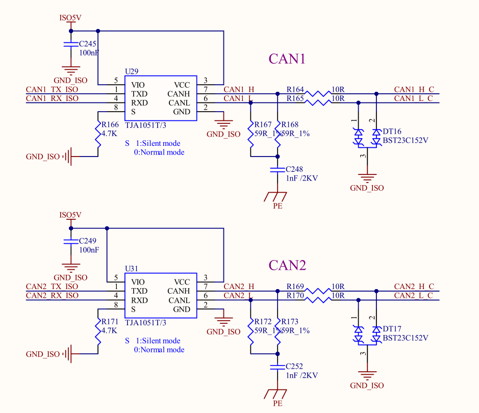Set can service.</p>
<div class="highlight-plain notranslate"><div class="highlight"><pre><span></span>root@OK-MX8MPX-C:~# ip link set can0 up type can bitrate 500000
root@OK-MX8MPX-C:~# ip link set can1 up type can bitrate 500000
</pre></div>
</div>
<p>Set can0 to receive and can1 to send:</p>
<div class="highlight-plain notranslate"><div class="highlight"><pre><span></span>root@OK-MX8MPX-C:~# candump can0 &amp;
[1] 1305
root@OK-MX8MPX-C:~# cangen  can1
  can0  290   [3]  07 7C 1A
  can0  242   [5]  D5 DA F1 05 1B
  can0  46F   [8]  42 12 71 2D 68 14 83 49
  can0  725   [8]  03 E8 6B 02 A5 7A 03 36
  can0  025   [6]  85 55 A3 77 90 32
  can0  5D1   [6]  F3 02 C1 61 D9 67
  can0  078   [0]  
</pre></div>
</div>
<p>Set up the canfd service.</p>
<div class="highlight-plain notranslate"><div class="highlight"><pre><span></span>root@OK-MX8MPX-C:~# ip link set can0 up type can bitrate 500000 dbitrate 2000000 fd on
root@OK-MX8MPX-C:~# ip link set can1 up type can bitrate 500000 dbitrate 2000000 fd on
</pre></div>
</div>
<p>Set can1 to receive and can0 to send:</p>
<div class="highlight-plain notranslate"><div class="highlight"><pre><span></span>root@OK-MX8MPX-C:~# candump can1 &amp;
[1] 1326
root@OK-MX8MPX-C:~# cangen  can0 -f
  can1  1D9  [02]  00 6A
  can1  475  [32]  86 1D 18 43 84 89 76 37 86 1D 18 43 84 89 76 37 86 1D 18 43 84 89 76 37 86 1D 18 43 84 89 76 37
  can1  261  [07]  A9 88 2D 3D BF 8A 31
  can1  606  [06]  37 65 17 0B A2 4D
  can1  0C8  [04]  DF 60 79 3F
  can1  50B  [02]  C4 46
  can1  40A  [16]  71 8F F5 22 51 67 3C 6B 71 8F F5 22 51 67 3C 6B
  can1  29A  [02]  3C 58
  can1  294  [32]  FA DF 4D 02 09 D7 84 31 FA DF 4D 02 09 D7 84 31 FA DF 4D 02 09 D7 84 31 FA DF 4D 02 09 D7 84 31
  can1  16A  [00] 
  can1  537  [06]  8A 4E 51 19 3E 1B
  can1  28D  [01]  E0
</pre></div>
</div>
</section>
<section id="other-common-commands">
<h4>4.20.2 Other Common Commands<a class="headerlink" href="#other-common-commands" title="Link to this heading"></a></h4>
<p>Check can bus status:</p>
<div class="highlight-plain notranslate"><div class="highlight"><pre><span></span>root@OK-MX8MPX-C:~# ip -details -statistics link show can0
4: can0: &lt;NOARP,UP,LOWER_UP,ECHO&gt; mtu 72 qdisc pfifo_fast state UP mode DEFAULT group default qlen 10
    link/can  promiscuity 0  allmulti 0 minmtu 0 maxmtu 0 
    can &lt;FD&gt; state ERROR-ACTIVE (berr-counter tx 0 rx 0) restart-ms 0 
          bitrate 500000 sample-point 0.875
          tq 25 prop-seg 37 phase-seg1 32 phase-seg2 10 sjw 1 brp 1
          flexcan: tseg1 2..96 tseg2 2..32 sjw 1..16 brp 1..1024 brp_inc 1
          dbitrate 2000000 dsample-point 0.750
          dtq 25 dprop-seg 7 dphase-seg1 7 dphase-seg2 5 dsjw 1 dbrp 1
          flexcan: dtseg1 2..39 dtseg2 2..8 dsjw 1..4 dbrp 1..1024 dbrp_inc 1
          clock 40000000 
          re-started bus-errors arbit-lost error-warn error-pass bus-off
          0          0          0          0          0          0         numtxqueues 1 numrxqueues 1 gso_max_size 65536 gso_max_segs 65535 tso_max_size 65536 tso_max_segs 65535 gro_max_size 65536 parentbus platform parentdev 308c0000.can 
    RX:  bytes packets errors dropped  missed   mcast           
           281      31      0       0       0       0 
    TX:  bytes packets errors dropped carrier collsns           
           174      13      0       0       0       0 
</pre></div>
</div>
<p>Set the bus-off reset time of the can bus:</p>
<div class="highlight-plain notranslate"><div class="highlight"><pre><span></span>root@OK-MX8MPX-C:~# ifconfig can0 down
root@OK-MX8MPX-C:~# ip link set can0 type can restart-ms 100
root@OK-MX8MPX-C:~# ip -details -statistics link show can0
4: can0: &lt;NOARP,ECHO&gt; mtu 72 qdisc pfifo_fast state DOWN mode DEFAULT group default qlen 10
    link/can  promiscuity 0  allmulti 0 minmtu 0 maxmtu 0 
    can &lt;FD&gt; state STOPPED (berr-counter tx 0 rx 0) restart-ms 100 
          bitrate 500000 sample-point 0.875
          tq 25 prop-seg 37 phase-seg1 32 phase-seg2 10 sjw 1 brp 1
          flexcan: tseg1 2..96 tseg2 2..32 sjw 1..16 brp 1..1024 brp_inc 1
          dbitrate 2000000 dsample-point 0.750
          dtq 25 dprop-seg 7 dphase-seg1 7 dphase-seg2 5 dsjw 1 dbrp 1
          flexcan: dtseg1 2..39 dtseg2 2..8 dsjw 1..4 dbrp 1..1024 dbrp_inc 1
          clock 40000000 
          re-started bus-errors arbit-lost error-warn error-pass bus-off
          0          0          0          0          0          0         numtxqueues 1 numrxqueues 1 gso_max_size 65536 gso_max_segs 65535 tso_max_size 65536 tso_max_segs 65535 gro_max_size 65536 parentbus platform parentdev 308c0000.can 
    RX:  bytes packets errors dropped  missed   mcast           
           281      31      0       0       0       0 
    TX:  bytes packets errors dropped carrier collsns           
           174      13      0       0       0       0 
</pre></div>
</div>
<p>Set send queue length:</p>
<div class="highlight-plain notranslate"><div class="highlight"><pre><span></span>root@OK-MX8MPX-C:~# ip link set dev can0 txqueuelen 100
root@OK-MX8MPX-C:~# ip -details -statistics link show can0
4: can0: &lt;NOARP,ECHO&gt; mtu 72 qdisc pfifo_fast state DOWN mode DEFAULT group default qlen 100                                              //设置队列长度为100
    link/can  promiscuity 0  allmulti 0 minmtu 0 maxmtu 0 
    can &lt;FD&gt; state STOPPED (berr-counter tx 0 rx 0) restart-ms 100 
          bitrate 500000 sample-point 0.875
          tq 25 prop-seg 37 phase-seg1 32 phase-seg2 10 sjw 1 brp 1
          flexcan: tseg1 2..96 tseg2 2..32 sjw 1..16 brp 1..1024 brp_inc 1
          dbitrate 2000000 dsample-point 0.750
          dtq 25 dprop-seg 7 dphase-seg1 7 dphase-seg2 5 dsjw 1 dbrp 1
          flexcan: dtseg1 2..39 dtseg2 2..8 dsjw 1..4 dbrp 1..1024 dbrp_inc 1
          clock 40000000 
          re-started bus-errors arbit-lost error-warn error-pass bus-off
          0          0          0          0          0          0         numtxqueues 1 numrxqueues 1 gso_max_size 65536 gso_max_segs 65535 tso_max_size 65536 tso_max_segs 65535 gro_max_size 65536 parentbus platform parentdev 308c0000.can 
    RX:  bytes packets errors dropped  missed   mcast           
           281      31      0       0       0       0 
    TX:  bytes packets errors dropped carrier collsns           
           174      13      0       0       0       0 
</pre></div>
</div>
</section>
</section>
<section id="spi-interface-test">
<h3>4.21 SPI Interface Test<a class="headerlink" href="#spi-interface-test" title="Link to this heading"></a></h3>
<p>An SPI interface is led out from the OK-MX8MPX-C carrier board, and the default software configures it as spidev for loopback test. When testing, refer to the schematic to short MOSI and MISO, and then use the commands below to test them separately<br />
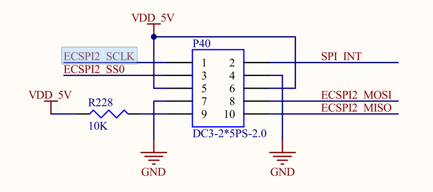<br />
Short circuit SPI2_MOSI and SPI2_MISO.</p>
<div class="highlight-plain notranslate"><div class="highlight"><pre><span></span>root@OK-MX8MPX-C:~# spidev_test -D /dev/spidev1.0
spi mode: 0x0
bits per word: 8
max speed: 500000 Hz (500 kHz)
root@OK-MX8MPX-C:~# fltest_spidev_test -D /dev/spidev1.0
spi mode: 0
bits per word: 8
max speed: 500000 Hz (500 KHz)

FF FF FF FF FF FF 
40 00 00 00 00 95 
FF FF FF FF FF FF 
FF FF FF FF FF FF 
FF FF FF FF FF FF 
DE AD BE EF BA AD 
F0 0D 
</pre></div>
</div>
</section>
<section id="gpio-interface-test">
<h3>4.22 GPIO Interface Test<a class="headerlink" href="#gpio-interface-test" title="Link to this heading"></a></h3>
<section id="gpio-leds-test">
<h4>4.22.1  GPIO-LEDS Test<a class="headerlink" href="#gpio-leds-test" title="Link to this heading"></a></h4>
<p>The OK8MP-C SoM has a controllable blue LED, and the OKT507 SoM blue LED blinks when the board is powered up and started. You can turn off this function. Just modify the device tree file arch/arm64/boot/dts/freescale/OK8MP - C.dts and change the attribute state = “on” of the leds node to “off”.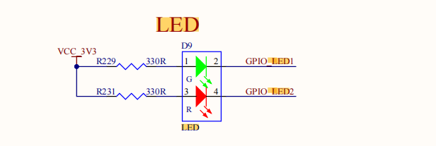</p>
<div class="highlight-plain notranslate"><div class="highlight"><pre><span></span>leds {
        compatible = &quot;gpio-leds&quot;;
        pinctrl-names = &quot;default&quot;;
        pinctrl-0 = &lt;&amp;pinctrl_gpio_led&gt;;

        heartbeat {
            linux,default-trigger = &quot;heartbeat&quot;;
            gpios = &lt;&amp;gpio3 16 GPIO_ACTIVE_HIGH&gt;;
            default-state = &quot;on&quot;; 
        };
        
        led1 {
            linux,default-trigger = &quot;disk-activity&quot;;
            gpios = &lt;&amp;gpio5 8 GPIO_ACTIVE_LOW&gt;;
            default-state = &quot;on&quot;;
        };
        led2 {
            linux,default-trigger = &quot;timer&quot;;  
            led-pattern = &lt;100 500&gt;;
            gpios = &lt;&amp;gpio5 9 GPIO_ACTIVE_LOW&gt;;
            default-state = &quot;on&quot;;
        };
    };
</pre></div>
</div>
<p>The testing method is as follows:</p>
<p>1. Check the trigger conditions.</p>
<p>By default, the trigger condition for led1 is disk - activity, and the trigger condition for led2 is timer. You can check the current trigger conditions through the following commands.</p>
<div class="highlight-plain notranslate"><div class="highlight"><pre><span></span>root@OK-MX8MPX-C:~# cat /sys/class/leds/led1/trigger
none bluetooth-power kbd-scrolllock kbd-numlock kbd-capslock kbd-kanalock kbd-shiftlock kbd-altgrlock kbd-ctrllock kbd-altlock kbd-shiftllock kbd-shiftrlock kbd-ctrlllock kbd-ctrlrlock mmc2 timer [disk-activity] disk-read disk-write ide-disk heartbeat cpu cpu0 cpu1 cpu2 cpu3 default-on panic mmc1 mmc0 tcpm-source-psy-2-0022-online hci0-power

root@OKMX8MPX-C:~# cat /sys/class/leds/led2/trigger
none bluetooth-power kbd-scrolllock kbd-numlock kbd-capslock kbd-kanalock kbd-shiftlock kbd-altgrlock kbd-ctrllock kbd-altlock kbd-shiftllock kbd-shiftrlock kbd-ctrlllock kbd-ctrlrlock mmc2 [timer] disk-activity disk-read disk-write ide-disk heartbeat cpu cpu0 cpu1 cpu2 cpu3 default-on panic mmc1 mmc0 tcpm-source-psy-2-0022-online hci0-power

</pre></div>
</div>
<p>2. User Control</p>
<p>When the led trigger condition is set to none, you can control the on and off of the led lamp through the command:</p>
<div class="highlight-plain notranslate"><div class="highlight"><pre><span></span>root@OK-MX8MPX-C:~# echo none &gt; /sys/class/leds/led1/trigger
root@OK-MX8MPX-C:~# echo none &gt; /sys/class/leds/led2/trigger
root@OK-MX8MPX-C:~# echo 1 &gt; /sys/class/leds/led1/brightness
root@OK-MX8MPX-C:~# echo 0 &gt; /sys/class/leds/led1/brightness
root@OK-MX8MPX-C:~# echo 1 &gt; /sys/class/leds/led2/brightness
root@OK-MX8MPX-C:~# echo 0 &gt; /sys/class/leds/led2/brightness
</pre></div>
</div>
<p>3. Change the LED light to heartbeat light</p>
<div class="highlight-plain notranslate"><div class="highlight"><pre><span></span>root@OK-MX8MPX-C:~# echo heartbeat &gt; /sys/class/leds/led1/trigger
root@OK-MX8MPX-C:~# echo heartbeat &gt; /sys/class/leds/led2/trigger
</pre></div>
</div>
</section>
<section id="gpio-button-test">
<h4>4.22.2  GPIO- BUTTON Test<a class="headerlink" href="#gpio-button-test" title="Link to this heading"></a></h4>
<p>The OK - MX8MPX - C platform uses two GPIO configure buttons GPIO_UP and GPIO_DOWN.</p>
<div class="highlight-plain notranslate"><div class="highlight"><pre><span></span>root@OK-MX8MPX-C:~# evtest 
No device specified, trying to scan all of /dev/input/event*
Available devices:
/dev/input/event0:	30370000.snvs:snvs-powerkey
/dev/input/event1:	gpio-keys
/dev/input/event2:	audio-hdmi HDMI Jack
/dev/input/event3:	Goodix Capacitive TouchScreen
Select the device event number [0-3]: 1
Input driver version is 1.0.1
Input device ID: bus 0x19 vendor 0x1 product 0x1 version 0x100
Input device name: &quot;gpio-keys&quot;
Supported events:
  Event type 0 (EV_SYN)
  Event type 1 (EV_KEY)
    Event code 103 (KEY_UP)
    Event code 108 (KEY_DOWN)
Properties:
Testing ... (interrupt to exit)
Event: time 1727083004.664564, type 1 (EV_KEY), code 103 (KEY_UP), value 1
Event: time 1727083004.664564, -------------- SYN_REPORT ------------
Event: time 1727083004.839470, type 1 (EV_KEY), code 103 (KEY_UP), value 0
Event: time 1727083004.839470, -------------- SYN_REPORT ------------
Event: time 1727083004.916875, type 1 (EV_KEY), code 103 (KEY_UP), value 1
Event: time 1727083004.916875, -------------- SYN_REPORT ------------
Event: time 1727083005.128511, type 1 (EV_KEY), code 103 (KEY_UP), value 0
Event: time 1727083005.128511, -------------- SYN_REPORT ------------
Event: time 1727083005.549751, type 1 (EV_KEY), code 108 (KEY_DOWN), value 1
Event: time 1727083005.549751, -------------- SYN_REPORT ------------
Event: time 1727083005.654654, type 1 (EV_KEY), code 108 (KEY_DOWN), value 0
Event: time 1727083005.654654, -------------- SYN_REPORT ------------
Event: time 1727083005.798788, type 1 (EV_KEY), code 108 (KEY_DOWN), value 1
Event: time 1727083005.798788, -------------- SYN_REPORT ------------
Event: time 1727083005.901483, type 1 (EV_KEY), code 108 (KEY_DOWN), value 0
Event: time 1727083005.901483, -------------- SYN_REPORT ------------
</pre></div>
</div>
</section>
</section>
<section id="qspi-interface-test">
<h3>4.23 QSPI Interface Test<a class="headerlink" href="#qspi-interface-test" title="Link to this heading"></a></h3>
<p>The OK - MX8MPX - C platform is configured with the QSPI driver by default. If there are the chip on the carrier board, you can view the partition information after the system starts.</p>
<div class="highlight-plain notranslate"><div class="highlight"><pre><span></span>root@OK-MX8MPX-C:~# cat /proc/mtd 
dev:    size   erasesize  name
mtd0: 01000000 00010000 &quot;qspiflash&quot;
</pre></div>
</div>
<p>2. There is no file system in the factory QSPI flash chip; you can format the partition into jffs2 format by the following command. (Formatting the NOR Flash is slow.)                                                                 Perform QSPI formatting and read - write tests.</p>
<div class="highlight-plain notranslate"><div class="highlight"><pre><span></span>root@OK-MX8MPX-C:~# flash_erase -j /dev/mtd0 0 0 
Erasing 16384 Kibyte @ 0 -- 100 % complete flash_erase: 0 : Cleanmarker Updated.
flash_erase: 10000 : Cleanmarker Updated.
flash_erase: 20000 : Cleanmarker Updated.
flash_erase: 30000 : Cleanmarker Updated.
flash_erase: 40000 : Cleanmarker Updated.
flash_erase: 50000 : Cleanmarker Updated.
flash_erase: 60000 : Cleanmarker Updated.
flash_erase: 70000 : Cleanmarker Updated.
flash_erase: 80000 : Cleanmarker Updated.
flash_erase: 90000 : Cleanmarker Updated.
flash_erase: a0000 : Cleanmarker Updated.
flash_erase: b0000 : Cleanmarker Updated.
flash_erase: c0000 : Cleanmarker Updated.
flash_erase: d0000 : Cleanmarker Updated.
flash_erase: e0000 : Cleanmarker Updated.
flash_erase: f0000 : Cleanmarker Updated.
...
root@OK-MX8MPX-C:~# mount -t jffs2 /dev/mtdblock0 /mnt/ 
root@OK-MX8MPX-C:~# dd if=/dev/zero of=/dev/mtdblock0 bs=1M count=16 conv=fsync
16+0 records in
16+0 records out
16777216 bytes (17 MB, 16 MiB) copied, 90.6677 s, 185 kB/s
root@OK-MX8MPX-C:~# dd if=/dev/mtdblock0 of=/dev/zero bs=1M count=16
16+0 records in
16+0 records out
16777216 bytes (17 MB, 16 MiB) copied, 1.8449 s, 9.1 MB/s
</pre></div>
</div>
</section>
<section id="sleep-wake-up-test">
<h3>4.24 Sleep Wake-up Test<a class="headerlink" href="#sleep-wake-up-test" title="Link to this heading"></a></h3>
<p>The OK-MX8MPX-C platform supports sleep wake-up, currently supports serial wake-up, supports pwr key wake-up, and supports gpio wake-up<br />
Enable serial port wake-up:</p>
<div class="highlight-plain notranslate"><div class="highlight"><pre><span></span>root@OK-MX8MPX-C:~# echo enabled &gt; /sys/class/tty/ttymxc1/power/wakeup
</pre></div>
</div>
<p>Sleep Test：</p>
<div class="highlight-plain notranslate"><div class="highlight"><pre><span></span>root@OK-MX8MPX-C:~# echo mem &gt; /sys/power/state 
[12842.317424] PM: suspend entry (deep)
[12842.330144] Filesystems sync: 0.009 seconds
[12842.335039] Freezing user space processes
[12842.340999] Freezing user space processes completed (elapsed 0.001 seconds)
[12842.347997] OOM killer disabled.
[12842.351222] Freezing remaining freezable tasks
[12842.356944] Freezing remaining freezable tasks completed (elapsed 0.001 seconds)
[12842.364357] printk: Suspending console(s) (use no_console_suspend to debug)
</pre></div>
</div>
<p>Wake-up Test：</p>
<div class="highlight-plain notranslate"><div class="highlight"><pre><span></span>[  903.218278] wlan: Received disassociation request on mlan0, reason: 3
[  903.218289] wlan: REASON: (Deauth) Sending STA is leaving (or has left) IBSS or ESS
[  903.243426] sd 0:0:0:0: [sda] Synchronizing SCSI cache
[  903.246522] None of the WOWLAN triggers enabled
[  903.246559] Suspend not allowed and retry again
......
[  907.149034] PM: resume devices took 3.372 seconds
[  907.345797] OOM killer enabled.
[  907.348945] Restarting tasks ... done.
[  907.355540] random: crng reseeded on system resumption
[  907.360827] PM: suspend exit
</pre></div>
</div>
</section>
<section id="ipv6-test">
<h3>4.25 IPV6 Test<a class="headerlink" href="#ipv6-test" title="Link to this heading"></a></h3>
<p>The OK-MX8MPX-C platform supports ipv6 on the Ethernet port. The test commands are as follows:</p>
<div class="highlight-plain notranslate"><div class="highlight"><pre><span></span>root@OK-MX8MPX-C:~# ping ipw.cn
PING ipw.cn(2408:8719:3000:a:41::18 (2408:8719:3000:a:41::18)) 56 data bytes
64 bytes from 2408:8719:3000:a:41::18 (2408:8719:3000:a:41::18): icmp_seq=1 ttl=57 time=14.8 ms
64 bytes from 2408:8719:3000:a:41::18 (2408:8719:3000:a:41::18): icmp_seq=2 ttl=57 time=16.0 ms
</pre></div>
</div>
</section>
</section>
<section id="ok-mx8mpx-c-platform-multimedia-test">
<h2>5. OK- MX8MPX-C Platform Multimedia Test<a class="headerlink" href="#ok-mx8mpx-c-platform-multimedia-test" title="Link to this heading"></a></h2>
<p>Some application layer software for audio and video on the OK-MX8MPX-C platform uses Gstreamer, which supports hardware codecs. All examples in this section based on the GStreamer command line form. If users need a player with an interface, they can also use qt’s multimedia classes, which also support codecs, see the Qt Tests chapter.<br />
The OK-MX8MPX-C platform has an internal video processing unit, the VPU, which supports hard codecs for video in the following formats:<br />
Video Decoding: H264, H265, VP8, VP9，maximum support 1080p 60fps<br />
Video Encoding： H264, H265, up to 1080p 60fps</p>
<p>OK-MX8MPX-C platform hardware codec parameter table:</p>
<table class="docutils align-default">
<thead>
<tr class="row-odd"><th class="head"><p>Video Decoder</p></th>
<th class="head"><p>Format</p></th>
<th class="head"><p>Profile</p></th>
<th class="head"><p>Resolution</p></th>
<th class="head"><p>Frame rate</p></th>
<th class="head"><p>Bitrate</p></th>
</tr>
</thead>
<tbody>
<tr class="row-even"><td><p></p></td>
<td><p>HEVC</p></td>
<td><p>main/main 10</p></td>
<td><p>1920x1080</p></td>
<td><p>60 fps</p></td>
<td><p>160Mbps</p></td>
</tr>
<tr class="row-odd"><td><p></p></td>
<td><p>H.264</p></td>
<td><p>HP/MP/BP</p></td>
<td><p>1920x1080</p></td>
<td><p>60 fps</p></td>
<td><p>60Mbps</p></td>
</tr>
<tr class="row-even"><td><p></p></td>
<td><p>VP9</p></td>
<td><p>Profile 0/2</p></td>
<td><p>1920x1080</p></td>
<td><p>60 fps</p></td>
<td><p>100Mbps</p></td>
</tr>
<tr class="row-odd"><td><p></p></td>
<td><p>VP8</p></td>
<td><p>-</p></td>
<td><p>1920x1080</p></td>
<td><p>60 fps</p></td>
<td><p>60Mbps</p></td>
</tr>
<tr class="row-even"><td><p>Video Encoder</p></td>
<td><p>H.264</p></td>
<td><p>HP/MP/BP</p></td>
<td><p>1920x1080</p></td>
<td><p>60 fps</p></td>
<td><p>60Mbps</p></td>
</tr>
<tr class="row-odd"><td><p></p></td>
<td><p>H.265</p></td>
<td><p>-</p></td>
<td><p>1920x1080</p></td>
<td><p>60 fps</p></td>
<td><p>60Mbps</p></td>
</tr>
</tbody>
</table>
<section id="audio-and-video-playback">
<h3>5.1 Audio and Video Playback<a class="headerlink" href="#audio-and-video-playback" title="Link to this heading"></a></h3>
<section id="playing-audio-and-video-with-gst-play">
<h4>5.1.1 Playing Audio and Video with Gst-play<a class="headerlink" href="#playing-audio-and-video-with-gst-play" title="Link to this heading"></a></h4>
<p>Gplay is an audio/video player based on GStreamer that can automatically select the right plugin for audio/video play according to the hardware, and it is easy to run.</p>
<p>Set the default playback audio device first.</p>
<div class="highlight-plain notranslate"><div class="highlight"><pre><span></span>root@OK-MX8MPX-C:~# pacmd set-default-sink 2
</pre></div>
</div>
<div class="highlight-plain notranslate"><div class="highlight"><pre><span></span>root@OK-MX8MPX-C:~# gst-play-1.0 /home/forlinx/video/1080p_60fps_h264-30S.mp4
</pre></div>
</div>
</section>
<section id="playing-video-with-gst-launch">
<h4>5.1.2 Playing Video with Gst-launch<a class="headerlink" href="#playing-video-with-gst-launch" title="Link to this heading"></a></h4>
<div class="highlight-plain notranslate"><div class="highlight"><pre><span></span>root@OK-MX8MPX-C:~# gst-launch-1.0 filesrc location=/home/forlinx/video/1080p_60fps_h264-30S.mp4 typefind=true ! \
video/quicktime ! aiurdemux ! queue max-size-time=0 ! vpudec ! imxvideoconvert_g2d ! \
video/x-raw, format=RGB16, width=1024, height=600 ! waylandsink
</pre></div>
</div>
</section>
<section id="play-ing-audio-with-gst-launch">
<h4>5.1.3 Play ing Audio with Gst-launch<a class="headerlink" href="#play-ing-audio-with-gst-launch" title="Link to this heading"></a></h4>
<div class="highlight-plain notranslate"><div class="highlight"><pre><span></span>root@OK-MX8MPX-C:~# gst-launch-1.0 filesrc location=/home/forlinx/audio/30s.mp3 ! id3demux ! queue ! \
mpegaudioparse ! decodebin ! audioconvert ! audioresample ! pulsesink
</pre></div>
</div>
</section>
<section id="playing-video-and-audio-with-gst-launch">
<h4>5.1.4 Playing Video and Audio with gst-launch<a class="headerlink" href="#playing-video-and-audio-with-gst-launch" title="Link to this heading"></a></h4>
<div class="highlight-plain notranslate"><div class="highlight"><pre><span></span>root@OK-MX8MPX-C:~#gst-launch-1.0 filesrc location=/home/forlinx/video/1080p_60fps_h264-30S.mp4 typefind=true ! \
video/quicktime ! aiurdemux name=demux demux. ! queue max-size-buffers=0 \
max-size-time=0 ! vpudec !  imxvideoconvert_g2d ! video/x-raw, format=RGB16, width=1024, \
height=600 ! waylandsink demux. ! queue max-size-buffers=0 max-size-time=0 \
! decodebin ! audioconvert ! audioresample ! pulsesink
</pre></div>
</div>
</section>
</section>
<section id="video-hardware-encoding">
<h3>5.2 Video Hardware Encoding<a class="headerlink" href="#video-hardware-encoding" title="Link to this heading"></a></h3>
<p>OK-MX8MPX-C supports video encoding in H264, H265 formats up to 1080p 60fps.</p>
<section id="video-hardware-encoding-h-264">
<h4>5.2.1 Video Hardware Encoding H.264<a class="headerlink" href="#video-hardware-encoding-h-264" title="Link to this heading"></a></h4>
<p>Encode YUV420 format video to H264 format video:</p>
<div class="highlight-plain notranslate"><div class="highlight"><pre><span></span>root@OK-MX8MPX-C:~# gst-launch-1.0 filesrc location=/home/forlinx/yuv/yuv420_p352x288.yuv ! videoparse format=2 \
width=352 height=288 ! video/x-raw,width=352,height=288 ! vpuenc_h264 ! queue ! \
h264parse ! qtmux ! filesink location=yuv2h264.mp4
</pre></div>
</div>
<p>Play encoded H264 video:</p>
<div class="highlight-plain notranslate"><div class="highlight"><pre><span></span>root@OK-MX8MPX-C:~# gst-play-1.0 yuv2h264.mp4 
</pre></div>
</div>
</section>
<section id="video-hardware-encoding-h-265">
<h4>5.2.2 Video Hardware Encoding H.265<a class="headerlink" href="#video-hardware-encoding-h-265" title="Link to this heading"></a></h4>
<p>Encode YUV420 video to H.265 format video:</p>
<div class="highlight-plain notranslate"><div class="highlight"><pre><span></span>root@OK-MX8MPX-C:~# gst-launch-1.0 filesrc location=/home/forlinx/yuv/yuv420_p352x288.yuv ! videoparse format=2 width=352 height=288 ! video/x-raw,width=352,height=288 ! vpuenc_hevc ! queue ! h265parse ! qtmux ! filesink location=test.mp4 
</pre></div>
</div>
<p>Play encoded H265 video:</p>
<div class="highlight-plain notranslate"><div class="highlight"><pre><span></span>root@OK-MX8MPX-C:~# gst-launch-1.0 filesrc location=test.mp4 ! qtdemux ! queue ! vpudec ! waylandsink 
</pre></div>
</div>
</section>
</section>
<section id="video-hardware-decoding">
<h3>5.3 Video Hardware Decoding<a class="headerlink" href="#video-hardware-decoding" title="Link to this heading"></a></h3>
<p>OK-MX8MPX-C supports H264, H265, VP8, VP9 video hard decoding up to 1080p 60fps.<br />
OK-MX8MPX-C uses the vpudec component for video hard decoding. Its output formats are: NV12, I420, YV12.</p>
<section id="decoding-and-playing-h-264-format-video">
<h4>5.3.1 Decoding and Playing H.264 Format Video<a class="headerlink" href="#decoding-and-playing-h-264-format-video" title="Link to this heading"></a></h4>
<div class="highlight-plain notranslate"><div class="highlight"><pre><span></span>root@OK-MX8MPX-C:~# gst-launch-1.0 filesrc location=/home/forlinx/video/1080p_60fps_h264-30S.mp4 typefind=true ! video/quicktime ! aiurdemux ! queue max-size-time=0 ! vpudec ! imxvideoconvert_g2d ! video/x-raw, format=RGB16, width=1024, height=600 ! waylandsink 
</pre></div>
</div>
</section>
<section id="decoding-and-playing-h264-format-video-with-audio">
<h4>5.3.2 Decoding and Playing H264 Format Video with Audio<a class="headerlink" href="#decoding-and-playing-h264-format-video-with-audio" title="Link to this heading"></a></h4>
<div class="highlight-plain notranslate"><div class="highlight"><pre><span></span>root@OK-MX8MPX-C:~# gst-launch-1.0 filesrc location=/home/forlinx/video/1080p_60fps_h264-30S.mp4 typefind=true ! video/quicktime ! aiurdemux name=demux demux. ! queue max-size-buffers=0 max-size-time=0 ! vpudec ! imxvideoconvert_g2d ! video/x-raw, format=RGB16, width=1024, height=600 ! waylandsink demux. ! queue max-size-buffers=0 max-size-time=0 ! decodebin ! audioconvert ! audioresample ! pulsesink 
</pre></div>
</div>
</section>
<section id="decoding-and-playing-h-265-format-video">
<h4>5.3.3 Decoding and Playing H.265 Format Video<a class="headerlink" href="#decoding-and-playing-h-265-format-video" title="Link to this heading"></a></h4>
<div class="highlight-plain notranslate"><div class="highlight"><pre><span></span>root@OK-MX8MPX-C:~# gst-launch-1.0 filesrc location=/home/forlinx/video/1080p_30fps_h265-30S.mp4 typefind=true ! video/quicktime ! aiurdemux ! queue max-size-time=0 ! vpudec ! imxvideoconvert_g2d ! video/x-raw, format=RGB16, width=1024, height=600 ! waylandsink 
</pre></div>
</div>
</section>
<section id="decoding-and-playing-h265-format-video-with-audio">
<h4>5.3.4 Decoding and Playing H265 Format Video with Audio<a class="headerlink" href="#decoding-and-playing-h265-format-video-with-audio" title="Link to this heading"></a></h4>
<div class="highlight-plain notranslate"><div class="highlight"><pre><span></span>root@OK-MX8MPX-C:~# gst-launch-1.0 filesrc location=/home/forlinx/video/1080p_30fps_h265-30S.mp4 typefind=true ! video/quicktime ! aiurdemux name=demux demux. ! queue max-size-buffers=0 max-size-time=0 ! vpudec ! imxvideoconvert_g2d ! video/x-raw, format=RGB16, width=1024, height=600 ! waylandsink demux. ! queue max-size-buffers=0 max-size-time=0 ! decodebin ! audioconvert ! audioresample ! pulsesink 
</pre></div>
</div>
</section>
<section id="decoding-and-playing-vp9-format-video">
<h4>5.3.5 Decoding and Playing VP9 Format Video<a class="headerlink" href="#decoding-and-playing-vp9-format-video" title="Link to this heading"></a></h4>
<div class="highlight-plain notranslate"><div class="highlight"><pre><span></span>root@OK-MX8MPX-C:~# gst-launch-1.0 filesrc location=/home/forlinx/video/1080p_30fps_vp9.webm typefind=true ! video/x-matroska ! aiurdemux ! queue max-size-time=0 ! vpudec ! imxvideoconvert_g2d ! video/x-raw, format=RGB16,width=1024, height=600 ! waylandsink 
</pre></div>
</div>
</section>
<section id="decoding-and-playing-vp9-format-video-with-audio">
<h4>5.3.6 Decoding and Playing VP9 Format Video with Audio<a class="headerlink" href="#decoding-and-playing-vp9-format-video-with-audio" title="Link to this heading"></a></h4>
<div class="highlight-plain notranslate"><div class="highlight"><pre><span></span>root@OK-MX8MPX-C:~# gst-launch-1.0 filesrc location=/home/forlinx/video/1080p_30fps_vp9.webm typefind=true ! video/x-matroska ! aiurdemux name=demux demux. ! queue max-size-buffers=0 max-size-time=0 ! vpudec ! imxvideoconvert_g2d ! video/x-raw, format=RGB16,width=1024, height=600 ! waylandsink demux. ! queue max-size-buffers=0 max-size-time=0 ! decodebin ! audioconvert ! audioresample ! pulsesink 
</pre></div>
</div>
</section>
<section id="decoding-and-playing-vp8-format-video">
<h4>5.3.7 Decoding and Playing VP8 Format Video<a class="headerlink" href="#decoding-and-playing-vp8-format-video" title="Link to this heading"></a></h4>
<div class="highlight-plain notranslate"><div class="highlight"><pre><span></span>root@OK-MX8MPX-C:~# gst-launch-1.0 filesrc location=/home/forlinx/video/1080p_60fps_vp8-30S.webm typefind=true ! video/x-matroska ! aiurdemux ! queue max-size-time=0 ! vpudec ! imxvideoconvert_g2d ! video/x-raw, format=RGB16,width=1024, height=600 ! waylandsink 
</pre></div>
</div>
<p>Gst-launch-1.0 does not currently support playing OPUS audio.</p>
</section>
</section>
<section id="video-conversion-color-space-conversion-and-rotation-scaling">
<h3>5.4 Video Conversion (Color Space Conversion and Rotation Scaling)<a class="headerlink" href="#video-conversion-color-space-conversion-and-rotation-scaling" title="Link to this heading"></a></h3>
<p>The OK-MX8MPX-C provides a video conversion component: imxvideoconvert_g2d, which supports the following features:</p>
<ul class="simple">
<li><p><strong>Video color space conversion</strong></p></li>
<li><p><strong>Video scaling</strong></p></li>
<li><p><strong>Video rotation</strong></p></li>
</ul>
<p><strong>Note: When converting the video color space, imxvideoconvert_g2d only supports converting videos in other formats to RGB - format videos.</strong></p>
<ol class="arabic simple">
<li><p>Video color space conversion<br />
Convert the built-in NV12 format video source of gstreamer to RGB16 format video:</p></li>
</ol>
<div class="highlight-plain notranslate"><div class="highlight"><pre><span></span>root@OK-MX8MPX-C:~# gst-launch-1.0 videotestsrc ! video/x-raw,format=NV12 ! imxvideoconvert_g2d ! video/x-raw,format=RGB16 ! waylandsink 
</pre></div>
</div>
<ol class="arabic simple" start="2">
<li><p>After decoding the h264 video, use imxvideoconvert _ g2d to convert it to RGB16 video:</p></li>
</ol>
<div class="highlight-plain notranslate"><div class="highlight"><pre><span></span>root@OK-MX8MPX-C:~# gst-launch-1.0 filesrc location=/home/forlinx/video/1080p_60fps_h264-30S.mp4 ! qtdemux ! queue ! h264parse ! vpudec ! imxvideoconvert_g2d ! video/x-raw, format=RGB16, width=1920, height=1080 ! waylandsink 
</pre></div>
</div>
<ol class="arabic simple" start="3">
<li><p>Video scaling</p></li>
</ol>
<p>Convert the video source in NV12 format with a resolution of 1280×720 provided by GStreamer to a video in RGB16 format with a resolution of 640×480:</p>
<div class="highlight-plain notranslate"><div class="highlight"><pre><span></span>root@OK-MX8MPX-C:~# gst-launch-1.0 videotestsrc ! video/x-raw,format=NV12,width=1280,height=720 ! imxvideoconvert_g2d ! video/x-raw, format=RGB16, width=640, height=480 ! waylandsink 
</pre></div>
</div>
<ol class="arabic simple" start="4">
<li><p>Video rotation<br />
Rotate the built-in video source of gstreamer by 90 degrees:</p></li>
</ol>
<div class="highlight-plain notranslate"><div class="highlight"><pre><span></span>root@OK-MX8MPX-C:~# gst-launch-1.0 videotestsrc ! imxvideoconvert_g2d rotation=1 ! waylandsink 
</pre></div>
</div>
<ol class="arabic simple" start="5">
<li><p>Rotate the gstreamer’s own video source by 180 degrees:</p></li>
</ol>
<div class="highlight-plain notranslate"><div class="highlight"><pre><span></span>root@OK-MX8MPX-C:~# gst-launch-1.0 videotestsrc ! imxvideoconvert_g2d rotation=2 ! waylandsink 
</pre></div>
</div>
</section>
<section id="video-compositing">
<h3>5.5 Video Compositing<a class="headerlink" href="#video-compositing" title="Link to this heading"></a></h3>
<p>OK-MX8MPX-C uses the imxcompositor _ g2d component for video compositing. It uses hardware acceleration for video compositing. It can only output video in RGB format.</p>
<ol class="arabic simple">
<li><p>Combine two gstreamer’s own video sources into one:</p></li>
</ol>
<div class="highlight-plain notranslate"><div class="highlight"><pre><span></span>root@OK-MX8MPX-C:~#gst-launch-1.0 imxcompositor_g2d name=comp sink_1::xpos=160 sink_1::ypos=480 ! glimagesink videotestsrc ! comp.sink_0 videotestsrc ! comp.sink_1
</pre></div>
</div>
<ol class="arabic simple" start="2">
<li><p>Combine two gstreamer’s own video sources into one, using a red background color:</p></li>
</ol>
<div class="highlight-plain notranslate"><div class="highlight"><pre><span></span>root@OK-MX8MPX-C:~# gst-launch-1.0 imxcompositor_g2d background=0x000000FF name=comp sink_1::xpos=160 sink_1::ypos=480 ! glimagesink videotestsrc ! comp.sink_0 videotestsrc ! comp.sink_1
</pre></div>
</div>
<ol class="arabic simple" start="3">
<li><p>Combine two gstreamer’s own video sources into one, using CSC, resize, and rotate:</p></li>
</ol>
<div class="highlight-plain notranslate"><div class="highlight"><pre><span></span>root@OK-MX8MPX-C:~# gst-launch-1.0 imxcompositor_g2d name=comp sink_0::width=640 sink_0::height=480 sink_1::xpos=160 sink_1::ypos=500 sink_1::width=640 sink_1::height=480 sink_1::rotate=1 ! video/x-raw,format=RGB16 ! glimagesink videotestsrc ! video/x-raw,format=NV12,width=320,height=240 ! comp.sink_0 videotestsrc ! video/x-raw,format=I420,width=320,height=240 ! comp.sink_1
</pre></div>
</div>
<ol class="arabic simple" start="4">
<li><p>Combine three gstreamer native video sources into one, using CSC, resize, rotate, alpha, z-order, and maintaining the aspect ratio:</p></li>
</ol>
<div class="highlight-plain notranslate"><div class="highlight"><pre><span></span>root@OK-MX8MPX-C:~# gst-launch-1.0 imxcompositor_g2d name=comp sink_0::width=640 sink_0::height=480 sink_0::alpha=0.5 sink_0::z-order=3 sink_1::alpha=0.8 sink_1::z-order=2 sink_1::xpos=160 sink_1::ypos=120 sink_1::width=640 sink_1::height=480 sink_1::rotate=1 sink_2::xpos=320 sink_2::ypos=240 sink_2::width=500 sink_2::height=500 sink_2::alpha=0.6 sink_2::keep-ratio=true ! video/x-raw,format=RGB16 ! glimagesink videotestsrc ! video/x-raw,format=NV12,width=320,height=240 ! comp.sink_0 videotestsrc ! video/x-raw,format=I420,width=320,height=240 ! comp.sink_1 videotestsrc ! video/x-raw,format=RGB16,width=320,height=240 ! comp.sink_2
</pre></div>
</div>
</section>
<section id="npu-test">
<h3>5.6 NPU Test<a class="headerlink" href="#npu-test" title="Link to this heading"></a></h3>
<p>The OK-MX8MPX-C development board is equipped with an iMX8MPLUS processor, which integrates an NPU with a computing power of up to 2.3 TOPS inside the CPU.</p>
<ol class="arabic simple">
<li><p>TensorFlow Lite testing<br />
Demo recognizes information such as people, animals, plants, and places in the input image (grace_copper. bp).</p></li>
</ol>
<p>Run the demo on the CPU.</p>
<div class="highlight-plain notranslate"><div class="highlight"><pre><span></span>root@OK-MX8MPX-C:~# cd /usr/bin/tensorflow-lite-2.11.1/examples/
root@OK-MX8MPX-C:/usr/bin/tensorflow-lite-2.11.1/examples# ./label_image -m mobilenet_v1_1.0_224_quant.tflite -i grace_hopper.bmp -l labels.txt
INFO: Loaded model mobilenet_v1_1.0_224_quant.tflite
INFO: resolved reporter
INFO: invoked
INFO: average time: 44.656 ms
INFO: 0.764706: 653 military uniform
INFO: 0.121569: 907 Windsor tie
INFO: 0.0156863: 458 bow tie
INFO: 0.0117647: 466 bulletproof vest
INFO: 0.00784314: 835 suit
</pre></div>
</div>
<p>NPU test demo</p>
<div class="highlight-plain notranslate"><div class="highlight"><pre><span></span>root@OK-MX8MPX-C:/usr/bin/tensorflow-lite-2.11.1/examples#./label_image -m mobilenet_v1_1.0_224_quant.tflite  -l grace_hopper.bmp  -l labels.txt --external_delegate_path=/usr/lib/libvx_delegate.so
INFO: Loaded model mobilenet_v1_1.0_224_quant.tflite
INFO: resolved reporter
Vx delegate: allowed_cache_mode set to 0.
Vx delegate: device num set to 0.
Vx delegate: allowed_builtin_code set to 0.
Vx delegate: error_during_init set to 0.
Vx delegate: error_during_prepare set to 0.
Vx delegate: error_during_invoke set to 0.
EXTERNAL delegate created.
INFO: Applied EXTERNAL delegate.
W [HandleLayoutInfer:291]Op 162: default layout inference pass.
INFO: invoked
INFO: average time: 2.801 ms
INFO: 0.768627: 653 military uniform
INFO: 0.105882: 907 Windsor tie
INFO: 0.0196078: 458 bow tie
INFO: 0.0117647: 466 bulletproof vest
INFO: 0.00784314: 835 suit
</pre></div>
</div>
<p>In both runs, the recognized classifications were military uniforms, Windsor ties, bow ties, and suits. When running on the CPU, the average time consumption was 44.656 ms. When running on the NPU, the average time consumption was 2.801 ms.</p>
</section>
<section id="id6">
<h3>5.7 Camera Test<a class="headerlink" href="#id6" title="Link to this heading"></a></h3>
<p>The OK-MX8MPX-C supports the OV13850 MIPI camera as well as the UVC camera. First to test the UVC camera, here to Logitech C270 process test, the USB camera will be inserted into the development board, will automatically install uvc driver.</p>
<section id="usb-camera-test">
<h4>5.7.1 USB Camera Test<a class="headerlink" href="#usb-camera-test" title="Link to this heading"></a></h4>
<p>Check whether the UVC Camera device node is identified, as shown in the following figure/dev/video4 node, and check the format and resolution supported by the camera:</p>
<div class="highlight-plain notranslate"><div class="highlight"><pre><span></span>root@OK-MX8MPX-C:~# v4l2-ctl --list-devices
 ():
        /dev/v4l-subdev0
        /dev/v4l-subdev1

 ():
        /dev/v4l-subdev2
        /dev/v4l-subdev3

VIV (platform:viv0):
        /dev/video2

VIV (platform:viv1):
        /dev/video3

vsi_v4l2dec (platform:vsi_v4l2dec):
        /dev/video1

vsi_v4l2enc (platform:vsi_v4l2enc):
        /dev/video0

viv_media (platform:vvcam-video.0):
        /dev/media0

UVC Camera (046d:0825) (usb-xhci-hcd.1.auto-1.1):
        /dev/video4
        /dev/video5
        /dev/media1
root@OK-MX8MPX-C:~# 

root@OK-MX8MPX-C:~# v4l2-ctl --list-formats-ext -d /dev/video4
ioctl: VIDIOC_ENUM_FMT
        Type: Video Capture

        [0]: &#39;YUYV&#39; (YUYV 4:2:2)
                Size: Discrete 640x480
                        Interval: Discrete 0.033s (30.000 fps)
                        Interval: Discrete 0.040s (25.000 fps)
                        Interval: Discrete 0.050s (20.000 fps)
                        Interval: Discrete 0.067s (15.000 fps)
                        Interval: Discrete 0.100s (10.000 fps)
                        Interval: Discrete 0.200s (5.000 fps)
                Size: Discrete 160x120
                        Interval: Discrete 0.033s (30.000 fps)
                        Interval: Discrete 0.040s (25.000 fps)
                        Interval: Discrete 0.050s (20.000 fps)
                        Interval: Discrete 0.067s (15.000 fps)
                        Interval: Discrete 0.100s (10.000 fps)
                        Interval: Discrete 0.200s (5.000 fps)
                Size: Discrete 176x144
.....
</pre></div>
</div>
<ol class="arabic simple">
<li><p>Camera preview:</p></li>
</ol>
<div class="highlight-plain notranslate"><div class="highlight"><pre><span></span>root@OK-MX8MPX-C:~# gst-launch-1.0 v4l2src device=/dev/video4 io-mode=2 ! video/x-raw, format=YUY2, width=640, height=480,framerate=30/1 ! imxvideoconvert_g2d ! queue ! video/x-raw, format=RGB16, width=640, height=480 ! waylandsink
[  608.974755] enter isp_mi_stop
[  609.010524] enter isp_mi_stop
[  609.250587] usb 3-1.1: reset high-speed USB device number 3 using xhci-hcd
Setting pipeline to PAUSED ...
Pipeline is live and does not need PREROLL ...
Pipeline is PREROLLED ...
Setting pipeline to PLAYING ...
New clock: GstSystemClock
Redistribute latency...
^Chandling interrupt.
Interrupt: Stopping pipeline ...
Execution ended after 0:00:06.775960375
Setting pipeline to NULL ...
Total showed frames (141), playing for (0:00:06.775873375), fps (20.809).
Freeing pipeline ...
root@OK-MX8MPX-C:~# 
</pre></div>
</div>
<p>You can see a preview of the camera on the screen. Press CTRL + C at the terminal to stop the preview                                            2. Camera to take photos</p>
<div class="highlight-plain notranslate"><div class="highlight"><pre><span></span>root@OK-MX8MPX-C:~# gst-launch-1.0 v4l2src device=/dev/video4 io-mode=2 num-buffers=10 ! video/x-raw,format=YUY2,width=640,height=480,framerate=30/1 ! jpegenc ! filesink location=usb.jpeg
[  512.810753] enter isp_mi_stop
[  512.842836] enter isp_mi_stop
[  513.090557] usb 3-1.1: reset high-speed USB device number 3 using xhci-hcd
Setting pipeline to PAUSED ...
Pipeline is live and does not need PREROLL ...
Pipeline is PREROLLED ...
Setting pipeline to PLAYING ...
New clock: GstSystemClock
Redistribute latency...
Got EOS from element &quot;pipeline0&quot;.
Execution ended after 0:00:02.380040000
Setting pipeline to NULL ...
Freeing pipeline ...
root@OK-MX8MPX-C:~# 
</pre></div>
</div>
<p>After running the relevant commands, a file named usb.jpeg will be generated in the current directory. Copy it to a Windows system and open this file to view the taken photo.                                                                                                      3. Camera recording</p>
<div class="highlight-plain notranslate"><div class="highlight"><pre><span></span>root@OK-MX8MPX-C:~# gst-launch-1.0 v4l2src device=/dev/video4 io-mode=2 ! video/x-raw, format=YUY2, width=640, height=480,framerate=30/1 ! imxvideoconvert_g2d ! tee name=t ! queue ! video/x-raw, format=RGB16, width=640, height=480 ! filesink location=uvc.rgb16 t. ! queue ! waylandsink
[  215.478761] enter isp_mi_stop
[  215.510841] enter isp_mi_stop
[  215.746567] usb 3-1.1: reset high-speed USB device number 3 using xhci-hcd
[  216.258773] enter isp_mi_stop
[  216.290540] enter isp_mi_stop
Setting pipeline to PAUSED ...
Pipeline is live and does not need PREROLL ...
Pipeline is PREROLLED ...
Setting pipeline to PLAYING ...
New clock: GstSystemClock
Redistribute latency...
Redistribute latency...
^Chandling interrupt.
Interrupt: Stopping pipeline ...
Execution ended after 0:00:08.409098000
Setting pipeline to NULL ...
Total showed frames (189), playing for (0:00:08.408987875), fps (22.476).
Freeing pipeline ...
root@OK-MX8MPX-C:~# 
</pre></div>
</div>
<p>After using the above command, turn on the camera preview and recording. After a period of time, press Ctrl + C in the terminal to stop the recording. A file named uvc.rgb16 will be generated in the current directory. Then copy uvc.rgb16 to a Windows system and use yuv.exe to open and play it (the resolution is 640×480).</p>
</section>
<section id="ov5645-camera-test">
<h4>5.7.2 OV5645 Camera Test<a class="headerlink" href="#ov5645-camera-test" title="Link to this heading"></a></h4>
<p>Check whether the OV5645 device node is identified, as shown in the following figure/dev/video2 node, and check the format and resolution supported by the camera:</p>
<div class="highlight-plain notranslate"><div class="highlight"><pre><span></span>root@OK-MX8MPX-C:~# v4l2-ctl --list-devices
 ():
        /dev/v4l-subdev0
        /dev/v4l-subdev3
        /dev/v4l-subdev4

 ():
        /dev/v4l-subdev1
        /dev/v4l-subdev5
        /dev/v4l-subdev6

FSL Capture Media Device (platform:32c00000.bus:camera):
        /dev/media0

mxc-isi-cap (platform:32e00000.isi:cap_devic):
        /dev/video2

VIV (platform:viv0):
        /dev/video3

VIV (platform:viv1):
        /dev/video4

vsi_v4l2dec (platform:vsi_v4l2dec):
        /dev/video1

vsi_v4l2enc (platform:vsi_v4l2enc):
        /dev/video0

viv_media (platform:vvcam-video.0):
        /dev/media1
root@OK-MX8MPX-C:~# 
root@OK-MX8MPX-C:~# v4l2-ctl --list-formats-ext -d /dev/video2
ioctl: VIDIOC_ENUM_FMT
        Type: Video Capture Multiplanar

        [0]: &#39;RGBP&#39; (16-bit RGB 5-6-5)
                Size: Discrete 1280x960
                Size: Discrete 1920x1080
                Size: Discrete 2592x1944
        [1]: &#39;RGB3&#39; (24-bit RGB 8-8-8)
                Size: Discrete 1280x960
                Size: Discrete 1920x1080
                Size: Discrete 2592x1944
        [2]: &#39;BGR3&#39; (24-bit BGR 8-8-8)
                Size: Discrete 1280x960
                Size: Discrete 1920x1080
                Size: Discrete 2592x1944
        [3]: &#39;YUYV&#39; (YUYV 4:2:2)
                Size: Discrete 1280x960
                Size: Discrete 1920x1080
                Size: Discrete 2592x1944
        [4]: &#39;YUV4&#39; (32-bit A/XYUV 8-8-8-8)
                Size: Discrete 1280x960
                Size: Discrete 1920x1080
                Size: Discrete 2592x1944
.....
</pre></div>
</div>
<ol class="arabic simple">
<li><p>Camera preview:</p></li>
</ol>
<div class="highlight-plain notranslate"><div class="highlight"><pre><span></span>root@OK-MX8MPX-C:~# gst-launch-1.0 v4l2src device=/dev/video2 io-mode=4 ! video/x-raw, format=YUY2, width=1280, height=960,framerate=30/1 ! imxvideoconvert_g2d ! queue ! video/x-raw, format=RGB16, width=1024, height=600 ! waylandsink
[  888.282312] enter isp_mi_stop
[  888.314419] enter isp_mi_stop
[  888.382960] mxc-mipi-csi2.1: mipi_csis_imx8mp_phy_reset, No remote pad found!
Setting pipeline to PAUSED ...
Pipeline is live and does not need PREROLL ...
Pipeline is PREROLLED ...
Setting pipeline to PLAYING ...
New clock: GstSystemClock
[  889.142655] bypass csc
[  889.145029] input fmt YUV4
[  889.147811] output fmt YUYV
Redistribute latency...
0:00:01.8 / 99:99:99.
root@OK-MX8MPX-C:~# 
</pre></div>
</div>
<p>You can see a preview of the camera on the screen. Press CTRL + C at the terminal to stop the preview                                            2. Camera to take photos</p>
<div class="highlight-plain notranslate"><div class="highlight"><pre><span></span>root@OK-MX8MPX-C:~# gst-launch-1.0 v4l2src device=/dev/video2 io-mode=4 num-buffers=10 ! video/x-raw,format=YUY2,width=1280,height=960,framerate=30/1 ! jpegenc ! filesink location=5645.jpeg
[ 1120.986895] enter isp_mi_stop
[ 1121.018716] enter isp_mi_stop
[ 1121.086983] mxc-mipi-csi2.1: mipi_csis_imx8mp_phy_reset, No remote pad found!
Setting pipeline to PAUSED ...
Pipeline is live and does not need PREROLL ...
Pipeline is PREROLLED ...
Setting pipeline to PLAYING ...
New clock: GstSystemClock
[ 1121.605557] bypass csc
[ 1121.607943] input fmt YUV4
[ 1121.610721] output fmt YUYV
Redistribute latency...
Got EOS from element &quot;pipeline0&quot;.
Execution ended after 0:00:03.473213875
Setting pipeline to NULL ...
Freeing pipeline ...
root@OK-MX8MPX-C:~# 
</pre></div>
</div>
<p>After running the relevant commands, a file named 5645.jpeg will be generated in the current directory. Copy it to a Windows system and open this file to view the taken photo. 3. Camera to record</p>
<div class="highlight-plain notranslate"><div class="highlight"><pre><span></span>root@OK-MX8MPX-C:~# gst-launch-1.0 v4l2src device=/dev/video2 io-mode=4 ! video/x-raw, format=YUY2, width=1280, height=960,framerate=30/1 ! imxvideoconvert_g2d ! tee name=t ! queue ! video/x-raw, format=RGB16, width=1280, height=720 ! filesink location=5645_video.rgb16 t. ! queue ! waylandsink 
[ 1301.182929] enter isp_mi_stop
[ 1301.215002] enter isp_mi_stop
[ 1301.283265] mxc-mipi-csi2.1: mipi_csis_imx8mp_phy_reset, No remote pad found!
Setting pipeline to PAUSED ...
Pipeline is live and does not need PREROLL ...
Pipeline is PREROLLED ...
Setting pipeline to PLAYING ...
New clock: GstSystemClock
[ 1301.917274] bypass csc
[ 1301.919714] input fmt YUV4
[ 1301.922460] output fmt YUYV
Redistribute latency...
Redistribute latency...
^Chandling interrupt.
Interrupt: Stopping pipeline ...
Execution ended after 0:00:02.858870250
Setting pipeline to NULL ...
Total showed frames (70), playing for (0:00:02.858791875), fps (24.486).
Freeing pipeline ...
root@OK-MX8MPX-C:~# 
</pre></div>
</div>
<p>After using the above command, turn on the camera preview and recording. After a while, you can press Ctrl+C in the terminal to stop the recording. This will generate a file named “5645_video.rgb16” in the current directory. Next, copy the “5645_video.rgb16” file to your Windows system and use “yuv.exe” to open and play it (with a resolution of 1280x720).</p>
</section>
<section id="basler-camera-test">
<h4>5.7.3 BASLER Camera Test<a class="headerlink" href="#basler-camera-test" title="Link to this heading"></a></h4>
<p>Note: The BASLER CAMERA is a MIPI camera without an ISP.</p>
<p>Check if the BASLER device node is recognized; check the supported formats and resolutions of the camera.</p>
<div class="highlight-plain notranslate"><div class="highlight"><pre><span></span>root@OK-MX8MPX-C:~# v4l2-ctl --list-devices
  ():
        /dev/v4l-subdev0
        /dev/v4l-subdev3
        /dev/v4l-subdev4

 ():
        /dev/v4l-subdev1
        /dev/v4l-subdev5
        /dev/v4l-subdev6

 (csi1):
        /dev/v4l-subdev2

FSL Capture Media Device (platform:32c00000.bus:camera):
        /dev/media0

mxc-isi-cap (platform:32e02000.isi:cap_devic):
        /dev/video3

VIV (platform:viv0):
        /dev/video2

VIV (platform:viv1):
        /dev/video4

vsi_v4l2dec (platform:vsi_v4l2dec):
        /dev/video1

vsi_v4l2enc (platform:vsi_v4l2enc):
        /dev/video0

viv_media (platform:vvcam-video.0):
        /dev/media1
root@OK-MX8MPX-C:~# 
root@OK-MX8MPX-C:~# v4l2-ctl --list-formats-ext -d /dev/video4
ioctl: VIDIOC_ENUM_FMT
        Type: Video Capture

        [0]: &#39;YUYV&#39; (YUYV 4:2:2)
                Size: Stepwise 176x144 - 4096x3072 with step 16/8
        [1]: &#39;NV12&#39; (Y/UV 4:2:0)
                Size: Stepwise 176x144 - 4096x3072 with step 16/8
        [2]: &#39;NV16&#39; (Y/UV 4:2:2)
                Size: Stepwise 176x144 - 4096x3072 with step 16/8
        [3]: &#39;BA12&#39; (12-bit Bayer GRGR/BGBG)
                Size: Stepwise 176x144 - 4096x3072 with step 16/8
.....        
</pre></div>
</div>
<ol class="arabic simple">
<li><p>Camera preview:</p></li>
</ol>
<div class="highlight-plain notranslate"><div class="highlight"><pre><span></span>root@OK-MX8MPX-C:~# gst-launch-1.0 v4l2src device=/dev/video4 ! waylandsink
Setting pipeline to PAUSED ...
Pipeline is live and does not need PREROLL ...
Pipeline is PREROLLED ...
Setting pipeline to PLAYING ...
New clock: GstSystemClock
[  878.071124] enter isp_mi_stop
[  878.701872] enter isp_s_comp
[  878.704811] enter isp_s_comp
[  878.707719] enter isp_s_comp
[  878.727743] enter wdr3_hw_init
[  878.730830] wdr3 res: 1920 1080 
[  878.803248] enter isp_set_stream 1
[  878.818830] enter isp_mi_start
Redistribute latency...
0:00:12.8 / 99:99:99.
root@OK-MX8MPX-C:~#     
</pre></div>
</div>
<p>You can see a preview of the camera on the screen. Press CTRL + C at the terminal to stop the preview                                            2. Camera to take photos</p>
<div class="highlight-plain notranslate"><div class="highlight"><pre><span></span>root@OK-MX8MPX-C:~# gst-launch-1.0 v4l2src device=/dev/video4 io-mode=4 num-buffers=10 ! video/x-raw,format=YUY2,width=1280,height=960,framerate=30/1 ! jpegenc ! filesink location=pic.jpeg
[ 1120.986895] enter isp_mi_stop
[ 1121.018716] enter isp_mi_stop
[ 1121.086983] mxc-mipi-csi2.1: mipi_csis_imx8mp_phy_reset, No remote pad found!
Setting pipeline to PAUSED ...
Pipeline is live and does not need PREROLL ...
Pipeline is PREROLLED ...
Setting pipeline to PLAYING ...
New clock: GstSystemClock
[ 1121.605557] bypass csc
[ 1121.607943] input fmt YUV4
[ 1121.610721] output fmt YUYV
Redistribute latency...
Got EOS from element &quot;pipeline0&quot;.
Execution ended after 0:00:03.473213875
Setting pipeline to NULL ...
Freeing pipeline ...
root@OK-MX8MPX-C:~# 
</pre></div>
</div>
<p>After running the relevant commands, a file named pic.jpeg will be generated in the current directory. Copy it to a Windows system and open this file to view the taken photo.  3. Camera to record:</p>
<div class="highlight-plain notranslate"><div class="highlight"><pre><span></span>root@OK-MX8MPX-C:~# gst-launch-1.0 v4l2src device=/dev/video4 io-mode=4 ! video/x-raw, format=YUY2, width=1280, height=960,framerate=30/1 ! imxvideoconvert_g2d ! tee name=t ! queue ! video/x-raw, format=RGB16, width=1280, height=720 ! filesink location=basler_video.rgb16 t. ! queue ! waylandsink 
Setting pipeline to PAUSED ...
Pipeline is live and does not need PREROLL ...
Pipeline is PREROLLED ...
Setting pipeline to [ 1634.870239] mxc-mipi-csi2.1: mipi_csis_get_fmt, call get_fmt of subdev failed!
PLAYING ...
New clock: GstSystemClock
[ 1634.884360] mxc-mipi-csi2.0: mipi_csis_imx8mp_phy_reset, No remote pad found!
[ 1634.906835] enter isp_mi_stop
[ 1635.045872] mxc-mipi-csi2.0: mipi_csis_imx8mp_phy_reset, No remote pad found!
[ 1635.063430] enter isp_mi_stop
[ 1635.395107] enter isp_mi_stop
[ 1636.290352] enter isp_s_comp
[ 1636.293275] enter isp_s_comp
[ 1636.296179] enter isp_s_comp
[ 1636.315757] enter wdr3_hw_init
[ 1636.318847] wdr3 res: 1920 1080 
[ 1636.375021] enter isp_set_stream 1
[ 1636.390353] enter isp_mi_start
Redistribute latency...
Redistribute latency...
^Chandling interrupt.
Interrupt: Stopping pipeline ...
Execution ended after 0:00:11.595195500
Setting pipeline to NULL ...
[ 1646.471376] enter isp_set_stream 0
Total showed frames (560), playing for (0:00:11.595152125), fps (48.296).
[ 1646.501389] enter isp_mi_stop
[ 1646.668158] enter isp_mi_stop
Freeing pipeline .....
root@OK-MX8MPX-C:~# 
</pre></div>
</div>
<p>After using the above command, turn on the camera preview and recording. After a while, you can press Ctrl+C in the terminal to stop the recording. This will generate a file named “basler_video.rgb16” in the current directory. Then copy the basler _ video. rgb16 to Windows and open it with yuv.exe to play (resolution is 1280 * 720).</p>
</section>
</section>
</section>
<section id="ok-mx8mpx-c-system-settings">
<h2>6. OK-MX8MPX-C System Settings<a class="headerlink" href="#ok-mx8mpx-c-system-settings" title="Link to this heading"></a></h2>
<section id="updating-logo">
<h3>6.1 Updating Logo<a class="headerlink" href="#updating-logo" title="Link to this heading"></a></h3>
<p>OK8MP can display LOGO images on LCD or LVDS in the u-boot stage. If you need to replace the LOGO, please replace the following files:<br />
OK-MX8-linux-sdk/images/logo-1024x600.bmp<br />
OK-MX8-linux-sdk/images/logo-1280x800.bmp<br />
The LCD requires a 24 - bit BMP - format image with a resolution of 1024×600.<br />
The LVDS requires a 24 - bit BMP - format image with a resolution of 1280×800.</p>
<p>You can also replace by yourself in the system:<br />
/run/media/Boot-mmcblk2p1/logo-1024x600.bmp<br />
run/media/Boot-mmcblk2p1/logo-1280x800.bmp</p>
</section>
<section id="self-starting-program-settings">
<h3>6.2 Self-starting Program Settings<a class="headerlink" href="#self-starting-program-settings" title="Link to this heading"></a></h3>
<p>Forlinx has preset the boot script/etc/autorun. sh through systemd, and this script will run automatically after booting. Users can modify this script to implement the application boot self-start function.<br />
Users can also set up a new systemd service to realize the automatic startup function of the application.</p>
</section>
<section id="system-submission-version-check">
<h3>6.3 System Submission Version Check<a class="headerlink" href="#system-submission-version-check" title="Link to this heading"></a></h3>
<p>In the system, you can view the latest submission version number of the system through the /etc/forlinx file.</p>
</section>
</section>
<section id="system-flashing">
<h2>7. System Flashing<a class="headerlink" href="#system-flashing" title="Link to this heading"></a></h2>
<p>The OK-MX8MPX-C development board currently supports USB flashing via the UUU tool, and also supports flashing via a TF card. The corresponding flashing tools are provided in the user package.</p>
<section id="image-required-for-flashing">
<h3>7.1 Image Required for Flashing<a class="headerlink" href="#image-required-for-flashing" title="Link to this heading"></a></h3>
<p>Image path: User materials\Software materials\2 - Images and source code\0 - Images</p>
<table class="docutils align-default">
<thead>
<tr class="row-odd"><th class="head"><p>Image Name</p></th>
<th class="head"><p>Image Description</p></th>
</tr>
</thead>
<tbody>
<tr class="row-even"><td><p>OK8MP-BOOT.bin</p></td>
<td><p>uboot</p></td>
</tr>
<tr class="row-odd"><td><p>okmx8mp-c-linux-fs.sdcard.a*</p></td>
<td><p>The entire file system in eMMC, the file obtained after split.</p></td>
</tr>
<tr class="row-even"><td><p>ramdisk.img.gz</p></td>
<td><p>Virtual file system for TF card flashing</p></td>
</tr>
<tr class="row-odd"><td><p>Image</p></td>
<td><p>Kernel image</p></td>
</tr>
<tr class="row-even"><td><p>OK8MP-C.dtb</p></td>
<td><p>Device tree</p></td>
</tr>
</tbody>
</table>
<p>The specific image files are as shown in the figure.</p>
<p></p>
<p>**Note: **</p>
<p><strong>Since the OK - MX8MPX - C development board has three different specifications of DDR configurations, please rename the provided uboot firmware OK8MP - BOOT - *.bin corresponding to the DDR configuration to OK8MP - BOOT.bin according to the actual on - board usage before proceeding with the subsequent programming work. The ramdisk.img has been packaged by Forlinx and contains the built - in programming script update.sh. The file system initialization process will execute this script by default. Users can also make their own ramdsik through tools such as busybox.<br />
The okmx8mp - c - linux - fs.sdcard is compressed and split into okmx8mp - c - linux - fs.sdcard.a. The purpose is to avoid bugs caused by some file systems not supporting overly large files. By merging okmx8mp - c - linux - fs.sdcard.a*, you can get the programming firmware okmx8mp - c - linux - fs.sdcard.<br />
okmx8mp-linux-fs.sdcard is the complete file system from the eMMC. The previously mentioned okmx8mp - c - linux - fs.sdcard is the merged file, and okmx8mp - c - linux - fs.sdcard.a is the split file. Please pay attention to the differences.<br />
The reference commands for merging okmx8mp-linux-fs. sdcard. a * under Linux system are as follows:</strong></p>
<div class="highlight-plain notranslate"><div class="highlight"><pre><span></span>root@5d90dd71f33a:~# cat okmx8mp-c-linux-fs.sdcard.a* &gt; okmx8mp-c-linux-fs.sdcard
</pre></div>
</div>
</section>
<section id="flashing-uboot-via-usb">
<h3>7.2 Flashing Uboot via USB<a class="headerlink" href="#flashing-uboot-via-usb" title="Link to this heading"></a></h3>
<section id="flashing-uboot-to-emmc">
<h4>7.2.1 Flashing Uboot to eMMC<a class="headerlink" href="#flashing-uboot-to-emmc" title="Link to this heading"></a></h4>
<p>Connect the TypeC - USB port of the development board to the PC using a USB cable, set the startup DIP switch of the development board to USB Serial Download, and then power on the development board.<br />
The PC side runs the cmd program with administrator privileges. In the cmd program, use uuu.exe to flash U-Boot to the eMMC. The command is as follows:</p>
<div class="highlight-plain notranslate"><div class="highlight"><pre><span></span>D:\work\OK-MX8MPX-C\image&gt;uuu.exe -b emmc OK8MP-BOOT.bin
uuu (Universal Update Utility) for nxp imx chips -- libuuu_1.5.165-0-g7347a80
Success 1    Failure 0

1:334    8/ 8 [Done                                  ] FB: done   
</pre></div>
</div>
<p>It prompts that the boot programming is completed. The uboot is programmed into the boot0 partition of the eMMC.</p>
</section>
<section id="flashing-uboot-to-sd">
<h4>7.2.2 Flashing Uboot to SD<a class="headerlink" href="#flashing-uboot-to-sd" title="Link to this heading"></a></h4>
<p>Connect the TypeC - USB port of the development board to the PC using a USB cable, set the startup DIP switch of the development board to USB Serial Download, and then power on the development board..<br />
The PC side runs the cmd program with administrator privileges. In the cmd program, use uuu.exe to flash U-Boot to the eMMC. The command is as follows:</p>
<div class="highlight-plain notranslate"><div class="highlight"><pre><span></span>D:\work\OK-MX8MPX-C\image&gt;uuu.exe -b sd OK8MP-BOOT.bin
uuu (Universal Update Utility) for nxp imx chips -- libuuu_1.5.165-0-g7347a80
Success 1    Failure 0

1:334    8/ 8 [Done                                  ] FB: done   
</pre></div>
</div>
<p>It prompts that the boot programming is completed. The uboot is programmed to the 32KB offset of the SD card.</p>
</section>
<section id="flashing-uboot-to-qspiflash">
<h4>7.2.3 Flashing Uboot to QSPIFLASH<a class="headerlink" href="#flashing-uboot-to-qspiflash" title="Link to this heading"></a></h4>
<p>Connect the TypeC - USB port of the development board to the PC using a USB cable, set the startup DIP switch of the development board to USB Serial Download, and then power on the development board..<br />
The PC side runs the cmd program with administrator privileges. In the cmd program, use uuu.exe to flash U-Boot to the eMMC. The command is as follows:</p>
<div class="highlight-plain notranslate"><div class="highlight"><pre><span></span>D:\work\OK-MX8MPX-C\image&gt;uuu.exe -b qspi OK8MP-BOOT.bin
uuu (Universal Update Utility) for nxp imx chips -- libuuu_1.5.165-0-g7347a80
Success 1    Failure 0

1:334    8/ 8 [Done                                  ] FB: done    
</pre></div>
</div>
<p>It prompts that the boot programming is completed. The uboot is programmed to the 4KB offset of the QSPI flash card.</p>
</section>
</section>
<section id="flashing-the-linux-system-via-usb">
<h3>7.3 Flashing the Linux System via USB<a class="headerlink" href="#flashing-the-linux-system-via-usb" title="Link to this heading"></a></h3>
<p>Connect the TypeC - USB port of the development board to the PC using a USB cable, set the startup DIP switch of the development board to USB Serial Download, and then power on the development board..<br />
The PC side runs the cmd program with administrator privileges. In the cmd program, use uuu.exe to flash Uboot and file system to the eMMC. The command is as follows:</p>
<div class="highlight-plain notranslate"><div class="highlight"><pre><span></span>D:\work\OK-MX8MPX-C\image&gt;uuu.exe -b emmc_all OK8MP-BOOT.bin okmx8mp-c-linux-fs-vm.sdcard
uuu (Universal Update Utility) for nxp imx chips -- libuuu_1.5.165-0-g7347a80
Success 1    Failure 0

1:334    8/ 8 [Done                                  ] FB: done   
</pre></div>
</div>
<p>It prompts that the programming is completed.                                             Serial port printing:</p>
<div class="highlight-plain notranslate"><div class="highlight"><pre><span></span>........ wrote 10589184 bytes to &#39;all&#39;
(NULL udevice *): request 00000000fbf20940 was not queued to ep1in-bulk
(NULL udevice *): request 00000000fbf20940 was not queued to ep1in-bulk
Starting download of 2163768 bytes
(NULL udevice *): request 00000000fbf20940 was not queued to ep1in-bulk
................
downloading of 2163768 bytes finished
</pre></div>
</div>
</section>
<section id="flashing-uboot-to-spiflash">
<h3>7.4 Flashing Uboot to SPIFLASH<a class="headerlink" href="#flashing-uboot-to-spiflash" title="Link to this heading"></a></h3>
<p>Copy the uboot image to the /home/root/ directory of the development board, and execute the following command to program the uboot image OK8MP - BOOT.bin into the spiflash.</p>
<div class="highlight-plain notranslate"><div class="highlight"><pre><span></span>root@OK-MX8MPX-C:~# dmesg  | grep spi                         
[    1.455837] spi-nor spi0.0: w25q128fw (16384 Kbytes)
[    1.461007] 1 fixed-partitions partitions found on MTD device 30bb0000.spi
[    1.467899] Creating 1 MTD partitions on &quot;30bb0000.spi&quot;:
[    1.473221] 0x000000000000-0x000001000000 : &quot;qspiflash&quot;
[    3.245186] spi-nor spi1.0: w25q128fw (16384 Kbytes)
[    3.250336] 1 fixed-partitions partitions found on MTD device spi1.0
[    3.256699] Creating 1 MTD partitions on &quot;spi1.0&quot;:
[    3.261498] 0x000000000000-0x000001000000 : &quot;spiflash&quot;
root@OK-MX8MPX-C:~# dd if=OK8MP-BOOT.bin of=/dev/mtdblock1
4225+1 records in
4225+1 records out
2163632 bytes (2.2 MB, 2.1 MiB) copied, 16.7952 s, 129 kB/s
</pre></div>
</div>
<p>The uboot is flashed to spiflash, and no offset.</p>
</section>
<section id="flashing-via-tf-card">
<h3>7.5 Flashing via TF Card<a class="headerlink" href="#flashing-via-tf-card" title="Link to this heading"></a></h3>
<section id="making-tf-card">
<h4>7.5.1 Making TF Card<a class="headerlink" href="#making-tf-card" title="Link to this heading"></a></h4>
<section id="making-steps">
<h5>7.5.1.1 Making Steps<a class="headerlink" href="#making-steps" title="Link to this heading"></a></h5>
<p>Two steps are required to make a flashing card:</p>
<ol class="arabic simple">
<li><p>Re-partition the TF card, reserve enough space for uboot image and environment variables in front of the 0 partition, reserve enough space for flashing image in the 0th partition, and format the 0 partition into vfat format;</p></li>
<li><p>Program the bootloader image to the position with an offset of 32KB on the TF card. Forlinx provides a script tools/mksdboot.sh for making a programming card. You can also refer to the above steps and scripts to make your own flashing cards.</p></li>
</ol>
</section>
<section id="instructions-for-using-the-mksdboot-sh-script">
<h5>7.5.1.2 Instructions for Using the “mksdboot.sh” Script<a class="headerlink" href="#instructions-for-using-the-mksdboot-sh-script" title="Link to this heading"></a></h5>
<p><strong>Note: Since the OK - MX8MPX - C development board has three different specifications of DDR configurations, please rename the provided uboot firmware (OK8MP - BOOT - *.bin) to OK8MP - BOOT.bin according to the actual on - board usage, and then copy it to the TF card for programming.</strong></p>
<p>Place OK8MP - BOOT.bin and mksdboot.sh in the same directory.</p>
<p>The usage of mksdboot.sh is as follows:</p>
<div class="highlight-plain notranslate"><div class="highlight"><pre><span></span>root@OK-MX8MPX-C:~# ./mksdboot.sh /dev/mmcblk1 ./OK8MP-BOOT.bin
Usage: mksdboot.sh &lt;device&gt; [&lt;bin&gt;]
    device:  the path of Udisk or TF, such as /dev/sda, /dev/mmcblk1
    bin:     the path of flash.bin, default is &#39;../images/flash.bin&#39;

    example:
        mksdboot.sh /dev/sda
        mksdboot.sh /dev/mmcblk1 ./test.bin
root@OK-MX8MPX-C:~# ./mksdboot.sh /dev/mmcblk1 
DEVICE=/dev/mmcblk1
IMG_UBOOT=OK8MP-BOOT.bin
10+0 records in
10+0 records out
1048576000 bytes (1.0 GB, 1000 MiB) copied, 100.529 s, 10.4 MB/s

Welcome to fdisk (util-linux 2.39.2).
......
mkfs.fat 4.2 (2021-01-31)
1606+0 records in[ 2112.724865]  mmcblk1: p1

1606+0 records out
1644544 bytes (1.6 MB, 1.6 MiB) copied, 0.428018 s, 3.8 MB/s
end !!!
</pre></div>
</div>
</section>
</section>
<section id="copying-the-images-to-be-programmed-to-the-tf-card">
<h4>7.5.2 Copying the Images to be Programmed to the TF Card<a class="headerlink" href="#copying-the-images-to-be-programmed-to-the-tf-card" title="Link to this heading"></a></h4>
<p>ramdisk.img.gz is already packaged by Forlinx, with a built-in flash script update.sh, which will be executed by default during the file system initialisation process. You can also make your own ramdsik through tools such as busybox.</p>
<p>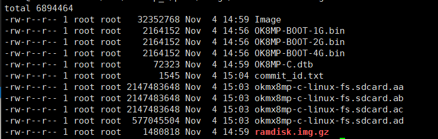</p>
<p>Copy files such as amdisk.img, okmx8mp-c-linux-fs.sdcard.a*, Image, OK-8MP-C.dtb, OK8MP-BOOT.bin to the tf card</p>
<div class="highlight-plain notranslate"><div class="highlight"><pre><span></span>update start...
......

2+1 records out
1361018880 bytes (1.3GB) copied, 33.916110 seconds, 38.3MB/s
flash /mnt/sd/okmx8mp-c-linux-fs-vm.sdcard.ad, done
&gt;&gt;&gt;&gt;&gt;&gt;&gt;&gt;&gt;&gt;&gt;&gt;&gt;&gt; Flashing successfully completed &lt;&lt;&lt;&lt;&lt;&lt;&lt;&lt;&lt;&lt;&lt;&lt;&lt;&lt;
[Done] 135s
Please power off and boot from emmc.
</pre></div>
</div>
<p>After flashing is completed, turn off the power of the development board, pull out the TF card, and adjust the DIP switch to start the emmc. Then power on to boot from the emmc.</p>
</section>
</section>
</section>
<section id="mcuxpresso-sdk-development-board">
<h2>8. MCUXpresso_SDK Development Board<a class="headerlink" href="#mcuxpresso-sdk-development-board" title="Link to this heading"></a></h2>
<p>The OK-MX8MPX-C platform has an internal Cortex M7 core and supports development using the MCUXpresso SDK.<br />
The MCUXpresso SDK is a collection of microcontroller software support that includes peripheral drivers, RPMSG multicore communication, and FreeRTOS. Check the SDK API documentation for the functions and structures it implements.<br />
The Forlinx OK8MP - SDK package has integrated the MCUXpresso SDK package and cross - compilation tools.</p>
<p>Path: OK - MX8 - linux - sdk/freertos_8mp</p>
<section id="compiling-the-sample-program-with-the-arm-gcc-compiler">
<h3>8.1 Compiling the Sample Program with the ARM GCC Compiler<a class="headerlink" href="#compiling-the-sample-program-with-the-arm-gcc-compiler" title="Link to this heading"></a></h3>
<p>The MCUXpresso SDK is compiled using the GCC tool under Linux environment. The following is an example of the hello_world demo to illustrate the compilation process.<br />
First set up a Linux compilation environment:</p>
<ol class="arabic simple">
<li><p>Install cmake.</p></li>
</ol>
<div class="highlight-plain notranslate"><div class="highlight"><pre><span></span>sudo apt-get install cmake
cmake --version
</pre></div>
</div>
<p>Note: The version of cmake must be greater than 3.0.x to work properly. If your version of is lower than 3.0, you can follow these steps to update.</p>
<div class="highlight-plain notranslate"><div class="highlight"><pre><span></span>cd /tmp
wget https://cmake.org/files/v3.11/cmake-3.11.0-rc4-Linux-x86_64.tar.gz
tar zxvf cmake-3.11.0-rc4-Linux-x86_64.tar.gz
sudo mv cmake-3.11.0-rc4-Linux-x86_64 /opt/cmake-3.11
sudo ln -sf /opt/cmake-3.11/bin/* /usr/bin/
cmake --version
</pre></div>
</div>
<ol class="arabic simple" start="2">
<li><p>Set the FreeRTOS environment variables.</p></li>
</ol>
<div class="highlight-plain notranslate"><div class="highlight"><pre><span></span>cd OK-MX8-linux-sdk
export ARMGCC_DIR=/mnt/OK-MX8-linux-sdk/freertos_8mp/tools/gcc-arm-none-eabi-10-2020-q4-major
export PATH=$PATH:$ARMGCC_DIR
</pre></div>
</div>
<ol class="arabic simple" start="3">
<li><p>Compilation</p></li>
</ol>
<div class="highlight-plain notranslate"><div class="highlight"><pre><span></span>cd /mnt/OK-MX8-linux-sdk/freertos_8mp/boards/evkmimx8mp/demo_apps/hello_world/armgcc
./build_release.sh
</pre></div>
</div>
<p>The compilation output is as follows:<br />
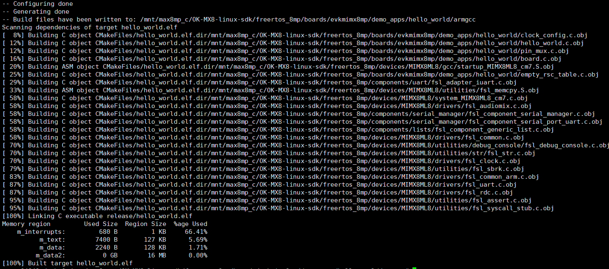</p>
<p>The hello_world.bin file generated by compilation is in the release directory.<br />
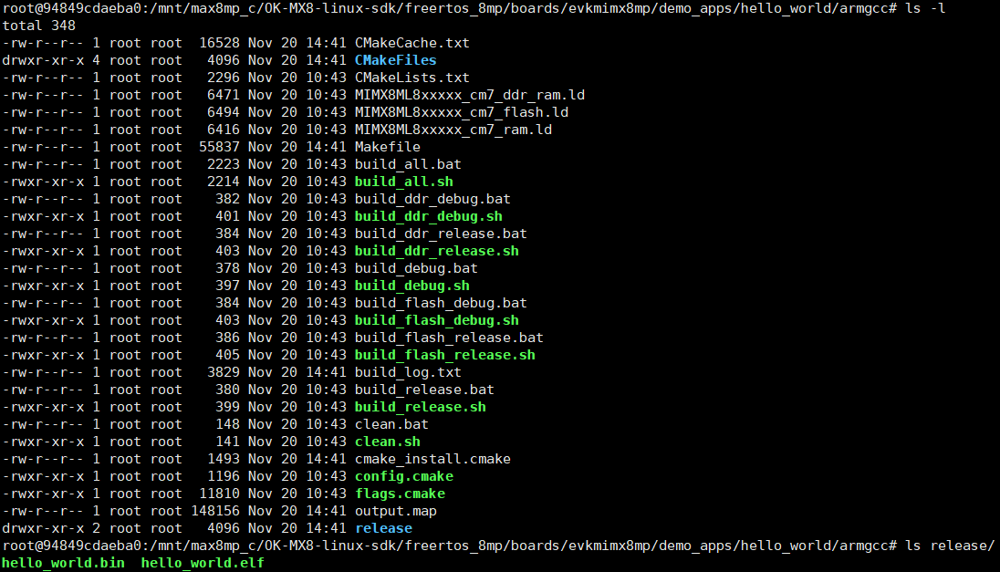</p>
<p>Note: You can also compile other versions here, such as build_ddr_release.sh. There will be differences when running. Refer to the next section.</p>
</section>
<section id="running-the-sample-program-with-uboot">
<h3>8.2 Running the Sample Program with Uboot<a class="headerlink" href="#running-the-sample-program-with-uboot" title="Link to this heading"></a></h3>
<p>You can enter the u-boot command line during the startup of the development board and use u-boot commands to load the hello_world.bin file into the M7 processor and run it. Below is an example using the hello_world.bin program to explain the running process.</p>
<ol class="arabic simple">
<li><p>Serial port connection                                                                                        Since the hello_world program uses uart4 as the debugging serial port output, please connect uart4 to the USB port of the PC using a USB to TTL converter according to the schematic diagram before starting the test. And use the serial port debugging tool to open the corresponding COM port, baud rate and other parameters set and OK8MP Debug port parameters are the same.</p></li>
</ol>
<p>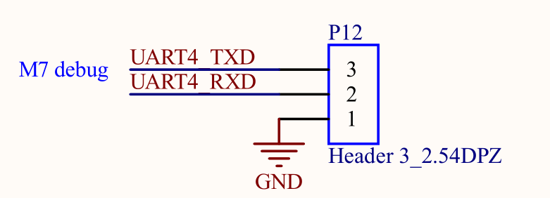</p>
<ol class="arabic simple" start="2">
<li><p>Open the M7 debugging serial port.<br />
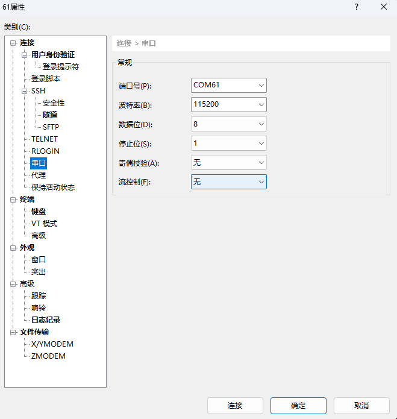</p></li>
<li><p>Copy the compiled hello_world.bin to the root directory of the SD card (Fat32). Insert the SD card into the development board, restart the development board, press the space bar, select 1, and enter the u - boot command line.<br />
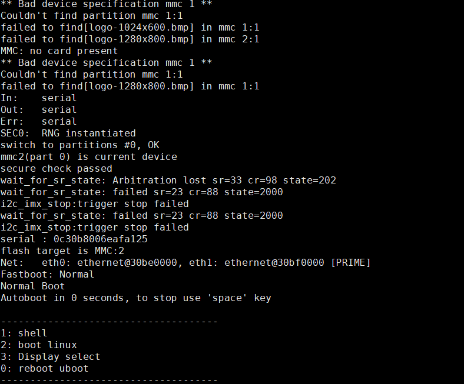</p></li>
<li><p>Execute the following commands in the u - boot command line:<br />
For the bin files of the debug/release versions, which run on the TCM, execute the following commands (the mmc loading address may need to be adjusted according to the actual partition situation of the TF card):</p></li>
</ol>
<div class="highlight-plain notranslate"><div class="highlight"><pre><span></span>u-boot=&gt;fatload mmc 1:1 0x48000000 hello_world.bin;cp.b 0x48000000 0x7e0000 20000;
u-boot=&gt;bootaux 0x7e0000
</pre></div>
</div>
<p>The output of uart4 is as follows:<br />
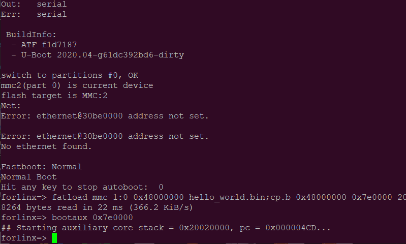</p>
<p>The output of the hello_world program running on the M7 is as follows:<br />
</p>
</section>
<section id="heterogeneous-multi-core-communication-test">
<h3>8.3 Heterogeneous Multi-core Communication Test<a class="headerlink" href="#heterogeneous-multi-core-communication-test" title="Link to this heading"></a></h3>
<p>Cortex A53 communicates with Cortex M7 using RPMsg (Remote Processor Messaging).<br />
RPMsg is a virtio-based message-passing bus that allows kernel drivers to communicate with remote processors available on the system, such as the Cortex M7. The following figure shows a multi - core communication architecture:<br />
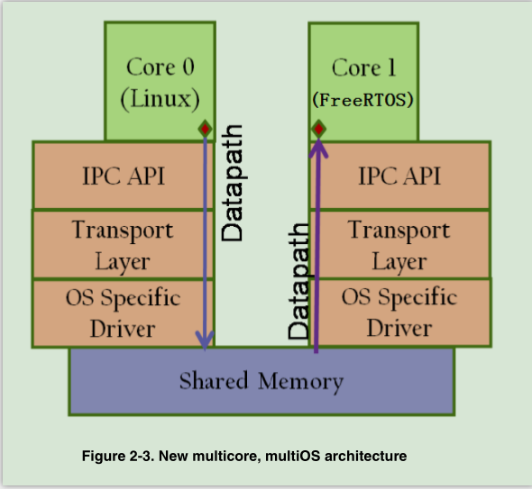</p>
<p>The MCUXpresso SDK for OK8MP includes a demo called “rpmsg_lite_pingpong_rtos”. This demo implements data transfer between the Cortex A53 and the Cortex M7 using shared memory. Additionally, it runs a FreeRTOS task on the Cortex M7.<br />
Implement this function on the Cortex A53 side through a kernel module. The code is located at: drivers/rpmsg/imx_rpmsg_pingpong.c.</p>
<p>The following illustrates multicore communication by compiling and running it.</p>
<ol class="arabic simple">
<li><p>Compile the rpmsg example program.</p></li>
</ol>
<div class="highlight-plain notranslate"><div class="highlight"><pre><span></span>cd /mnt/OK-MX8-linux-sdk/freertos_8mp/boards/evkmimx8mp/multicore_examples/rpmsg_lite_pingpong_rtos/linux_remote/armgcc
./build_release.sh
</pre></div>
</div>
<p>The compilation output is as follows:<br />
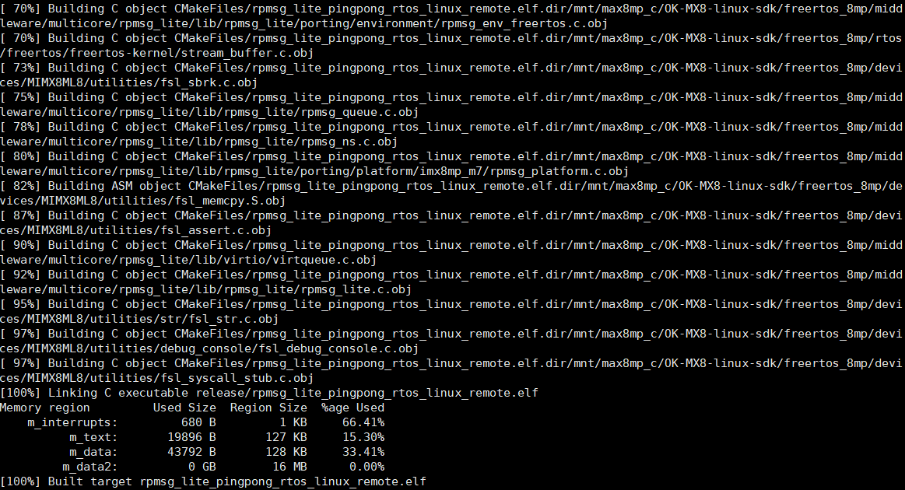</p>
<p>The rpmsg_lite_pingpong_rtos_linux_remote.bin file generated by compilation is in the release directory.</p>
<ol class="arabic simple" start="2">
<li><p>Replace the dtb file. <strong>To make the example program run normally, the dtb file needs to be replaced.</strong></p></li>
</ol>
<p>Forlinx has provided a dtb file for the demo, which is located at: OK - MX8 - linux - kernel/arch/arm64/boot/dts/freescale/imx8mp - evk - rpmsg.dtb</p>
<p>Copy the imx8mp - evk - rpmsg.dtb file to the root directory of the SD card (Fat32).</p>
<ol class="arabic simple" start="3">
<li><p>Replace and load the dtb file under the uboot command line:<br />
Before replacing the dtb file, please first copy the dtb file to the SD card or other devices (the mmc loading address may need to be adjusted according to the actual partition situation of the TF card), and continue to use the Image file in the mmc:</p></li>
</ol>
<div class="highlight-plain notranslate"><div class="highlight"><pre><span></span>u-boot=&gt;fatload mmc 1:1 0x43000000 imx8mp-evk-rpmsg.dtb
u-boot=&gt;fatload mmc 2:1 0x40400000 Image
</pre></div>
</div>
<p>4. Copy the bin file rpmsg_lite_pingpong_rtos_linux_remote.bin compiled in 1 to the root directory of the SD card (Fat32) as well, and load it in the uboot command line (the mmc loading address may need to be adjusted according to the actual partition situation of the TF card):</p>
<div class="highlight-plain notranslate"><div class="highlight"><pre><span></span>u-boot=&gt;fatload mmc 1:1 0x48000000 rpmsg_lite_pingpong_rtos_linux_remote.bin;cp.b 0x48000000 0x7e0000 20000;
u-boot=&gt;bootaux 0x7e0000
u-boot=&gt;run prepare_mcore
u-boot=&gt;run mmcargs
u-boot=&gt;booti 0x40400000 - 0x43000000
</pre></div>
</div>
<p>After running the bin file, you can see the following output on the serial terminal of uart4:<br />
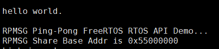<br />
Then enter “boot” in the A53 U - boot command line to start the kernel. At this time, you can see the following output on the serial terminal of the Cortex M7:<br />
</p>
<p>5. After the system to start, load the following kernel modules on the serial terminal of the Cortex A53:</p>
<div class="highlight-plain notranslate"><div class="highlight"><pre><span></span>modprobe imx_rpmsg_pingpong
</pre></div>
</div>
<p>After the modules are loaded, the Cortex A53 starts to transmit data with the Cortex M7. At this time, you can see the following output on the serial terminal of the Cortex M7:<br />
</p>
<p>At this time, you can see the following output on the serial terminal of the Cortex A53:<br />
</p>
</section>
<section id="freertos-test">
<h3>8.4 FreeRTOS Test<a class="headerlink" href="#freertos-test" title="Link to this heading"></a></h3>
<p>The OK8MP has an internal Cortex M7 core on which FreeRTOS applications can run.<br />
The following is an example of the freertos_swtimer demo to test FreeRTOS.</p>
<ol class="arabic simple">
<li><p>Enter the  compilation directory:</p></li>
</ol>
<div class="highlight-plain notranslate"><div class="highlight"><pre><span></span>cd /mnt/OK-MX8-linux-sdk/freertos_8mp/boards/evkmimx8mp/freertos_examples/freertos_swtimer/armgcc
./build_release.sh
</pre></div>
</div>
<p>The compilation output is as follows:<br />
</p>
<p>The freertos_swtimer.bin file generated by compilation is in the release directory.</p>
<ol class="arabic simple" start="2">
<li><p>Copy the compiled bin file freertos_swtimer.bin to the root directory of the SD card (Fat32). Insert the SD card into the TF interface of the development board and load it in the uboot command line (the mmc loading address may need to be adjusted according to the actual partition situation of the TF card):</p></li>
</ol>
<div class="highlight-plain notranslate"><div class="highlight"><pre><span></span>u-boot=&gt;fatload mmc 1:1 0x48000000 freertos_swtimer.bin;cp.b 0x48000000 0x7e0000 20000
bootaux 0x7e0000
</pre></div>
</div>
<p>At this time, you can see the following output on the serial terminal of the Cortex M7:<br />
</p>
<p>You can see that the terminal periodically prints out the Tick character, indicating that the timer task in the FreeRTOS application is running.</p>
</section>
</section>
</section>


           </div>
          </div>
          <div class="forlinx-footer-social" style="margin-top: 15px; padding: 0 16px;">
  <div style="display: flex; justify-content: space-between; align-items: center; flex-wrap: wrap;">

    <!-- 左侧版权信息 -->
    <span style="font-size: 14px; color: #444;">
      © <a href="https://www.forlinx.net/" target="_blank" style="color: inherit; text-decoration: none;">Forlinx Embedded</a>
    </span>

    <!-- 右侧社交图标 -->
    <div>
      <a href="https://www.facebook.com/Forlinx-Embedded-177890724336237" target="_blank">
        <i class="fab fa-facebook fa-lg" style="margin: 0 6px; color:#3b5998;"></i>
      </a>
      <a href="https://www.linkedin.com/company/forlinx-embedded-technology-co-ltd/" target="_blank">
        <i class="fab fa-linkedin fa-lg" style="margin: 0 6px; color:#0077b5;"></i>
      </a>
      <a href="https://x.com/ForlinxOfficial" target="_blank">
        <i class="fab fa-x-twitter fa-lg" style="margin: 0 6px; color:#000;"></i>
      </a>
      <a href="https://www.youtube.com/@forlinxembedded" target="_blank">
        <i class="fab fa-youtube fa-lg" style="margin: 0 6px; color:#FF0000;"></i>
      </a>
      <a href="https://github.com/ForlinxEmbedded" target="_blank">
        <i class="fab fa-github fa-lg" style="margin: 0 6px; color:#333;"></i>
      </a>
      <a href="https://www.forlinx.net/" target="_blank">
        <i class="fas fa-globe fa-lg" style="margin: 0 6px; color:#2274A5;"></i>
      </a>
    </div>

  </div>
</div>
        </div>
      </div>
    </section>
  </div>
  <script>
      jQuery(function () {
          SphinxRtdTheme.Navigation.enable(true);
      });
  </script> 

</body>
</html>